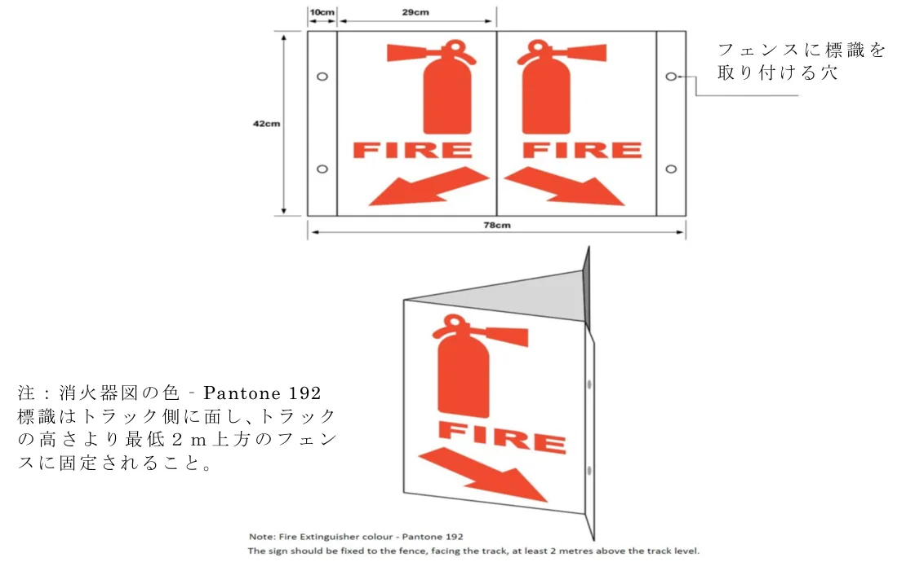
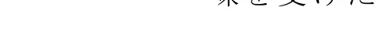
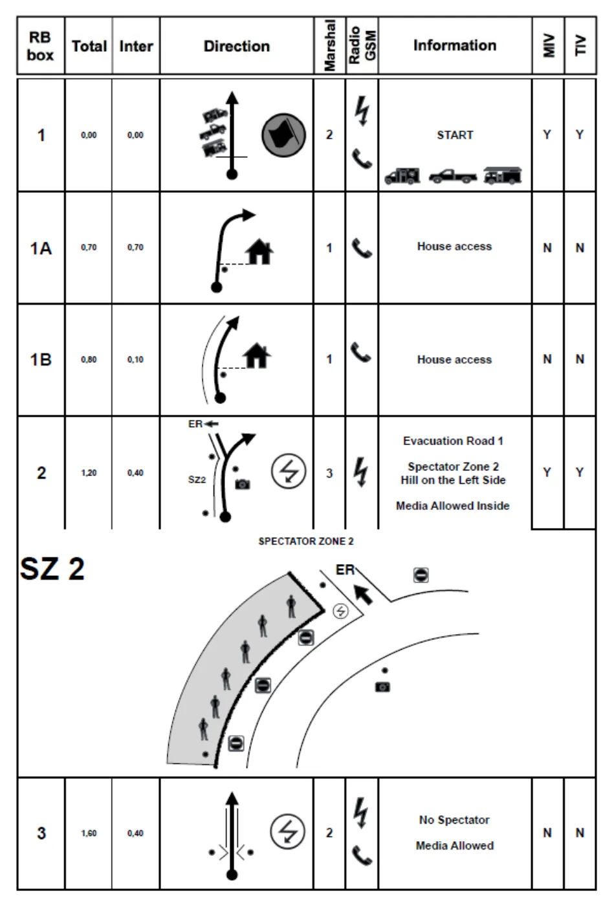
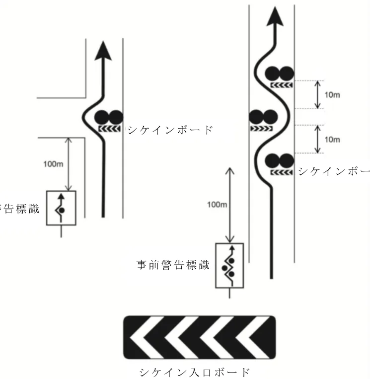
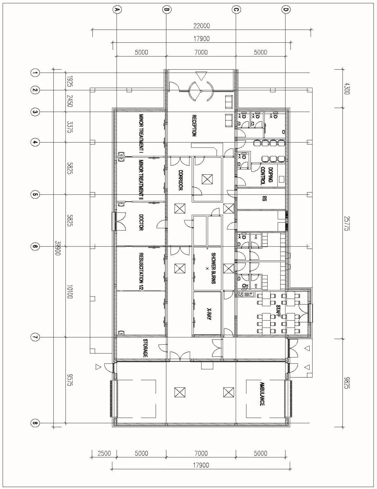

FIA国際モータースポーツ競技規則付則H項_日本語版
JAF の公式サイトではありません。JAF が公開する PDF を自動変換した非公式の検索用アーカイブです。記載内容は必ず JAF の原本 PDF で出典をご確認ください。 検索と AI 質問つきのビューアで開く
P.1国際モータースポーツ競技規則 付則Ｈ項
ロードの管制および緊急役務についての勧告
本規定は国際自動車連盟制定の国際モータースポーツ競技規則付則Ｈ項（２０２６年３月１２日発行版）を日本自動車連盟（ＪＡＦ）が仮訳したものである。本規定は日本国内で開催されるＪＡＦ公認競技に国内競技規則の付則として適用される。それぞれの競技会においては、本付則の基準をもとに、当該競技会の規模、内容等を配慮のうえ、その目的に対処できる実施細目を競技長が決定しなければならない。本規定の正本はフランス語版であり、この訳定文の解釈に疑義または相違が生じた場合は、フランス語版に拠って解釈すること。
P.2■ 目 次 ■
第1章 目 的 ................................................................................................... 8
1.1 定 義 ........................................................................................................ 8 1.2 運 用 ........................................................................................................ 8 1.3 一般規定 .................................................................................................. 10 1.4 ドローンまたはその他の無人航空機 .......................................................... 10第2章 サーキットレース ................................................................................... 12
2.1 レース管制 ............................................................................................... 12 2.1.1 定 義 .................................................................................................. 12 2.1.2 位 置 .................................................................................................. 12 2.1.3 備 品 .................................................................................................. 12 2.1.4 運 営 .................................................................................................. 13 2.2 計時室 ...................................................................................................... 15 2.3 ピットレーン ............................................................................................ 15 2.3.1 スピード制限 ....................................................................................... 15 2.3.2 人員の制限 .......................................................................................... 15 2.3.3 燃料補給を行うレース競技における予防策 ........................................... 16 2.3.4 ピットレーン内のマーシャルの配置 ..................................................... 16 2.4．マーシャルポスト .................................................................................... 17 2.4.1 定 義 .................................................................................................. 17 2.4.2 数と位置 ............................................................................................. 17 2.4.3 備 品 .................................................................................................. 18 2.4.4 ポスト要員 .......................................................................................... 20 2.4.5 役 務 .................................................................................................. 20 2.5 信 号 .................................................................................................... 21 2.5.1 概 論 .................................................................................................. 21 2.5.2 旗信号の仕様 ....................................................................................... 22 2.5.3 灯火信号の仕様 ................................................................................... 22 2.5.3.1 灯火の仕様 ............................................................................. 22 2.5.3.2 灯火の位置 ............................................................................. 23 2.5.3.3 灯火の操作 ............................................................................. 23 2.5.3.4 その他の灯火信号 .................................................................. 24 2.5.4 競技長または副競技長によって使用される信号 .................................... 24 2.5.4.1 競技長旗信号 ......................................................................... 24 2.5.4.2 競技長灯火信号 ...................................................................... 28 2.5.5 マーシャルポストで使用される信号 ..................................................... 28 2.5.5.2 ポスト要員灯火信号 ............................................................... 33 2.5.6 スタート灯火信号（特別な規則を有するＦＩＡ選手権を除く） ................ 33 2.6 トラック上の緊急役務 .............................................................................. 36 2.6.1 状 況 .................................................................................................. 36 2.6.2 車両の停止の場合 ................................................................................ 37 2.6.3 事故発生の場合 ................................................................................... 37 2.6.3.1 第一緊急処置 ......................................................................... 37 2.6.3.2 第二緊急処置 ......................................................................... 38 2.7 救助役務 .................................................................................................. 38 2.7.1 緊急出動車両 ....................................................................................... 38 2.7.1.1 機 能 ..................................................................................... 39 2.7.2 消火役務 ............................................................................................. 40 2.7.2.1 任 務 ................................................................................... 40 2.7.2.2 編 成 ................................................................................... 40
P.32.7.2.3 トラック側縁の器材 ............................................................... 41 2.7.2.4 燃料補給ピット内の器材 ........................................................ 42 2.7.2.5 パドック内の器材 .................................................................. 42 2.7.2.6 消火剤 ................................................................................... 42 2.7.3 切削工具による救出 ............................................................................. 42 2.7.3.1 目 的 ................................................................................... 42 2.7.3.2 技術的な支援 ......................................................................... 43 2.8 グレード１～４のサーキットにおける医療役務 ......................................... 43 2.8.1 総 論 .................................................................................................. 43 2.8.2 編成と運営 .......................................................................................... 44 2.8.2.1 医師団長 ................................................................................ 44 2.8.2.2 医師団長の役務 ...................................................................... 45 2.8.2.3 ＦＩＡメディカルデリゲート .................................................. 48 2.8.2.4 救急委員長 ............................................................................. 48 2.8.2.5 救急委員長の役務 .................................................................. 48 2.8.3 医療役務の構成と人員の定義 ............................................................... 48 2.8.3.1 連絡の手段 ............................................................................. 50 2.8.3.2 緊急出動医療車両（MIV）（装備については「補足３」を参照） .... 50 2.8.3.3 救助チーム（「補足７」も参照のこと） ................................. 51 2.8.3.4 メディカルセンター ............................................................... 52 2.8.3.5 メディカルセンターの要員 ..................................................... 54 2.8.3.6 「徒歩」の医師 ...................................................................... 55 2.8.3.7 医療および救急救命要員の識別 .............................................. 55 2.8.3.8 負傷者の救助役務 .................................................................. 55 2.8.3.9 公衆に対する医療役務 ............................................................ 59 2.8.4 医療要員出動手順 ................................................................................ 59 2.8.5 医療および救急救命要員の訓練 ............................................................ 61 2.8.5.1 救助訓練 ................................................................................ 61 2.8.5.2 「特定のテーマを持った」医療および救助訓練 ....................... 62 2.8.6 Ｆ１およびＷＥＣの新しい競技における確認 ........................................ 63 2.8.7 当初開催が決められていたサーキットからの変更 ................................. 63 2.9 その他の役務 ............................................................................................ 64 2.9.1 サーキットの維持・管理 ...................................................................... 64 2.9.2 放置されたレース車両の排除および回収 ............................................... 64 2.9.3 安 全 .................................................................................................. 65 2.9.4 コースカー .......................................................................................... 65 2.10 セーフティカー運用手順 ............................................................................ 65 2.10.1 ............................................................................................................ 65 2.10.2 ............................................................................................................ 66 2.10.3 ............................................................................................................ 67 2.10.4 ............................................................................................................ 68 2.10.5 ............................................................................................................ 68 2.10.6 ............................................................................................................ 68 2.10.7 ............................................................................................................ 69 2.10.8 ............................................................................................................ 69 2.10.9 ............................................................................................................ 69 2.10.10 .......................................................................................................... 69 2.10.11 .......................................................................................................... 70 2.10.12 .......................................................................................................... 71 2.10.13 .......................................................................................................... 71 2.10.14 .......................................................................................................... 71 2.10.15 .......................................................................................................... 72 2.10.16 .......................................................................................................... 72 2.10.17 .......................................................................................................... 73 2.10.18 .......................................................................................................... 73
P.42.10.19 .......................................................................................................... 74 2.10.20 .......................................................................................................... 74 2.11 夜間レースに関する推奨規定 .................................................................. 75 2.11.1 マーシャルポストの備品（2.4参照） .................................................. 75 2.11.2 マーシャルポスト要員（3.4参照） ..................................................... 76 2.11.3 競技長によって使用される信号（2.5.4参照） ..................................... 76 2.11.4 緊急役務（2.6参照） .......................................................................... 77 2.11.5 医療、火災および救助に関する役務 ................................................... 77 2.11.6 セーフティカー（2.10参照） .............................................................. 78 2.11.7 特別規則書 ........................................................................................ 78 2.12 ＴＶクルーおよび機材に関する特別勧告事項 ........................................... 78第3章 オートクロスおよびラリークロス ............................................................ 80
3.1 組織化に関する一般規定 ........................................................................... 80 3.2 ロードの管制 ............................................................................................ 80 3.2.1 レース管制室 ....................................................................................... 80 3.2.2 マーシャル .......................................................................................... 80 3.2.3 信 号 .................................................................................................. 82 3.3 医療役務 .................................................................................................. 83 3.3.1 ............................................................................................................. 83 3.3.2 ＦＩＡ世界ラリークロス選手権に関する特別措置 ................................. 85 3.4 消火および救助役務 .................................................................................. 87 3.5 その他の役務 ............................................................................................ 88 3.6 トラック上の緊急処置 .............................................................................. 88第4章 ドラッグレース .......................................................................................... 89
4.1 組織化に関する一般規定 ........................................................................... 89 4.2 トラックの管制 ........................................................................................ 89 4.2.1 レース管制 .......................................................................................... 89 4.3 医療役務 .................................................................................................. 89 4.3.1 ............................................................................................................. 90 4.3.2 連 絡 .................................................................................................. 91 4.3.3 管理上の手続き ................................................................................... 91 4.3.4 観客の安全 .......................................................................................... 91 4.3.5 緊急医療役務の組織化 ......................................................................... 91 4.4 消火および救助役務 .................................................................................. 92 4.5 その他の役務 ............................................................................................ 93第5章 ラリー ....................................................................................................... 93
5.1 概 論 ...................................................................................................... 93 5.2 セーフティプランおよび管理上の手続き ................................................... 93 5.2.1 ............................................................................................................. 93 5.2.2 ............................................................................................................. 94 5.2.3 ............................................................................................................. 97 5.2.4 安全委員長 .......................................................................................... 97 5.2.5 スペシャルステージ安全委員 ............................................................... 97 5.2.6 観客安全委員長 ................................................................................... 97 5.2.7 オフィシャルおよびマーシャル ............................................................ 98 5.2.8 セーフティパトロールクルー ............................................................... 98 5.2.9 トレーニング ....................................................................................... 99 5.3 医療および救助役務 ................................................................................. 100 5.3.1 概 論 ................................................................................................. 100 5.3.2 要 員 ................................................................................................. 100 5.3.3 緊急出動車両 ...................................................................................... 104 5.3.4 蘇生治療のための装置を装備した救急車 .............................................. 106 5.3.5 処置/蘇生装置 ..................................................................................... 106
P.55.3.6 搬送用救急車 ...................................................................................... 107 5.3.7 医療装備ヘリコプター ........................................................................ 107 5.3.8 専門救助隊の配置 ............................................................................... 108 5.3.9 連絡手段 ............................................................................................ 108 5.4 公衆の安全 .............................................................................................. 109 5.4.1 教育映像（すべてのイベントに推奨される） ....................................... 109 5.4.2 観衆の管理 ......................................................................................... 109 5.4.3 燃料補給とサービス ............................................................................ 111 5.4.4 セーフティカー .................................................................................. 111 5.4.5 情 報 ................................................................................................. 114 5.4.6 医療役務 ............................................................................................ 114 5.5 競技クルーの安全 .................................................................................... 115 5.5.1 安全役務の配置 .................................................................................. 115 5.5.2 救助役務の出動 .................................................................................. 117 5.5.2.1 ............................................................................................... 117 5.5.2.2 ............................................................................................... 117 5.5.3 救 出 ................................................................................................. 117 5.5.4 ロードおよび信号の管制 ..................................................................... 118 5.5.4.1 ............................................................................................... 118 5.5.4.2 ............................................................................................... 119 5.5.4.3 ............................................................................................... 119 5.5.4.4 ............................................................................................... 120 5.5.4.5 ............................................................................................... 121 5.5.4.6 ............................................................................................... 121 5.5.5 SOS/OKサイン － 競技者の安全 ......................................................... 121 5.5.6 危険防止 ............................................................................................ 121 5.5.7 シケイン ............................................................................................ 121 5.5.7.1 物理的なシケイン ................................................................... 122 5.5.7.2 バーチャル（仮想）シケイン .................................................. 123 5.5.8 事故の場合 ......................................................................................... 121 5.6 事故報告 ................................................................................................. 122 5.6.1 観衆を巻き込んだ事故 ........................................................................ 125 5.6.2 事故調査 ............................................................................................ 125第6章 国際クロスカントリーラリーおよびバハクロスカントリーラリー .............. 126
6.1 概 論 ..................................................................................................... 126 6.2 セーフティプランおよび管理上の手続き .................................................. 126 6.2.1 ............................................................................................................ 126 6.2.2 ............................................................................................................ 126 6.2.3 緊急時の対応計画 ............................................................................... 127 6.2.4 安全委員長 ......................................................................................... 127 6.2.5 ............................................................................................................ 128 6.3 医療および救助役務 ................................................................................. 128 6.3.1 医療役務の構成: ................................................................................. 128 6.3.2 連絡手段： ......................................................................................... 131 6.3.3 メディカルオーバーオール ： ............................................................. 131 6.4 公衆の安全 .............................................................................................. 131 6.4.1 外部の安全： ...................................................................................... 131 6.4.2 公衆への医療役務： ............................................................................ 132 6.4.3 安全啓発 ： ........................................................................................ 132 6.5 競技クルーの安全 .................................................................................... 132 6.5.1 監 視 ................................................................................................. 132 6.5.2 パッセージコントロールカーの配置 .................................................... 133 6.5.3 競技参加者のセフティーパック/サバイバル用装備 ............................... 133 6.5.4 SOS/OKサイン ................................................................................... 134
P.66.5.5 内部の安全（救助計画） ..................................................................... 135 6.5.6 医療の範疇 ......................................................................................... 135 6.5.7 推奨される緊急出動医療車両（MIV）の配置 ........................................ 136 6.5.8 緊急医療役務の組織化 ........................................................................ 138 6.5.9 救助役務の出動に関する推奨事項 ........................................................ 138 6.5.10 「フィニッシュ」と「ストップ」地点間の減速エリア ........................ 138第7章 ヒルクライム ............................................................................................ 140
7.1 組織化に関する一般規定 .......................................................................... 140 7.2 ロードの管制 ........................................................................................... 140 7.2.1 マーシャルポスト ............................................................................... 140 7.2.2 役 務 ................................................................................................. 140 7.2.3 装 備 ................................................................................................ 140 7.2.4 信 号 ................................................................................................. 141 7.3 医療役務 ................................................................................................. 142 7.3.1 一般概念 ............................................................................................ 142 7.3.2 医療役務の構成 .................................................................................. 142 7.3.3 連 絡 ................................................................................................. 144 7.3.4 管理上の手続き .................................................................................. 144 7.3.5 観客の安全 ......................................................................................... 144 7.3.6 緊急医療役務の組織化 ........................................................................ 145 7.4 消火および救助役務 ................................................................................. 145 7.4.1 一般概念 ............................................................................................ 145 7.4.2 マーシャルポスト ............................................................................... 146 7.4.3 医療緊急出動車両 ............................................................................... 146 7.4.4 医師 ................................................................................................... 146 7.5 救 出 ..................................................................................................... 146 7.5.1 .......................................................................................................... 146 7.5.2 .......................................................................................................... 146 各カテゴリーの要件参照早見表 ...................................................................................... 147 ラリー、ヒルクライム、ドラッグレース競技における医療役務の組織 .................... 148 補足1 モーターレーシングサーキットにおけるFIA競技のテストについての推奨事項 .................. 149補足2 FIA世界選手権における医師団長および副医師団長および救急委員長の認可手順 .... 153補足3 携帯用緊急処置装備 .................................................................................. 158補足4 蘇生エリア（メディカルセンター、処置／蘇生ユニット、 ビバークなど）に必要となる装備 ................ 172補足5 負傷者救出用に使用される搬送手段内の装備 ............................................. 177補足6 メディカルセンターの設計と建設 .............................................................. 181補足7 救助チームおよび技術的救助（車両からの救出） ....................................... 189補足8 FIAメディカルデリゲートの任務 ............................................................... 193補足9 医務要件不遵守についての罰則システム .................................................... 193補足10 高電圧作業の安全性 .............................................................................. 19399
2027年の変黒点 .................................................................................................... 193
P.7国際モータースポーツ競技規則 付則Ｈ項
ロードの管制および緊急役務についての勧告
注釈：簡潔のために、男性形代名詞が両方の性別について使用されています。
P.8第1 章 目 的
1.1 定 義
この付則は、国際モータースポーツ競技規則でモータースポーツに
関連付けられる様々な規則において、ロードの管制と緊急役務の目的
を定義し、またこれらの目的を達成するための手段を示すものである。
ロードの管制は、競技運営上のオブザベーション（監視）、信号
および救急処置を通じ安全状態を維持するためのものである。緊急
役務は必要時、専門的な支援を与えることを目的とする。これらの
４つの側面について以下で詳細に考察する。
ＦＩＡにはプライベートテストを規制する責任はない。ただし、
ＦＩＡは、競技時のスピードでテストを行ういかなる者に対しても、
以下のことを勧告するものとする。
１）他人に危険が及ばないことを保証すること
２）本推奨事項から派生した基準による、自己の安全のための基本
的予防策を講じること。
推奨される最小限の安全対策は、本付則の「補足１」に示されて
いる。
1.2 運 用
これらの全作業は、いかなる場合においても競技長の統轄下にあ
るべきである。競技において選手権やシリーズのレースディレクタ
ーが役務についている場合は、当該選手権またはシリーズのプラク
ティスセッション中および決勝レース中、競技長と安全対策につい
ては、レースディレクターの最終的権限下に入ることとなる。
競技長はロードの管制と緊急役務の組織運営および統轄につい
て責任を負う自己の代理人を指名するものとする。この代理人は安
P.9全管理責任者という役職であり、競技長に対し直接に報告を行う；
副競技長がこの役職を務めることができる。
それぞれの競技においては、これらの推奨要件に基づいた総合的
な安全計画を立てることとする。この計画は競技長の承認を得る必
要があり、以下に述べられているあらゆる作業を規定するものとし
て用いられることとなる。競技長またはその代理人は、競技中、そ
の計画の実施を指揮すること。
この計画には、次の各項目の設置が必要である。
－ マーシャルポスト
－ 医療および消火役務ならびに関連緊急車両
－ 他の救急および関係車両
－ 公衆の安全と保安対策
計画において、競技長またはその代理人に対し直接の責任を負う
各役務の担当責任者を指名し、レース管制上の役務を記載すること。
なお、通常のイベントにおいて予知される事故の範囲を超えた大
事故の場合に対する応急計画を立案しておくこと。
1.2.1 サーキット/ラリーの医療および救助役務の編成と運営の
全体的な管理については、組織委員会との合意に基づき、専ら医師
団長がその全体責任を負う。
すべての対応要員の全体的な安全を確保し、医療要員と救助要員
の安全な接近を促進するために、あらゆる緊急介入の運用上の監督
はＡＳＮ救急委員長 (または適切な技能を備え、指名された救助チ
ームのリーダー) の役割となる。 彼は現場の安全を担当し、すべて
の消火活動と技術的救助活動を指揮し、それらの活動に関する人材、
資源、機器の管理責任者となる。
彼はまた、競技長の、そして最終的にはレースディレクター（該
当する場合）の権限下に置かれる。
P.101.3 一般規定
ロードの監視および事故の際の緊急出動に必要とされる要員の人
数に関する推奨事項は競技全体を通じて適用されるものとする。も
し仮に特定の日（例えば平日）にこれを満たすことができない場合
は、競技を安全に運営するため十分な要員数を確保すべく、競技進
行予定を再調整するものとする。
安全について従事する者（つまり、マーシャル、医師、救急救命
士、消防員など）は、その職種に応じ、また各競技の運用マニュア
ルに明記される視覚的な識別による方法に従って、容易に識別でき
ること。
会場全体の安全性を高めるために、観客や参加者に、施設内の乗
用車の運転/乗車時にシートベルトを着用すること、スクーターや
オートバイなどに乗るときはヘルメットを着用すること、また、移
動に関連するその他の同様の交通安全注意事項および/あるいは地
方条例を、目立つ場所に看板を掲示し、警告すること。
1.4 ドローンまたはその他の無人航空機
無人航空機（ＵＡＶ）は一般にドローンとして知られており、開
催国の法律および当該競技会を認可する現地ＡＳＮの方針によっ
て許可され、運用されている場合には競技会場でのみ使用すること
ができる。
レクリエーションＵＡＶの使用は禁止される。
ＵＡＶは、以下の条件で競技中に、コースの上空を飛行すること
が許可される場合がある：
－ 主催者の承認があること、および
－ オペレーターは、レースディレクターが任命されている場合はレ
ースディレクター、または競技長の出す指示に従う。
P.11いかなるステージにおいても、ＵＡＶは：
－ 地上５ｍ未満で運用してはならない。ただし、離陸・着陸の間、
もしくはレースディレクターが任命されている場合はレースデ
ィレクターが、または競技長が別途承認した場合を除く。
－ 医療用車両や事件に関わっている人の近くで操作することはで
きない。ただし、レースディレクターが任命されている場合はレ
ースディレクターが、または競技長が要請した場合を除く。
－ 一般公衆、パドックエリア、ステージエリア、または主催者によ
って指定されるその他の特定のエリアから隔離されたエリアで、
離陸または着陸すること。
ＪＡＦ［注］
１）コース：固有の設備を含み、自動車競技に使用する走路
あるいはトラックをいう。コースはその施設の
特性および競技に対するその適応性に応じて
特設・準常設および常設に区別される。
２）トラック：競技に使用するため特別に建設された走路ある
いは転用される走路をいう。
３）ロード：路側帯（グリーン）を含んだトラックをいう。
４）サーキット：周回しうるクローズドのコースをいう。
P.12第2 章 サーキットレース
2.1 レース管制
2.1.1 定 義
レース管制とは、レースを管理・監督する中央施設であり、レース
管制は、競技長とその代理人、また、もしレースディレクターが相応
しい場合にはレースディレクターに対し、適した状況において役務を
行うべく必要なすべての設備を供するものとする。室内は、役務遂行
に適した防音性を有し、特定の役員のみが立ち入ることのできるもの
とする。トラック上で何らかの行為が行われている間は、常に競技長
または彼が指名した役員がレース管制にいるものとする。競技長の任
務は国際モータースポーツ競技規則第11 条11 項に規定される。
2.1.2 位 置
レース管制室は通常、ピット入口終了地点のピット建物内の地上
２階以下に置くものとする。トラックあるいはピットレーンに通ず
る別個の出口を備えること。
2.1.3 備 品
レース管制室は次のものを備えることとする。
ａ）オブザベーションポスト、主要緊急ポストおよび連絡系統全
体に連絡できる電話、あるいは電子通信システム
ｂ）一般回線に通じる電話及びファックス
ｃ）トラック上のオフィシャルと連絡できる相互通話装置の設備
ｄ）各車両および各ポストと連絡できる無線電話の設備
ｅ）ピット、パドックに連結され、一般入場者向けの拡声装置す
べてに連絡可能なマイクロフォン（送話機）
ｆ）トラックに有線ＴＶがある場合は、複数のＴＶモニターと切
り替えスイッチの設備
P.13ｇ）すべての安全設備の位置を記した大きなサーキット図
注：競技で使用されるすべての通信システムは管制室に集約されな
ければならない。
2.1.4 運 営
競技中におけるどのパートのスタート前、あるいはサーキットを
再開する場合には、競技長または競技長に指名された役員はロード
を閉鎖し、次の事項を確認しなければならない。
ａ）路面からすべての障害物が取り除かれていること。
ｂ）すべてのオブザーバーとマーシャル、緊急要員およびその装
備が正しく各部署に配置されていること。
ｃ）トラックに出入りするためのすべての通路が閉鎖されているこ
と。
これらの確認を行うため、コース査察車両は、赤旗または赤色灯
火を表示しながら最終査察走行を実施するものとする。
最終査察走行中には次の注意事項を遵守すること。
－ サーキットを閉鎖するためのコース査察車両は、競技長の直
接の許可がない限りコース上を走行している他の車両を追い
越したり、また自分の後に残してきたりしてはならない。
－ コース査察車両のオフィシャルは、トラックの閉鎖に関し直
接競技長に報告しなければならない。
－ 競技終了後、あるいはしかるべき休憩が予想される場合、競技
長あるいは競技長に指名された役員は、サービス車両やマー
シャルが、破片除去、器材の撤収、故障車両や事故車両等の除
去のためにサーキットに入場できることを示す緑旗または緑
色灯火を表示した状態で、コース査察車両でトラックを周回
することによって路上開放に応じることができる。
－ コース査察車両が通過した後、またはレース管制の許可が下
P.14りた後にのみ、サービス車両やマーシャルが割り当てられた
位置から移動すること、および／あるいはサーキットに入る
ことが許される。
－ 中断後に競技を続ける場合は、赤旗または赤色灯火を表示し
たコース査察車両がロードを再び閉鎖しなければならない。
本規則における競技長のその他の任務は次の通り：
－ オブザーバーの要請で、緊急役務責任者との合意のもと必要
と考え得る緊急要員の配置についての承認
－ 競技長専用信号の使用
－ できる限り肉眼か、または導入されていれば、監視に適したサ
ーキットのＴＶシステムによるトラックの監視
－ 各ポストで取るべき適正な対処のため、すべてのオブザーバーの
報告が反映された正確な記録が取られていることについての確認
さらに競技が国際モータースポーツ競技規則、もしそれが適切な
らば基準選手権規則および競技会特別規則書に合致していること
を確認する責任を有する。
2.2 計時室
計時室はレース管制の建物内で２階あるいは３階に置かれ（１階
には設置されない）、ピットレーン、トラック、コントロールライ
ンおよびスタート／フィニッシュ合図が妨げなく明瞭に見渡せる
こと。状況により異なる場所に計時室を配置する必要がある場合が
ある。
計時室の最低仕様について、ＦＩＡ計時システムガイドラインを
参照のこと。
P.152.3 ピットレーン
2.3.1 スピード制限
Ｆ１世界選手権およびオーバルサーキットを除くすべての国際
サーキット競技において、プラクティスまたは決勝レースでピット
レーンを使用する車両は、時速６０ｋｍを超えてはならない。これ
はピットレーン全体に適用され、速度超過についてのチェックが行
われなければならない。
2.3.2 人員の制限
レース競技のオーガナイザーは、競技開催中ピットレーンは危険
性のある場所であることを常に認識していなければならない。これ
はレース車両を使用するという理由だけではなく、ピットレーンに
隣接するレーストラック上の車両によって生じるかもしれない事
故も想定されるからである。
それゆえピットレーンへは、プラクティスや決勝レースの間、行
うべき特定の業務を有する特に許可された担当者のみ立ち入るこ
とができるものとする。ピットウォールシグナリングプラットフォ
ームへの立ち入りは、特別なパスを所持している許可を受けたオフ
ィシャルまたはレースチームの担当者を除き、禁じられる。ただし、
レースのスタート時は、いかなる者でも立ち入ることは厳密に禁じ
られる。しかし、レースディレクター（任命のある場合）あるいは
競技長の裁量で、適切な保護が適所に設置される場合は除く。
チーム担当者は、車両に対する必要業務遂行直前に唯一立ち入り
が認められ、業務完了次第退去しなければならない。
ピットウォールデブリフェンスへ人がよじ登ることは、禁じられ
る。当該禁止事項を遵守しないチーム行為は、競技審査委員会に報
告される。
ピットレーンへのゲストの立ち入りは特定のパスによって管理
P.16される必要があり、ピットウォークやガレージツアーなどの競技外
のアクティビティ中の立ち入りを管理するために、ピットレーンで
は常にセキュリティが維持されるべきである。
活動中のピットレーン（サーキットが制限されているとき）には
何時もゲストは立ち入ることはできない。これは、あらゆるプラク
ティスセッション中やレース中、またレース開始手順のためにピッ
トレーンオープン中にも適用される。この特定のケースでは、すべ
てのゲストはピットレーンオープン前にグリッド上にいて、ピット
レーンクローズされた後にのみグリッドから出なければならない。
主催者は、オフィシャル、ドライバー、チーム要員、および承認
されたメディアを除く全員が、フォーメーションラップ開始の遅く
とも５分前にグリッドから退去していることを確認しなければな
らない。
レース終了後、すべての車両がパークフェルメに入場し、および
／またはピットベイに停止するまで、ゲストはピットレーンに立ち
入ることはできない。パークフェルメおよび／または表彰台に向か
うオフィシャル、チーム要員、および承認されたメディアは、最終
車両がチェッカーフラッグを通過した後にのみ移動すること。
2.3.3 燃料補給を行うレース競技における予防策
レース燃料補給システムを使用する際は、競技中車両に携わるチ
ーム担当者全員、火炎から、頭、顔、眼を含む身体すべてを守る被
服を着用しなければならない。
ピットレーンで起こった火災から十分に保護されることのない
立地状況にあるピット建物については、レース車両に燃料補給を行
う決勝レース中、建物内のいかなる場所にも人が立ち入ることは認
められない。
2.3.4 ピットレーン内のマーシャルの配置
P.17ピットレーンで発生した一切の事件をドライバーに警告するため、
オーガナイザーはピット入口および出口にマーシャルを１名ずつ
配備し、さらにピットレーン長に沿い１０ガレージごとに１名を配
備しなければならない。
このようなすべてのマーシャルは常にピットウォール上に配備さ
れる。第２条５項５.ｂに従い、ドライバーが気づく必要のある事件
が発生していない限り、ピットレーンで黄旗が提示されないこと。
さらに、特定の選手権で競技規則にその様な要求がある場合、追加
のマーシャルが配備されること。
2.4．マーシャルポスト
2.4.1 定 義
トラックおよび隣接区域の監視は、マーシャルポスト要員によっ
て行われる。トラックに隣接して設置されるもっとも簡素な形のマ
ーシャルポストは、要員と器具を競技車両から防護するために適切
で安全な場所に設置されなければならない。
2.4.2 数と位置
数と位置はそれぞれのサーキットの特性と次の各事項を考慮し
て決定される。
－ ロードのバリアの間では、いかなる区部も監視ができること。
－ それぞれのポストはその前後のポストと目視で連絡できるよう
配置されていること。またはこの条件を満足させるために補助
ポストまたは中継ポストを設置し、追加要員を配属すること。
－ 隣接するポスト（補助ポストは含まない）の距離は５００ｍ以内
でなければならない。
－ ３人以上が配置されている各ポストは、少なくとも１名がレー
ス管制と言語で連絡できなければならず、いかなる走路上の活
P.18動中も常にポストに留まらなければならない。
－ 各ポストは、後述される付番体系およびサインボード仕様を使
用し、スタートラインから進行方向に従って第１ポスト以下の
番号を表示することとし、ポスト番号の表示はトラックから明
らかに見えるものでなければならない。
－ ポストの数および位置の変更についてはＦＩＡに届けること。
競技長の合図が出されるメインマーシャルポスト（「０」と指定）
から始まり、各マーシャルポスト（ＭＰ）は以下の方法により識
別されること：
－ コーナー２→ＭＰ２、次のＭＰは次のコーナーとのその相対的
距離によって決められる。例えばＴ２とＴ３の中間であれば、Ｍ
Ｐ２.５とし、コーナー３に近いものはＭＰ２.９とすることが
できる。
－ ＭＰサインボードは、幅４０ｃｍ、高さ３０ｃｍで、白地に黒文
字でコーナー番号とリンクした番号を表示し、走行してくるト
ラックからはっきりと見えるものであること。その他の文字や
番号体系は使用しないこと。
黄色信号に関する規則適用（2.5.5.bを参照）を補助するために、
特定の黄旗あるいは灯火が提示される正確な地点（追い越し禁止）
を、レーシングラインおよび／あるいはコース端部より約１ｍに設
置されたフレキシブル垂直マーカー（《フロッピー》）から最も遠
いコース端部から引かれる垂直な１０cm幅の色つきの線よって、明
確にすることができる。
2.4.3 備 品
各ポストは次の備品を設備しなければならない。
ａ）レース管制と信頼性のある双方向の通信システム
（なお、これには独立したバックアップのシステムを要する。）
P.19ｂ）以下の内容の信号旗一式
黄旗２本
赤の縦縞のある黄旗１本
青旗１本
白旗１本
緑旗１本
赤旗１本
あらゆる補助ポストあるいは中継ポストにも同様な信号旗一
式を備えなければならない。また、競技長の指示によって、所定
のポストに黒旗と黒／オレンジ旗を配備することができる。
さらに、各ポストにはセーフティカー導入時に使用するため、
６０ｃｍ×８０ｃｍの大きさの白地の背景に４０ｃｍの大きさ
の黒文字で“ＳＣ”と書かれた板を配備することとする。
また各ポストには、「フルコース・イエロー」手順が実施され
た際に使用する、少なくとも６０ｃｍ×８０ｃｍの大きさの黄色
地の背景に高さ４０ｃｍの黒文字で“ＦＣＹ”と書かれたボード
を備えていること。
ｃ）オイル、燃料およびその他の液体の漏れ出たものを清掃できる
吸収剤１０リットル。
ｄ）毛先の硬いホウキ（ブラシ）とスコップを各２本。
ｅ）2.7.2.3 に規定されている補足器材加え、屋外での車両火災消
火に適した、それぞれ総重量１０kg 以下で、消火薬剤を６kg
以上収容する携帯用消火器最低３本。
走路上のゴミを適時に除去するため、以下の仕様のブロワーを
サーキット周辺のマーシャルポストに一定間隔で設置すること
が勧められる。
－ 最小風量380CFM
P.20－ 最小送風力9N
2.4.4 ポスト要員
それぞれの主ポストは、１名のポスト主任（オブザーバー）と、
これを補佐する副主任とによる責任体制の下に設置される。なおポ
スト主任または副主任は、共にＡＳＮの管理の下で特定の試験後、
当該任務に適格である旨認められた者とする。ポスト主任と副主任
が、マーシャルポストの役務について基礎的な訓練を受けた者の配
置を決定するものとする。ポスト主任または副主任は、レース管制
と口頭での連絡を行なうこととする。
すべてのコース脇マーシャルは基本の救急療法の訓練を受ける
よう奨励されること。
マーシャルポスト要員は競技終了時に、コース点検車両の通過前、
あるいはレース管制から許可を得ることなく、受け持ちのポストを
離れてはならない。
ポスト要員は、旗信号と似ている色の衣服を着用しないこととし、
特に黄色または赤色は避けることとする。
2.4.5 役 務
各ポストの役務は次の通りである。
－ ドライバーが予知できない可能性のある危険や障害に関する
ドライバーへの信号警告（2.5 参照）
－ 当該ポスト受持区域内で発生した事件あるいは事故についてレ
ース管制への迅速な報告と、必要な場合には緊急要員の出動要請
－ 2.6 で規定しているトラック上の緊急役務
－ レースがスポーツ的見地から公正に行われていることの確認
と、もし具体的に国際モータースポーツ競技規則付則Ｌ項第
４章「サーキットにおけるドライブ行為の規律」に照らして非
スポーツ的行為あるいは危険な行動があった場合はレース管
P.21制へその報告
－ 吸収剤やホウキ（ブラシ）またはスコップによる当該区間路面
の清掃と障害物の除去
（ただし、漏出したオイルの除去は、これを行わない旨の明確
な要請がない場合（例：Ｆ１ＧＰ）を除き対応する。）
トラック上での各行動の終了時には、ポストはコース点検車両の
通過、あるいはレース管制から許可を得るまで受け持ち区間の路面
管理を続けなければならない。
2.5 信 号
2.5.1 概 論
ロードの管制において、競技長（あるいは副競技長）とマーシャ
ルポスト要員は、ドライバーの安全に寄与し、諸規則を施行するた
めに常に信号を使用する。
昼間における信号は、それぞれに異なった色彩の旗で行い、灯火に
よって補助、あるいは置き換えることができる。
旗と同等の大きさの黒と白のサインボードを特定の信号として
使用することができる。これらは当該競技の特別規則書に明記され
るものとする。
夜間においては、旗は灯火と反射板に置き換えられるが、事前のブ
リーフィングにおいて、すべてのドライバーに知らせなければならな
い。夜間の競技ではそれぞれのポストに黄色灯火を備えることが義務
付けられる（2.11.1 を参照）
複数の信号が使用される場合、どれを標準とするかについて競技の
特別規則書に詳記しなければならない。
スタートはスタートラインに近い位置にて管制され、スターターが
バリアの間のすべてのグリッドを見渡すことができ、クローズドカー
P.22あるいはオープンカーのすべてのドライバーから見えること。そこは
グリッド方向からくる破片に対する防護がされていること。
2.5.2 旗信号の仕様
寸法－信号旗の寸法は６０ｃｍ×８０ｃｍ以上とし、赤旗とチェッ
カーフラッグの寸法は８０ｃｍ×１００ｃｍ以上とする。
色彩－信号旗の色は、以下に定めるＰＡＮＴＯＮＥコードに一致
すること。
赤： 186Ｃ
黄： YellowＣ
青： 298Ｃ
緑： 348Ｃ
黒： BlackＣ
オレンジ： 151Ｃ
2.5.3 灯火信号の仕様
振動表示される赤旗、黄旗、緑旗、青旗および白旗を補助するた
め、灯火を使用することができる。灯火が競技で使用される場合は、
それを特別規則書に明記し、次の要件に配慮するものとする。
2.5.3.1 灯火の仕様
－ 灯火として、ＦＩＡによって認可されたもので、標準的フィラ
メントランプと反射装置を使用したタイプ、発光ダイオード
（ＬＥＤ）を使用したパネル型のタイプ、また、その他の十分
に発光し忠実に色彩を表すことができるタイプのものが認め
られる。
－ 灯火信号は、十分な光量および／または大きさを有し、眩しい
日差しの下で２５０ｍ離れた場所からでもはっきりと認識で
きるものであること。
－ 灯火は３～４Ｈｚの間隔で交互にフラッシュするものであること。
P.23－ 使用される灯火のタイプは、立ち上がり時間はほとんどなく、
瞬時に光を発するものであること。
－ 各灯火は７０°以上の視認範囲を与えることができるもので
あること。
－ ３６０°灯火は使用しないこととする。
－ 使用される灯火は、周囲のあらゆる灯火状況のもとで、他の色
に見間違わないようにするための十分な色彩度を有するもの
とする。
－ 色彩コントラストを最大限に発揮するため、灯火は、つや消し
黒の背景面上に取り付けられるものとする。これは太陽光が
灯火正面の低い位置にある場合、または灯火の後方にある場
合に視認性の確保を考慮したものである。
－ 灯火には、次のマーシャルポストに自己の起動状態を知らせ
るリピーターが付属されているものとする。
－ 常設の灯火の統合システムについては、各灯火の状況が自動
的にレース管制に伝達されるものとする。
2.5.3.2 灯火の位置
－ 通常、設置には、使用される各々の色２個を含むものとする。
－ 灯火は、交互にフラッシュする１組となるように間隔をあけ
て配置され、合併しているように見えてはならない。
－ 赤色と黄色の灯火は、互いに隣り合うように配置されてはならない。
－ 灯火は、レーシングライン上の各ドライバーの主要視線から
３０°以内に設置されるものとする。
－ 灯火は、ドライバーに対して最良状態の灯火表面が最も長時
間見えるものとする。
2.5.3.3 灯火の操作
－ それぞれの旗は、交互にフラッシュする１組のランプ、あるい
P.24はフラッシュライトパネルにより代替されるものとする。ピ
ット出口の青色の信号は単体のフラッシュライトでもよい。
－ ２本の黄旗の振動表示についても必要であると判断される場
合には、旗信号としても提示されるものとする。
－ 赤色灯火は、唯一レース管制から操作されるものとする。
－ その他のすべての灯火は、マーシャルあるいはレース管制か
ら操作され得るものとする。
－ 灯火が個々の設置箇所で操作される場合、各コントロールボ
ックスは、事故的な操作の可能性を回避すべく設計されてい
るものとし、当該コントロールボックスはリピーターライト
が組み込まれているものとする。
－ 電気を使用するシステムには、電源が落ちることを自動的に
防止できる機能が組み込まれていなければならない。
－ 灯火信号は通常１度に１つの合図を示すものであるため、同
時に複数の合図が必要とされる場合、フラッグマーシャルの
存在が重要なものとなる。
2.5.3.4 その他の灯火信号
灯火パネルは、赤の縦縞のある黄旗、ＳＣボードあるいはその他
の信号の視覚的な代替物として使用することができるが、使用に際
しては競技の特別規則書に明記されなければならない。
2.5.4 競技長または副競技長によって使用される信号
2.5.4.1 競技長旗信号
ａ）国 旗：
この旗は決勝レースを開始するために使用することができる。ス
タートの合図はこの旗を振り下ろすことによって行うものとし、ス
タンディングスタートの競技では全車両が静止した後にこの旗を
頭上に掲げる。また、頭上に掲げた後、スタートの合図までは１０
P.25秒以内でなければならない。
何らかの理由で国旗を使用しない場合には、この章に記されてい
る他の旗と紛らわしくない色の旗を使用し、その旨特別規則書に明
記すること。
ｂ）赤 旗：
プラクティスセッションまたは決勝レースの中止が決定された
時、スタートラインにおいて振動表示される。サーキット上のすべ
てのマーシャルポストでも赤旗を振動表示するものとする。
中止の合図が与えられた際、
1）プラクティス中であれば、全車両、直ちに減速し、低速で各自
のピットに戻らなければならない。
2）決勝レース中であれば、全車両、直ちに減速し、低速で赤旗ライン※（本項末の注参照）に向かわなければならない。
3）追い越しが禁じられるとともに、ドライバーは、レース車両お
よびサービス車両がトラック上に存在するかもしれないこと、
サーキットは事故のための完全封鎖がされることがあること、
天候により当該サーキットでレーススピードでの走行が不可能
となることがあることについて留意していなければならない。
4）決勝レースが中止となった場合、ドライバーは、レーススピー
ドでの走行が以下の理由により、無意味となることについて留
意していなければならない。
－ 決勝レースの順位認定または再スタートにおけるグリッド順
は、競技の各規則に則った赤旗提示直前の状況で確定するため。
－ ピットレーン出口が閉鎖されるため。
全車両、決勝レースが再開されるか終了するかの情報が与えられ、
マーシャルによる競技の各規則に則った適切な指示が与えられるまで、赤旗ライン※前に整列して停止するものとする。
P.26コースを閉鎖するために、赤旗は競技長または競技長に指名され
た役員によって表示される（2.1.4 参照）。
※赤旗ライン：コースサイドからもう一方のコースサイドまで、トラ
ックのセンターラインに対し直角で、トラックを横
切る２０ｃｍ幅の実線で、ノンスキッドペイント（す
べり止め効果のある塗料）で示される。決勝レースが
中止または中断した際に、その箇所の後方に全車両
が停止しなければならない。この車両停止箇所は、決
勝レースが再開した際に、セーフティカーが先導を
するためのスターティンググリッド隊列を容易に編
成することができるとともに、各車両が容易にその
隊列に加わることができる場所とする。
5）赤旗掲示後に車両が周回を完了しようとコントロールライン
を通過した場合：
(a) その周回タイムは有効なものとみなされない。
(b) 赤旗が最初に掲示された時点は、公式計時システムによっ
て決定される。ただし、公式計時システムが利用できない
場合、または同期されていない場合は、レースディレクタ
ーもしくは競技長と計時委員長が共同で確認した時点と
する。
(c) 赤旗が最初に掲示された後にそれでも周回タイムが記録
された場合、競技審査委員会はその周回タイムを削除する。
この規定は、すべてのプラクティス走行、予選、およびレースに
適用される。
ｃ）黒と白のチェッカー旗：
この旗はすべてのプラクティスセッションまたは決勝レースの
終了を意味する。
P.27すべての競技車両がコントロールラインを通過するまで、第１防
護線の後方から振動表示されなければならない。
ｄ）黒 旗：
この旗は、該当するドライバーが以下のことを認識するための情
報提供のために使用される。
「この旗が提示された後にピット入口に近づいた際、ピットまた
は特別規則書あるいは選手権規則に記述されている場所に停止し
なければならない。」
いかなる理由であれドライバーがこの指示に従うことができな
くても、連続する４周回以上表示されることはない。
この旗の表示の決定は競技審査委員のみが行うものとし、その決
定は関係するチームに即座に通知される。
ｅ）オレンジ色の円形（直径４０ｃｍ）のある黒旗：
この旗は、該当するドライバーが以下のことを認識するための情
報提供のために使用される。
「該当するドライバーに対し車両に機械的欠陥があり、そのドラ
イバー自身あるいは他のドライバーが危険に瀕しており、当該ドラ
イバーは次の周回時に自己のピットに停止しなければならない。」
技術委員長が承認できる程度まで機械的欠陥が修理された場合
は、当該車両は決勝レースに復帰できる。
ｆ）黒と白に斜めに２分割された旗：
この旗は一度だけ表示され、スポーツ精神に反する行為、または
繰り返すとペナルティを受ける可能性のある行為を行ったドライ
バーに対する警告とされる。
これら３つの旗（ｄ、ｅおよびｆ）は車両番号を白数字で表示し
た黒板とともに不動表示される。その黒板は表示されている車両番
号のドライバーに対し示される。旗と車両番号は、１つのボードに
P.28併せて表示することができる。
競技長がその必要があると判断した場合、これらの旗はスタート
ライン以外の場所でも表示することが許される。
通常、最後２つの旗（ｅとｆ）の表示の決定は競技長が行うが、
特別規則書あるいは選手権競技規則に明記されていれば競技審査
委員によって行うことができる。その決定は関係するチームに即座
に通知される。
2.5.4.2 競技長灯火信号
灯火および灯火パネルは、前述した信号の視覚的な代替物として
使用することができる。その際、競技の特別規則書に明記しなけれ
ばならない。
もし決勝レースを中断させるための信号として赤色灯火が点灯
した場合、当該レースは完全に競技長の指揮下に入るものとする。
2.5.5 マーシャルポストで使用される信号
ａ）赤 旗：
前述の2.4.4.1ｂ）に従いプラクティスセッションまたは決勝レ
ースを中止する必要が生じた場合、競技長の指示のみに基づいて振
動表示される。
ｂ）黄 旗：
これは危険信号であり、次の２通りの意味をもってドライバーに
表示される。
１本の振動：速度を落とし、追い越しをしないこと。進路変更する
準備をせよ。トラックわき、あるいはトラック上の一
部に危険箇所がある。ドライバーがスピードを落とし
たことが明らかでなければならない。これは、ドライ
バーが、手前で制動したこと、および／またはそのセ
クターで速度を著しく落としたことを意味する。
P.29２本の振動：速度を大幅に落とし、追い越しをしないこと。進路変
更する、あるいは停止する準備をせよ。トラックが全
面的または部分的に塞がれているような危険箇所があ
る、および／あるいはマーシャルがトラック上あるい
は脇で作業中である。フリー走行および予選中は、ド
ライバーが有意義なラップタイムを達成しようとして
いないことが明らかでなければならない。これは、ド
ライバーが当該ラップを放棄するべきであることを意
味する（次のラップで走路が十分片付いている場合が
ありうるので、ピットへ入らなければならないことを
意味するものではない）。
黄旗が表示されるのは、通常、危険箇所直前のマーシャルポスト
だけである。しかし、幾つかのケースにおいては、競技長は事故現
場手前の複数のポストで黄旗の表示を命じることができる。
最初の黄旗から事故現場を過ぎて、緑旗が表示されている地点ま
での間、追い越しは禁止される。
ドライバーに知らせる必要があるような事故がない限り、ピット
レーンで黄旗を表示しないこととする。
競技長あるいはレースディレクターは、２本の黄旗がプラクティ
ス、予選あるいは決勝中に出された場合には、走路のすべて、ある
いは任意の区画で速度制限を課すことができる。
・全コース上に１つの速度制限が課された場合、黄旗１本とＦＣＹ
（「フルコース・イエロー」の意味）が書かれたボード、あるい
は紫色の旗に白い丸で６０の数字が描かれた「コード６０」によ
ってそれが知らされる。適切である場合には、事故のあった手前
のポストにて２本振動の黄旗が振動表示し続けられる。
・決勝では全コースにて可変の速度制限を課すことができ、それは
P.30黄旗１本とＶＳＣ(「バーチャル・セーフティーカー」の意味）と
書かれたボードで知らされる。適切である場合には、事故のあっ
た手前のポストにて２本振動の黄旗が振動表示し続けられる。
・決勝で、ある区間について速度制限が課される場合、その区間の
開始地点と終了地点は、走路の端で明瞭に印付けがされ、２本の
黄旗とＳＬＯＷ（「スローダウン」の意味）と書かれたボードが
出される。それらは区間内の各マーシャルポストで提示される。
１本の黄旗の振動表示がその区間の手前のポストで提示される。
あらゆる場合において、速度制限の終了地点は、次のマーシャル
ポスト、もしくは適切な各マーシャルポストで緑旗によって知らさ
れる。各レースまたは選手権の競技規則にて、これらの実施要件が
記載される場合がある。
注意: スタート手順中にグリッド前方に危険があることをドライ
バーに示すためにグリッドの横で黄色の旗が表示された場合、次の
マーシャルポストには緑旗は表示されず、追い越しが許可される。
ｃ）コード６０旗：
この旗は紫色で、白丸に６０の数字が入っており、全コースで時
速６０ｋｍ適用の単一速度制限を示す。
－ レースディレクター（任命されている場合）または競技長の指示
により、旗はスタートラインで振動表示され、サーキットのすべ
ての地点で同時に振られる。
－ 旗は最低１周回の間、すべての車両が目に見えて減速するまで
振られ続け、その後、レースディレクター（任命された場合）ま
たは競技長がコード６０を撤回するまで旗は不動表示される。
－ 黄旗は、事件地点手前のポストで引き続き振られるが、緑旗はこ
の地点後に振られない。
－ レース再開のため、レースディレクター（任命されている場合）
P.31または競技長がコード６０の撤回を指示した場合には、コード
６０旗は直ちに緑旗の振動表示に替わる。
－ 緑旗の振動表示は、レースディレクター（任命されている場合）
または競技長がそれを撤回するよう指示するまで、すべてのポ
ストで同時に表示される。
－ レースは緑旗が表示され次第、再開される。追い越しは緑旗が出
るまで厳禁とされる。違反があった場合は 罰則を受ける場合
がある。
－ 報告された違反は、すべて審査委員会に照会される。
－ コード６０適用中の各周回は、競技会の規定で別途指定されな
い限り、レース周回としてカウントされる。
－ 車両の速度および／あるいは車間距離がライブで監視できる場
合にのみ、コード６０の使用が推奨される。
－ この旗合図を表示するために、ライトパネルも使用することが
できる。
ｄ）赤の縦縞のある黄旗：
これは、当該旗を通り越したトラック上に、オイルまたは水があ
るために摩擦抵抗が低下している箇所があることをドライバーに
知らせるために、不動表示される。
表面が正常に復帰しない限り（状況にもよるが）、４周回以上の
間表示される。この旗が表示された直後の区域は緑旗を表示する必
要はない。
ｅ）青 旗：
これはドライバーに対し、自分が追い越されようとしているとい
うことを示すものとして、通常振動表示される。プラクティス中と
決勝レース中とで異なる意味を有する。
常時：ピットを去ろうとしている車両に対し、トラック上
P.32に車両が接近している場合、青旗が不動表示される。
プラクティス中：より速い車両が後方にいて、追い越そうとしている。
決勝レース中：通常、ドライバーが後方視界ミラーを十分に活用し
ていないと思われる場合の、周回遅れにされようと
している車両に表示される。
この場合、当該ドライバーはなるべく早い機会を捉
えて後続の車両を先行させなければならない。
ＪＡＦ公認競技会における特別措置：
複数のクラスの車両が混走する競技においては、競技長の裁量
で、「決勝レース中」でも前述の「プラクティス中」の条文に従
った青旗を提示してもよい。この場合オーガナイザーは、当該競
技に関連する特別規則書等に明記のうえブリーフィングで徹底
することにより、予め競技参加者に青旗の提示方法を明確にして
おくこと。
ｆ）白 旗：
この旗は振動表示され、当該ポストの管理下にあるトラック区間
に非常に低速な車両が存在していることをドライバーに示すため
に使用される。
ｇ）緑 旗：
この旗はトラックが走行可能（クリア）であることを示し、１本
あるいはそれ以上の黄旗表示が必要となった事故現場の直後のマ
ーシャルポストで振動表示される。
レースディレクターあるいは競技長がその必要があると判断す
れば、ウォーミングアップ走行のスタート、あるいはプラクティス
セッションのスタートの信号表示として、またはレースのフォーメ
ーションラップ終了時に、視界内のすべての車両が停止しているこ
P.33とをスターターに知らせるためにも使用することができる。グリッ
ド後方から緑旗を振る任務にあるマーシャルは、グリッド後方のす
ぐ近くにあるバリア開口部の後方に位置しなければならない。その
ようなバリア開口部がない場合は、マーシャルはコースの端からで
きるだけ離れた場所に立ち、すべての車両が通過するまで、接近し
てくる車両に十分な注意を払わなければならない。
2.5.5.2 ポスト要員灯火信号
前述の信号については、2.4.3 に規定されている通り灯火を使用
することができる。
赤色灯火またはパネルにより、決勝レース中断の合図が与えられ
た場合、完全に競技長の指揮下に置かれるものとする。
2.5.6 スタート灯火信号（特別な規則を有するＦＩＡ選手権を除く）
各サーキットで、スタンディングスタートの合図を行う灯火を設
備する場合には、次の要件に配慮するものとする。
ａ）スタート灯火信号装置の仕様
決勝レーススタート時の信号として使用されるすべての灯火は、
通常の運転を行う状態で、グリッド上の各車両に着席した全ドライ
バーが明確に目視できるものとする。
その灯火はトラック上の信号台（橋）に取り付けられ、スタート
ラインから１０～２５ｍ先に設置されるものとする。
その灯火の最下列は、トラックから４ｍ以上の高さとする。
灯火の左右の位置は、どのグリッドからでも最も良い視界が得ら
れるところに決定されるものとする。
ＦＩＡのウェブサイトに公表されている「サーキット競技におい
てスタンディングスタートを行う場合の推奨灯火信号（Recommended
light signals for standing starts in circuit competitions）」に
明記された灯火の配置を尊重することが推奨される。いかなる場合
P.34も赤色灯火は緑色灯火の上部に直接設備され、黄色の点滅灯火はそ
れらの上部に設備されるものとする。
灯火は可能な限り大きく、明るく、かつ効果的なものとし、また少
なくとも公道を管理するために使用される耐久性のある交通信号灯
と同様な大きさと、明度を有するものとする。すべての灯火は電球の
破損に対処して二重に装備され、二重の（故障に対応する代理機能を
果たす）制御回路によって作動するものとする。自動補助電源装置が
強く推奨される。
リピーターライトは信号台（橋）の反対側に存在することとする。
スイッチ回路は、最低限以下の動作組合せを可能にするものとする。
－ 全灯火消灯
－ 緑色灯火のみ点灯
－ 赤色灯火のみ点灯
－ 赤色灯火消灯後、緑色灯火点灯（１回のスイッチの操作による）
－ 黄色灯火のみ点滅
－ 赤色灯火点灯と黄色灯火点滅の同時作動（別個のスイッチによる）
コントロールパネル推奨標準モデルの図解は、ＦＩＡのウェブサイト
（FIA Sports-Regulations-Circuits）に掲載されている。
ｂ）スタンディングスタート信号
スタート灯火信号装置が対応可能である場合には、スタンディン
グスタートを行うすべての競技でＦＩＡ“ Race weekend light
procedure”を適用することが推奨される。スタート灯火信号が対応
不可能な場合でも、その方法がＦＩＡ“ Race weekend light
procedure”に相反（つまり同様の灯火の組み合わせを違う意味で使
用すること）してはならない。すべての場合においてスタート方法
は、当該競技の特別規則書に明確に定められなければならない。
最も簡潔な方式として、灯火は次の意味を有するものとする：
P.35赤色灯火点灯：静止状態でレーススタートにそなえる
赤色灯火消灯：レーススタート
黄色灯火点滅：静止状態の存続とエンジンのスイッチを切ること
（赤色灯火点灯後、この黄色灯火が点灯された場
合には、赤色灯火は点灯されたままとする）
通常、赤色灯火点灯から赤色灯火消灯までの経過時間は２秒から
３秒とする。ＦＩＡ方式の全文は、ＦＩＡのウェブサイト（FIA
SPORTS－Regulations－Circuits）に掲載されている「サーキット競
技においてスタンディングスタートを行う場合の推奨灯火信号
（Recommended light signals for standing starts in circuit
competitions）」に規定される。
一定のタイミングが要求されるＦＩＡ世界ツーリングカー選手権
とＦＩＡ ＧＴ選手権のスタンディングスタートの競技に適応するた
めには、スタート灯火信号の導入が必要となるＦＩＡ方式を必須とす
る。
ｃ）ローリングスタート信号
フォーメーションラップ中、スタートラインで赤色灯火が点灯さ
れる。スタート信号は、スターターの管理のもと操作され、赤色灯
火が緑色灯火に変わるとスタートとなる。フォーメーションラップ
終了時、車両がスタートラインに近づいている時点で何らかの問題
が発生した場合、赤色灯火が継続して点灯される。
ＪＡＦ公認競技会における措置：
ＪＡＦ公認競技会においては、以下の通りとする。
１．５秒前ボード
スタート時に灯火を用いる場合、フォーメーションラップの
後、最後尾の車両がグリッドについた時点で５秒前ボードを
P.36提示し、最前列のドライバーに対し赤色灯火点灯５秒前を知
らせる。
２．ローリングスタート
フォーメーションラップ中、スタートラインで赤色灯火が点
灯される。スタート信号は、スターターの管理のもと操作さ
れ、赤色灯火が緑色灯火に変わるとスタートとなる。各車両
はスタートラインを通過するまで他車を追い越してはならな
い。
フォーメーションラップ終了時、車両がスタートラインに近づい
ている時点で何らかの問題が発生した場合、赤色灯火が継続して
点灯される。
2.6 トラック上の緊急役務
2.6.1 状 況
事故の際の第一緊急処置を行なうことはマーシャルの通常の役
務である。マーシャルは常にポスト主任または副主任の指示に従っ
てその任務に当たるものとし、ポスト主任や副主任は、事前に取り
決めた接近してくる車両のためにトラックをクリアにする合図の
使用や黄旗の使用により、その任務に当たる配下の要員の安全に備
えるべく、必要となるあらゆることを行なうこととなる。
マーシャルまたは車両は、レース管制からの許可なしでサーキッ
ト周囲部に入らないこと。
すべての緊急役務担当者は、火炎から、頭、顔、眼を含む身体す
べてを守る被服を着用しなければならない。
適切な運営リスク評価の後に、トラックへの介入人員にヘルメッ
ト着用が適切であると考えられるならば、以下の基準を満たすかそ
れ以上のヘルメットが使用されなければならない：
P.37・CPSC - 自転車用ヘルメット安全基準
・ECE 22.05 - 欧州モーターサイクル公道ヘルメット
・JIS T8133-2015 クラス2 - 日本の乗車用保護ヘルメット
・DOT - 米国モーターサイクル公道ヘルメット
・EN443:2008 - 消防士用ヘルメット
・ASTM F1952 - ダウンヒルマウンテンバイク競技用ヘルメット
2.6.2 車両の停止の場合
コース上で車両が停止あるいはトラックから離脱した場合、当該区域
マーシャルの初動任務は、車両を安全な場所に移動させることである。
いかなるドライバーも、その車両をトラックから排除することを
拒否する権利はなく、指示に従いできる得るすべての協力をしなけ
ればならない。車両を安全な場所に置ければ、ドライバーは当該競
技の特別規則書において許可されていることを条件に再スタート
のための作業を行なうことができる。そのため、当該車両のドライ
バーが競技を続行しない旨を明らかにするまではレッカーなどの
故障対応車、クレーン等その他の手段を活動させてはならない。故
障車両のドライバーは、決勝レース終了時まで自分の車両の近くに
とどまることが望ましいが、最低限ポスト主任に、自分の車両を吊
り上方法やピットへの牽引方法を伝えることが望まれる。
2.6.3 事故発生の場合
2.6.3.1 第一緊急処置
消火作業および医療についての運営計画において定められてい
る処理を実行するため、マーシャルポストは至急、レース管制に通
報することとする。
ただちに２名以上のマーシャル各々が消火器を持って次に掲げ
る作業のために現場に向かうものとする。
－ 消火作業のアシスト
P.38（2.7.2「消火役務」を参照）
－ 可能な場所でのドライバーのアシスト
ただし応急医療処置は常に医務役員によってなされる。
マーシャルは、現場で特定された危険が生命に差し迫った危険を
もたらす場合を除き、事故に巻き込まれたドライバーを救出しよう
としてはならない。その場合、救出は安全であると判断された場合に
のみ試みられなければならない。マーシャルは救急役務要員の到着
を待つ間、ドライバーの安全確認を行うものとする。
この情報は、ブリーフィング中に、関連するすべてのカテゴリー
（ドライバーやマーシャル）に知らされなければならない。
－ ポスト主任に緊急役務の追加の必要性の報告
（「消火役務」、「医療役務」および「切削工具による救出」
を参照）
－ トラック上の破片、オイル等の排除作業
－ ドライバーが負傷していないように思われる場合、ポスト主任
はそれについてレース管制に報告し指示を受ける。
2.6.3.2 第二緊急処置
必要な場合は、レース管制は機動性を有する消火器具を直ちに現
場に到着させるものとする。
事故現場において負傷していることが確認された場合には、医療
および切削工具による救出車両を即座に導入することとする。
2.7 救助役務
2.7.1 緊急出動車両
緊急出動車両はサーキット緊急器材の重要な要素である。その搭
乗者はトラックまたはピットエリアとパドックエリアでの事故で
必要とされる専門的な緊急出動を行う。
P.39マーシャルまたは車両は、レース管制からの許可なしでサーキッ
ト周囲部に入らないこと。
2.7.1.1 機 能
ａ）消火：
第二処置としての働きを実施すること、および完全消火手段を
備えること
ｂ）医療：
蘇生および負傷ドライバーの悪化防止のための能力を有するこ
と
ｃ）切削工具による救出：
破損した車両からドライバーを救助する手段と装備を備えるこ
と
ｄ）救出（特定の競技では必須－2.8.3 および「補足７」を参照）：
脊椎損傷で動けない状態にある負傷ドライバーを車両から救出
する能力を有すること
各車両が単一機能または複合機能のいずれを有するかについて
は、サーキットとＡＳＮの裁量によるものとする。ただし、常時、
車両はサーキット内のいかなる地点にも適切な時間内に到着でき
るものとし、またその車両は適切な要員と機器を備えるものとする。
なお、消火機器については2.7.2、医療器材および/または切削工具
による救出については「補足３」に定めた通り。
適切な速度で走行できる消火／切削工具による救出車両と同様
に、医療車両もいかなるレースの際でも、第１周目の間は隊列を追
走することが必要であると考えられる。
車両速度やサーキットの長さのために、完全に１周することが現
実的でない場合は、その車両は可能な限り隊列を追走し、その後に
それぞれ所定の位置につくものとする。
P.402.7.2 消火役務
2.7.2.1 任 務
この役務は、事故の際のトラック、ピットまたはパドック上での
消火を目的とする。他のエリアに関しては、関係公共機関の法規に
合致してオーガナイザーによって制定された独自の態勢があるも
のとする。
2.7.2.2 編 成
消火活動において、決定的な要素は役務にあたる総人員にあるこ
とを、なによりも忘れてはならない。また、的確に訓練された要員
の重要性が強調されすぎることはない。
消火体制は２つの基本的な要件を満たすこととする。
－ 火災地点に到着してドライバーを救出すること
－ 適切な完全消火手段を有すること
第一処置を行なうことで、第二処置を最も効率的かつ効果的に行
い得ることが、過去の経験と実験により示されている。また、器材
と方法は、それぞれのサーキットによって異なってもよいが、次の
第一処置と第二処置の基準を満たすものとする。
第一処置：サーキットのいかなる地点でも、火災発生後現実的に
できる限り迅速に、移動式消火器を持つ消火要員が現
場に到着し、火災車両のドライバーを救出するためコ
ックピット内の一切の火災を最小限にするために適切
な手段を用いて処置が行なえるようにすること
第二処置：事件現場で必要とされる場合は、第二処置は事件によ
る負傷者一切の救出を円滑に進めるために策定される
こと
第三処置：必要に応じた補助的な機材を到着させること
第一処置における携帯用消火器の効果が限られることがあるの
P.41で、第一処置と第二処置を十分に併せて活用しなければならないこ
とを強調しすぎることはない。
2.7.2.3 トラック側縁の器材
主要マーシャルポストの移動式消火器には、保護された場所に適
切に配備された消火器を追加設置することができる。これらの補足
のファイヤーポストへのスタッフ配備は任意。
これらすべての消火器の場所は、トラック上のドライバーに地表
からおよそ２ｍの高さで、第１防護線に垂直で、明確に見える下記
第１図に従う標識によって示されるものとする。

第１図 消火器用標識
予備の消火器が、使用済の消火器と交換するために利用可能であ
ること。
消火車両はトラックに沿って防護されたエリア内にも二次介入
を確実とするために２名以上の消火訓練を受けたマーシャルとと

もに準備することとする。
各車両には火災を制御し鎮火するために適切な量の消火器を装
備していること。
P.42補足器材：消防器具運搬車は、次の補足器材を備えること。
ａ）転倒した車両を回復させるための道具
ｂ）火炎を覆い消すために適切な大きさの耐火炎性毛布
ｃ）耐火炎性手袋
ｄ）乗員の救出を補助する工具
ｅ）電気保護器材（要求される場合）
2.7.2.4 燃料補給ピット内の器材
移動式消火器（各ピットに１台）のほかに、３０ｋｇのシリンダ
ーを２本有し、次の消火器までの距離の３分の２の長さのホースを
付けた消火器を、６ピットに１台以上設備することを推奨する。ピ
ットエリアの中央部には2.6.2.3 に規定されている器具の予備を備
えることとする。
注．ピット内に燃料を貯蔵することは、当該競技に関する規則に規
定されていない限り認められない。
2.7.2.5 パドック内の器材
パドックや、競技会に関連した競技車両や救助車両の使用するエ
リアには、容易に利用可能な機動性を有する消火装置と同様の、十
分な性能を有する移動式消火器が用意されるものとする。
2.7.2.6 消火剤
消火剤を選定する際に考慮しなければならない要素は、「車両火
災消火の効力」、「屋外使用の適正」、「毒性が低いこと」、「国
内法令および基準への法令遵守」である。
「残りかすが滑らないこと」、「視界への影響が最小限に抑え
られること」も望まれる品質である。
2.7.3 切削工具による救出
2.7.3.1 目 的
切削工具による救助役務は、トラック上における事故により、閉
P.43じ込められた人々を救出するための要員と装備を提供する。
第一救助作業は、2.7.2.2 に記載の通り、通常事故現場最寄りの
マーシャルポストの要員によって実施される。重大な事故発生の場
合には、レースディレクター（任命のある場合）あるいは競技長が、
「補足３」に記載の装備を持つ特殊車両を出動させる。この車両は、
2.8 記載の複合機能をもつことができ、レース管制からの指示によ
ってのみコースに進入すること。
2.7.3.2 技術的な支援
ドライバーが車内に閉じ込められた事故の場合、その救出作業に
は当該チームに関係するエンジニアの助言を得ることができる。こ
の場合、連絡を受けていないチーム監督は、レース管制において監
督本人に報告されるものとする。
現場の救急班長からの状況報告を受けることを目的としたチーム
要員の立会い要請があった場合、競技長は、当該チーム要員の同行を
認めることができる。トラック上におけるその他いかなる処置につい
ても、救急要員とオフィシャル関係者にのみに完全に限定される。
2.8 グレード１～４のサーキットにおける医療役務
2.8.1 総 論
提供される医療役務は本項に示されている規定に合致していな
ければならず、また、開催国の法的な基準をも満たさねばならない。
下記に記される規定（および本付則Ｈ項末尾の要約表に概説され
た規定）は、すべての国際競技に適用される。ＦＩＡメディカルデ
リゲートが任命される選手権については、下記に記される規則が厳
密に義務付けられ、決して条件付の性質のものであってはならない。
さらに、これらの各選手権に特有の補足条項は、本規則2.8 の異な
る段落に詳細が記される。
P.44すべての国際競技において、ＦＩＡは常に医療役務の組織を検査
する権限を有する。
ここに示す規定はＦＩＡ競技のテストには適用されないが、ＦＩ
Ａ競技のテストに関しては特定の推奨項目を設けてある（「補足１」
参照）。
技術的医療情報および必須とされる実際的指示事項については、
本付則末尾の要約表「サーキット競技における医療役務の組織」に
示されている。
2.8.2 編成と運営
2.8.2.1 医師団長および副医師団長
サーキット医療および救助役務の編成と運営の全体的な管理に
ついては、組織委員会との合意に基づき、専ら医師団長がその全体
責任を負う。医師団長（ＣＭＯ）の義務については、2.8.2.2 項で
詳述されている。
サーキットの場合、ＡＳＮは、本付則の2.8.2.5 項にその役務が
定義されている救急委員長を指名しなければならない。ＡＳＮはさ
らに、事件発生時に救急委員長の役割を担う個々の救助チームのリ
ーダーを指名することができる。この場合、救助チームのリーダー
の指名手続きは、本付則補足２（6.2 項）に従わなければならない。
すべての対応要員の全体的な安全を確保し、医療要員と救助要員
の安全な接近を促進するために、あらゆる緊急介入の運用上の監督
は救急委員長の役割となる。彼は現場の安全を担当し、すべての消
火活動と技術的救助活動を指揮し、それらの活動に関する人材、資
源、機器の管理責任者となる。
医師団長を手助けするための医師団長補佐を任命することがで
きる。医師団長補佐は、特定の任務を引き継ぐための権限移譲を受
けられるほか、やむを得ない場合において医師団長の代わりを務め
P.45ることができる。
医師団長および医師団長補佐はＡＳＮに承認されなくてはなら
ない。このため、彼らは特に医学博士としての資格を有し、当該競
技の行われる国にて医業を営むことが許可されていなければなら
ない。現在国内で認められた病院前外傷治療に関する資格の取得が
推奨される。医師団長とその補佐の氏名は競技の特別規則書に記載
されなければならない。
医師団長は、負傷者の搬送を含めたすべての救出作業については
もちろん、救助チームの人員調達、定期的訓練およびその配備展開
も含め、サーキットにおけるすべての医療および救助役務について
権限を有する。
従って、すべての医療要員および救急救命士（ＡＳＮから直接ま
たは間接的に派遣された要員を含む）は、医師団長の決定に従わな
ければならない。
オーガナイザーは、医師団長が任務を遂行するために必要なすべ
ての物資および権限を与える義務がある。
FIA メディカルデリゲートが適用される選手権に関する特別措置：
医師団長および副医師団長は英語に堪能であり少なくとも（ＣＥ
ＦＲ：ヨーロッパ言語共通参照枠）英語レベルＢ２（自立した言語
使用者）でなければならない。医師団長および副医師団長の任命が
義務付けられ、
－ Ｆ１およびＷＥＣについて：ＦＩＡにより認可される。認可手
続きは補足２に詳述される。
－ ＦＥについて：ＦＩＡにより承認される（彼らは補足２に詳記
される認可手続きに従う必要はない）彼らは隔年に開催される
医師団長セミナーに参加が推奨される。
2.8.2.2 医師団長の役務
P.46すべての場合において
a） 救急に関する組織図を作成し、配置された救急体制の質・量・
場所、事故の際に出される指示、および外部への搬送方法を明
示すること。
Ｆ１、ＷＥＣおよびＦＥに関する特別措置：
ＦＩＡ医療および救助役務調査票（Medical and Rescue Services
Questionnaire）における求められた質問および要求された資料に
ついては、必要かつ十分な情報を以って作成すること。
ｂ）サーキットの医療体制が対応しきれない大事故や一連の事故が
発生した場合、当該国の法的要件に従って作成された緊急時の
行動計画についての責任者と初期連絡が取れるようにしておく
こと。
Ｆ１、ＷＥＣ、ＦＥに関する特別措置：
当該国の法的要件に従って作成された緊急時の行動計画の責任
者の氏名および詳細の連絡先をＦＩＡ医療および救助役務調査票
（Medical and Rescue Services Questionnaire）に記載すること。
ｃ）遅くとも競技の１５日（Ｆ１およびＷＥＣについては２カ月）
前迄に、提案された応需病院に対し書面で通知すること。
ｄ）医師団長が一般観衆の医療役務の組織および運用に直接的責務
を負わない競技では、それについて決定された手配事項につい
て医師団長は連絡を受けなければならず、現場担当者と自由に
連絡を保つことができなければならない。
ｅ）例外的な状況を除き、競技中の様々な走行セッションにおいて
は、競技長、および派遣のある場合はメディカルデリゲートへ
の協力を行うために医師団長はレース管制にとどまる。医師団
長の役務は一時的に医師団長補佐が代わることができる
（2.8.2.1 参照）。いかなる場合でも医師団長補佐は、医師団
P.47長と連絡が取れなければならない。
Ｆ１、ＷＥＣおよびＦＥに関する特別措置：
ｆ）当該ＡＳＮの責任において、医療および救助役務調査票
（Medical and Rescue Services Questionnaire）（ＦＩＡか
ら入手可能）を書類に記された返信用E メールアドレス宛に提
出しなければならない。提出期限：競技の２ヶ月前。この期限
または医療および救助役務調査票（Medical and Rescue
Services Questionnaire）に明記された要件を遵守しなかった
場合、違反の重度に応じた罰則が課される場合がある（補足９
参照）
ｇ）医療および救助役務調査票（Medical and Rescue Services
Questionnaire）が提出されるまでに、応需病院は、以下を明記
した書面による回答を送付しなければならない：
－ 外傷、脳神経外科、整形外科、全身および腹部に関する手
術、心臓-胸部および血管に関する救急、および重度の火
傷を担当する上級医師。
－ ＲＨ式ＡＢＯ血液型輸血、あるいは少なくとも４個のＯ型
ＲＨ－の血液パックを、負傷者が必要とした場合に早急に
利用可能である。
夜間にその全部あるいは一部が開催される競技については、応
需病院の基本施設は、医療用ヘリコプターの夜間離着陸が可能
なものでなければならない（免除される場合は除く。2.7.3.8
参照）。
ｈ）競技開催前２カ月以内の応需病院の変更は、やむを得ない場合
を除いて避けなければならない。万一そのような場合、当該選
手権に任命のある場合はＦＩＡメディカルデリゲートに、ある
いはＦＩＡメディカルコミッションの承認を得なければなら
P.48ない（2.8.7 および補足８参照）：
ｉ）競技終了後の１週間内に、医師団長は当該選手権に任命のある
場合はＦＩＡメディカルデリゲートにあるいはＦＩＡに、事故
後に入院したドライバーの最新医療状況を通知すること。
2.8.2.3 ＦＩＡメディカルデリゲート
ＦＩＡメディカルデリゲートはＦ１の各競技においては必ず必
要となり、他のＦＩＡ選手権のまたは特定の選手権の競技会につい
ては、ＦＩＡメディカルコミッションの推奨を受け、ＦＩＡが任命
することができる。
ＦＩＡメディカルデリゲートの任務は「補足８」に詳細を記す。
2.8.2.4 救急委員長
ＦＩＡメディカルデリゲートの任務は「補足８」に詳細を記す。
サーキットの医療および救助役務の組織および管理の全体的な
統制は専ら医師団長の責務であるが、補足３の要件に従う緊急介入
に必要な器材すべての提供を確実とするのは、救急委員長の役割で
ある。
すべての対応要員の全体的な安全を確保し、医療要員と救助要員
の安全な接近を促進するために、あらゆる緊急介入の運用上の監督
は救急委員長の役割となる。 彼は現場の安全を担当し、すべての消
火活動と技術的救助活動を指揮し、それらの活動に関する人材、資
源、機器の管理責任者となる。
救急委員長は管轄のＡＳＮの承認を受けなければならない。その
ため彼らは、事件の管理、指揮統制、技術的な救助活動の経験を有
していなければならず、消防や救助についての経験、および／また
は現場でのモータースポーツでの救助業務において、豊富な運用上
の経験を有しているものとする。
2.8.2.5 救急委員長の役務
P.49すべての場合において：
ａ） すべての救助、消防、電気的安全装備の準備が、本規則の補足
３内に記載されている通りにとなっていることを保証しなけ
ればならない。即ち：
－ 正しい救出機材の準備
－ 正しい消火機材の準備
－ 電気的安全の正しい準備
さらに、関与するすべての要員に適正なレベルの個人保護用装
備の準備を確実にしなければならない。
ｂ） 走路上での事件の場合、すべての対応要員の全体的な安全を確
保し、医療要員と救助要員の安全な接近を促進するために、救
急委員長は
－ 最初の出動医療用または救助用車両に乗ってできるだけ早
く到着しなければならない
－ 安全な作業体制を確立しなければならない
－ 現場の安全、消火活動および技術的な救助活動の監督をし
なければならない
－ 効果的救出を確保するために、地域の医師と連絡を取り合
わなければならない
－ 適切である場合には、安全確保のためにＦＩＡ ｅセーフ
ティデリゲートと連絡を取り合わなければならない。
ｃ） 適切な機材を適正に準備するために、医療および救助役務調査
票（Medical and Rescue Services Questionnaire）の署名者
として行動しなければならない。
ｄ） 緊急介入が発生した場合、事件の性質、方法、および 使用機
材の詳細についてＣＭＯに報告しなければならない。
2.8.3 医療役務の構成と人員の定義
P.502.8.3.1 連絡の手段
医療役務を構成するすべての要素（医師団長、緊急出動車両、救
助チーム、救急車、「徒歩」の医師、ヘリコプター、メディカルセ
ンター）は、ネットワーク（医療役務専用のものが望ましい）を通
じて相互に情報伝達が行えること。
2.8.3.2 緊急出動医療車両（MIV）（装備については「補足３」
を参照）
緊急出動医療車両（MIV）はすべての場合において地形に合った車
両を配備すること。必要とされる車両の数は、トラックの長さおよ
びそのトラックの特性によって決まる。これらの車両は、呼吸器系
および循環器系の緊急事態に対応できるだけの器材を装備するこ
と。
１台の緊急出動医療車両（MIV）は各レースの１ラップ目に競技車
両を追走できるだけの性能を有すること。
緊急出動医療車両（MIV）の乗員は以下の人員で構成される。
・蘇生治療に熟練し、負傷者の病院前救護の経験を有する医師１名
・熟達したドライバー１名
・救急委員長（非常に推奨される）
・可能であれば医療アシスタント（望ましい）
レースの１ラップ目に競技車両を追走する車両に搭乗するドラ
イバーは豊富な経験を有していること。
医療役務を行う人員は、緊急出動医療車両（MIV）の搭載されてい
るすべての装備を正しく使用できること。
救急委員長は医療車両あるいはそれに代わる適切な車両の１席
を占めなければならない。いずれの場合にも、救急委員長は現場に
最初に到着しなければならない。
Ｆ１、ＷＥＣおよびＦＥに関する特別措置：
P.51上記に規定されるすべての条文が義務付けられる。
加えて、Ｆ１については、１ラップ目に競技車両を追走することがで
きる車両を「ＦＩＡメディカルカー」という。緊急出動医療車両
（MIV）は４枚のドアを有し、少なくとも４名が乗車できなければ
ならない。安全なロールケージならびに完全なタイプのシートベ
ルトが必要である。
ＦＩＡメディカルカーには、ＦＩＡに指名された医師に加え、現
在認められている病院前外傷治療の資格を持ち、競技が行われる国
において認められた、蘇生術に熟練し、負傷者の病院前救護の経験を
有する医師が搭乗しなければならない。現職の病院前救急医療従事
者（例：ヘリコプター救急医療サービス医師）が望ましい。この医
師は、本規則の補足２、パート７に記載されている通り、ＡＳＮに
よって指名され、ＦＩＡによって承認された者でなければならない。
ＡＳＮの医師は治療を担当する医師であり、ＦＩＡの医師は助言
的な役割を担う。
その医師は英語が堪能な者でなければならない。ドライバーはこ
の任務に適したプロフェッショナルでなければならない。
その他すべての緊急出動医療車両（MIV）においては、最低１名の
乗組員は英語が堪能な者でなければならない。
2.8.3.3 救助チーム（「補足７」も参照のこと）
救助チームの任務は、事故に遭遇し、外部の補助なしではコックピ
ットから脱出できないドライバーを車から救出することである。救助チームの必要数は、トラックの長さおよび特性により決定される。Ｆ１、ＷＥＣおよびＦＥに関する特別措置
（他の場合においても推奨される）：
全長が６km を超えるサーキットにおいては、最低２チームある
いは３チームの配置が求められる。これに対する如何なる例外も医
P.52師団長と（当該競技会に任命があれば）ＦＩＡメディカルデリゲー
ト、あるいはＦＩＡメディカルコミッションの間の合意に依らなけ
ればならない。サーキットの長さ、性質、レイアウトに応じて、（当
該選手権に任命があれば）ＦＩＡメディカルデリゲート、あるいは
ＦＩＡメディカルデリゲートの任命の無い場合は医師団長が、必要
とされる最低数を超える正確な救助チームの数を決定する。各チームの中で少なくとも1 名は英語が堪能な者でなければならない。
2.8.3.4 メディカルセンター
ａ）ＦＩＡ国際カレンダーに登録された競技を主催しようとするす
べての常設サーキットにはメディカルセンターが必須である。
グレード１～４の常設サーキットでは、正当な免除が認められ
ていない限り、メディカルセンターは常設でなければならず、
グレード１～４の仮設のサーキット、およびグレード６の常設
あるいは仮設のサーキットについては、仮設のメディカルセン
ターが許可される。
付則Ｈの補足６に従ったメディカルセンターのサーキット管区
内の設置に関する免除は、ＦＩＡによって事前に承認された多
発性外傷を担当する最も近い応需病院の救急部門が、ＡＳＮと
医師団長から提供された情報により、事故発生時にメディカル
センターに移送することを免除するに足るほど十分近くに位置
している場合、ＦＩＡメディカルコミッションと、サーキット
コミッションにより承認される場合がある。
その場合でも、ドライバーおよびトラック要員のための応急処
置のための基本的な医療ユニットの備えは、現場に義務付けら
れる。
最初の適用免除請願は、当該各競技会の少なくとも6 ヶ月前に
提出しなければならない。既存のサーキットでは、前年度の主
P.53要レースの日に、実際の状況で測定された救出時間を請願に含
めることが推奨される。
この免除が認められるのは、サーキット公認の期間中である。
免除の更新は、サーキット公認を更新する期間に左右される。
免除が一旦得られたならば、関係する病院または病院への経路
/搬送時間に関する一切の変更は、ＦＩＡメディカルコミッショ
ンと、サーキットコミッションがこの免除適用を継続承認する
かどうかを決定できるように直ちに通知されなければならない。
ｂ）メディカルセンターのレイアウト手順は本付則Ｈ項の補足６に
記載されている。各分野について義務付けられる事項、特にＦ
ＩＡ世界選手権およびＦＥについてのことも、同補足に記載さ
れている。
ｃ）ＦＩＡに申請されるいかなるサーキット公認要請あるいは公認
の更新の要請も、そのグレードにかかわらず、当該国のＡＳＮ
および医師団長がすでにＦＩＡにより承認され、それが適切で
ある場合には医師団長による署名がなければならず、以下が添
えられていなければならない：
－ 想定される常設あるいは仮設のメディカルセンターあるい
はそれが適切である場合に上記ａ）に記載の基本的な医療ユ
ニットの計画書；
－ 走路からメディカルセンターへ、あるいはそれが適切である
場合に上記ａ）に記載の基本的な医療ユニットへ、またその
逆の通路の計画書；
－ 応需病院（含複数）への救出陸路を示す計画書；
－ 正しく完成されたメディカルセンターと応需病院に関する
ＦＩＡの調査票（questionnaire）。
これはwww.fia.com/circuit-safety から入手可能。
P.54これらの書類は、建設実施に入る前に、ＦＩＡメディカルコミ
ッションと、サーキットコミッションの共同承認を必要とする。
すでに公認されている、現行のメディカルセンターの一切の改
修は、同様の事前承認が必要とされる。
ｄ）ＦＩＡの国際カレンダーに掲載された競技に最初に使用される
前に、ＦＩＡメディカルコミッションと、サーキットコミッシ
ョンの共同承認を受けたいかなるメディカルセンターも：
－ Ｆ１、ＷＥＣおよびＦＥ選手権については、当該選手権のメ
ディカルデリゲートにより、必ず現地にて公認を受けなけれ
ばならない。
－ 現地での認証は、その他すべての場合において、当該ＡＳＮ
によってなされなければならない。
2.8.3.5 メディカルセンターの要員
ａ）Ｆ１、ＷＥＣおよびＦＥについて：メディカルセンター内のチ
ームは、少なくとも２つの外傷チームで構成され、各チームは
経験豊富なチームリーダー、気道および呼吸管理が可能な医師、
循環管理が可能な医師、および必要に応じてその他の医療スタ
ッフ、救急救命医療スタッフ、または看護師で構成されなけれ
ばならない。チームは、困難な気道の管理、重度の出血の治療、
および胸腔穿刺の実施が可能な能力を備えていなければならない。
さらに専門医を待機させることは、医師団長（ＣＭＯ）の判断により推奨される。
チームの数名は、英語に堪能な者がいなければならない。
ｂ）ＦＩＡグレード１、２、３および４ライセンスのサーキットで
の、その他国際競技において：上記の規定に従うことが強く推
奨され、少なくとも外傷チーム１つが常駐していることが常に
P.55必要となる。
2.8.3.6「徒歩」の医師
競技の医師団長は「徒歩」の医師および救急救命士をトラック周
辺のマーシャルポストに配置することができる。
Ｆ１、ＷＥＣおよびＦＥに関する特別措置
（他の場合においても推奨される）：
彼らをピットレーンに配置することが必要であり、各チーム（Ｆ
１およびＷＥＣで少なくとも２名）はＦＩＡメディカルコミッショ
ンによる免除が認められない限り、１名の医師および１名の救急救命士（パラメディック）で構成される。チーム員の少なくとも1 名は英語に堪能でなければならない。
2.8.3.7 医療、救助および救急救命要員の識別
定められたメディカルオーバーオール（耐火性のものであること
が好ましい）の着用は全体の統制を取るうえで推奨される。彼らの
身分は背中と胸に「DOCTOR」「RESCUE CHIEF」「PARAMEDIC」や「EXTRICATION」という文字が記載されていることが望ましい。Ｆ１、ＷＥＣおよびＦＥに関する特別措置
（他の場合においても推奨される）：
これらのオーバーオールは、すべてのトラック緊急処置の医師と
救急救命士に着用義務がある（救急車の乗組員は除く）。
2.8.3.8 負傷者の救助役務
事故の場合、医師団長の決定により負傷者の状態に応じて以下の
救助が実行できる。
－ 交通事故負傷者を搬送する装備を整えた救急車によるもの
－ 集中治療の装備が整った救急車あるいはヘリコプターによる
もの（「補足５」を参照）
搬送が車両により行われようと、ヘリコプターにより行われよう
P.56と、集中治療を要する重傷者には、蘇生に熟練した医師が病院まで
同伴すること。その医師は、必要であれば熟練した救急救命士（パ
ラメディック）の支援を受ける。
付則Ｈの補足6（2.8.3.4 a)参照）に従ったメディカルセンター
のサーキット管区内の設置に関する免除の場合、サーキットから最
寄りの多発性外傷担当の応需病院への移動のために、付則H の補足
5 に記載されている救急車に加えて、蘇生専用の救急車を提供しな
ければならない。
Ｆ１、ＷＥＣおよびＦＥに関する特別措置
（他の場合においても推奨される）：
ａ）事故が発生した場合、医師団長が、当該競技会に任命のある場
合ＦＩＡメディカルデリゲートと共に救助手順を決定する。
ｂ）負傷者を病院へ返送するために、以下が現地に配備されていな
ければならない：
－ 集中治療を施しながら搬送するための医療設備の整った救
急車２台（医療装備と蘇生に熟練した医師が搭乗）。これら
２台のうち少なくとも１台はメディカルセンターに待機し
ていなければならない（補足５参照）。各救急車クルーの少
なくとも1 名は英語に堪能でなければならない。
－ 免除される場合を除き（下記ｄ）参照）、少なくとも１機の、
医療設備の整った、集中治療を施しながらの搬送に離陸し
ようという時に使用できる状態のヘリコプター（当該国の
航空当局の要件を満たす装備を整え、特に固定式ストレッ
チャーを備え、蘇生に熟練した医師が搭乗する）（「補足５」
参照）。
１機のヘリコプターが義務付けられるが、下記のような状
況を解決するには（c）参照）次のいずれかの２機目が利用
P.57できるようにすることが強く勧められる。
－ 現場で（望ましい）;
－ または待機（可能であれば専用）。
各ヘリコプタークルーの少なくとも1 名は英語に堪能でな
ければならない。
全部あるいは一部が夜間に開催される競技については、医
療および救助役務調査票（Medical and Rescue Services
Questionnaire）に記入されている応需病院を含め、免除さ
れる場合を除き（下記ｄ）参照）適切な装備が見込まれなけ
ればならない。
競技の各日に、ヘリコプターはすべての計時が行われるセ
ッション開始の少なくとも１時間前に待機場所に居なけれ
ばならず、医師団長との協議によりレースディレクターが
許可をするまでサーキットを離れてはならない。この条件
は、ＦＩＡ世界選手権の対象イベントにおいて実施予定の
サポート競技すべてにおいても適用される。
重度火傷者治療センターへ直接搬送する場合を除き、当該競
技の医療および救助役務調査票（Medical and Rescue Services
Questionnaire）に記載された各応需病院に到達するのに必要な
飛行搬送時間は、通常の状況では、約２０分を超えてはならな
い。
ｃ）場合によっては、計時が行われる競技会は、短期間または長期
間のヘリコプターの使用ができない可能性があり、
－ 特に状況的理由により：
ヘリコプターが負傷者の搬送のため離陸しており、直ちにそ
れにとって代わる手段がない。
－ 特に天候条件により：
P.58ヘリコプターがサーキット上に着陸することも、サーキット
から離陸することもできず、あるいは1 つ以上の病院の方向
へ飛行する／ヘリパッドに着陸することもできない。
- 不可抗力の場合
計時が行われるセッションを開始、継続あるいは再開させるた
め、ＦＩＡメディカルデリゲートに事前に承認され競技の医療
および救助役務調査票（Medical and Rescue Services
Questionnaire）に記載された病院への付き添いを伴う集中治療
下での救急車による負傷者の搬送は、救出時の状況に応じて、
考慮されなければならない。
その場合には以下の競技役員間で協議を行った後、決定を下すこ
とができる：
－ 医師団長
－ レースディレクターおよび
－ ＦＩＡメディカルデリゲート。
ｄ）ＦＩＡメディカルデリゲートとレースディレクターの合議連署
の鑑定により、特例としてヘリコプターの現場配置がサーキッ
トに免除される場合がある。この免除措置は競技期間すべて、
あるいはそのうちの数日に対して実施される場合がある。それ
は、要請対象となるＦＩＡ世界選手権ラウンドについてのみ有
効である。
競技の少なくとも３ヶ月前に、当該競技に承認された医師団長お
よびＡＳＮにより署名された要請書が、medical@fia.com 宛でＦＩ
Ａ安全部門に送付されなければならない。この要請書には、重要な
弁明事由が記されなければならず、特に、警察の護衛付き救急車に
よる、当該競技の医療および救助役務調査票（Medical and Rescue
Services Questionnaire）に記載され、ＦＩＡメディカルデリゲー
P.59トの承認を得た各応需病院への到着所要時間が記される。救急車が
予定される時間内にその目的地に到着する能力に影響する不可抗
力の場合を救済することができるよう、それでもなお、ヘリコプタ
ーの待機が推奨される。
2.8.3.9 公衆に対する医療役務
公衆も対象として含み、当該ＡＳＮにおいて有効な法律に従った
医療役務が提供されなければならない。（提案される設置状況：区
切られた公衆エリアごとに１つの救護ポストを設置する、または相互に隣接した複数の公衆エリアの中心に救護ポストを設置する）トラックにおいて組織される医療役務とは別個の、かつこれを補
う医療体制であり、該当各ＡＳＮの国法に準拠したものである。た
とえこれがトラックにおける医療体制とは別の団体により組織さ
れている場合でも、当該競技の医師団長の管理下に置かれる。レー
ス管制の許可がなければ、観衆に対する医療のための車両がトラッ
クに入ることは出来ない。
2.8.4 医療要員出動手順
レース管制において
ａ）得られる情報、特に医師団長により提供された情報、および当
該競技会に任命のある場合はＦＩＡメディカルデリゲートの
意見に基づき、レースディレクター（任命のある場合）あるい
は競技長は、とるべき行動を決定し、必要とされる役務に関す
る命令を出す。
ｂ）実際の決定はレースディレクター（もし任命された者がいれば）、
競技長、医師団長、あるいはメディカルデリゲート（もし任命さ
れた者がいれば）の協議によりなされる。
特に医師団長はレースディレクター（任命のある場合は）また
は競技長に系統的に医務緊急介入の進捗および介入後の医務救
P.60出サービスの利用可能状況を伝えなければならない。
救出作業計画は前もって慎重に作成されなければならない。テ
レビ画面と出動する緊急出動医療車両（MIV）とが即応するよう
対応表を作成しておくこと、さらにリアルタイムで車両を視覚
的に追跡できる機構を強く推奨する。
ｃ）指令は医療チームおよび救助チームに対しレースディレクター
（もし任命された者がいれば）、競技長もしくは医師団長のみ
が使用する無線を通じて遅延なく通達されねばならず、他を中
継してはならない。メディカルデリゲート（もし任命された者
がいれば）と医師団長は医療チームと救助チームと常時連絡が
取れるものとし、レース管制に緊急処置の進行状況の情報を常
に提供するものとする。
ｄ）１回目のプラクティスセッション開始前に医療要員および救急
救命要員のためのブリーフィングが行われなければならない。
トラックにおいて
ｅ）いかなる医療車両も、レース管制から出動の指示を受けること
なしに出動してはならない。
ｆ）いかなる医療車両も、トラックが（セーフティカーや赤旗によ
って）安全な状態になるまでトラック上には向かってはならな
いこととする。
ｇ）事故現場に最も近くの緊急出動医療車両（MIV）が、単独もしく
は救助チームとともに、当該現場へ出動する。必要に応じ、追
加の車両を出動させることができる。
ｈ）事故現場においては、レース管制が出動させた１名または複数の
医師によって、緊急医療対応の組織化や指揮管理が行われる。
ｉ）ＦＩＡメディカルカーが導入される競技では（例：Ｆ１）、Ｆ
ＩＡメディカルカーは当該サーキットの緊急出動車両と共に、
P.61常に救助活動に加わる。
ｊ）もし必要であれば、競技長もしくはレースディレクター（もし
任命された者がいれば）はこの手順を変更することが出来る。
その場合、医師団長およびＦＩＡメディカルデリゲート（もし
任命された者がいれば）にその旨を通知しなければならない。
ｋ）医師団長の決定および負傷者の状況の次第によって、2.7.3.8 に規定
された手段と条件に基づき外部の病院へ搬送することができる。
2.8.5 医療、救出および救急救命要員の訓練
理論と実技の両分野にわたって、シーズン外に地元、地方もしく
は国のレベルで開催される再講習会に加え、競技の時期に合わせて
安全に関する訓練を実施しなければならない。すべての医療、救助
および専門救助（水上救助および／またはライン（綱）を用いた救
助）スタッフが競技会開始前の事前訓練に参加することが強く推奨
される。
2.8.5.1 救出訓練
救出訓練の目的は、チームが競技参加者を安全かつ効率的に救出
する能力を評価し、競技車両ならびに救出プロセスに影響を与える
可能性のあるすべての要素について精通していることを確認することである。これらはすべてのＦＩＡ世界選手権について義務付けられ （Ｗ ２ＲＣイベントでは車両に精通していることが強く推奨される）、救助チーム員全員が参加者として含まれなければならない。サポート競技が開催される場合はいつでも、参加車両の各タイプに対する訓練が強く推奨される。ＦＩＡ選手権以外のすべてのイベントにおいても、救出訓練実施が適用されることが推奨される。必要不可欠な場合を除いて、訓練は第１プラクティスセッション
P.62前に、競技の技術委員に確認された車両において実施されなければならない。以下に定める通り、訓練用に指定される車両の番号はそれぞれの自由裁量とされる。
－ ＦＩＡ選手権については、ＦＩＡの自由裁量
－ その他については、当該競技の医師団長の自由裁量
個々の案件によって、レースディレクターもしくは競技長の承認
が必要とされる。
訓練に指名された競技参加者は書面による通知を受けなければ
ならない。
救助チームの全メンバーは、手袋を含む個人用保護具を、すべて
身につけていなければならない。
訓練が実施される際、ドライバーまたは第三者のいずれかが
－座席に座り、すべてのベルトを完全に締めていなければならない。
－ヘルメット、バラクラバ、および頭部拘束装置を含めた適切な競
技参加者用安全装備を着用しなければならない。
該当する場合、競技参加者用の追加安全装備（例：レーシングネ
ット）は、訓練開始前に装着しなければならない。
任命されている場合はＦＩＡメディカルデリゲートおよび医師
団長（または、その代理人）は訓練期間中を通じて立ち会わなけれ
ばならない。
2.8.5.2 「特定のテーマを持った」医療訓練
医療および救助の訓練の目的は、以下について全体的な評価を実
施することである。
－緊急事態の特定、報告、対応のためのシステム
－現場への適切な資源の安全かつ効率的な配備
－事故現場管理、負傷者管理、人員および資源の活用に関する多分野
P.63にわたるアプローチ
－負傷者のケア経路／避難に関する意思決定
訓練は、ＦＩＡ選手権のラウンド中に当該競技のメディカルデリゲー
トおよび／またはレースディレクターの要請によって実施できる。
ＦＩＡ選手権でない競技においては、医師団長および／または競
技長の要請で実施が可能である。
訓練の時間と場所は、これが真の緊急事態ではないことを関係者
全員に確実に認識させるために、事前に伝えられること。
訓練は、事前に合意された模擬負傷を想定した負傷者が搭乗して
いる車両について実施され、このように定義した状況に対する医療チームおよび救助チームのメンバーの反応が評価される。メディカルデリゲート（任命されている場合）は、特定のテーマ
を持った医療および救助訓練の計画と実施を監督し、訓練終了後すぐに現地で報告を行うものとする。マーシャル、消火要員およびレースオフィシャルについてもこの種の訓練に参加することを要請できる。
2.8.6 Ｆ１およびＷＥＣの新しい競技における確認
上記各選手権の第１戦に先立ち、既存サーキットまたは新設サーキ
ットのいずれにおいても、ＦＩＡの指揮のもと、適性の査察が実施さ
れる。この査察には当該選手権のメディカルデリゲートの参加が認め
られる。
本来これは、応需病院の施設、メディカルセンター、トラックの
周囲のメディカルポストの設置状況、救助チームの能力評価、およ
び可能であれば当該チームが実際に組成されていることを確認す
るものである。
2.8.7 当初開催が決められていたサーキットからの変更
Ｆ１およびＷＥＣに関する特別措置：
P.64いかなる理由であれ、サーキットで開催されるＦＩＡ世界選手権
（Ｆ１、ＷＥＣ）の一戦が、当初開催が決められていたサーキット
から、別のサーキットで開催することが要求される場合は、下記の
手順を踏まなければならない。
競技の開催日と場所の最終的な決定に先立って、ＦＩＡ任命のメ
ディカルデリゲートが、ＡＳＮにより指名された医師と協力して、
医療役務の適合性を調査しなければならず、仮にＦＩＡデリゲート
が必要であるとした場合には、ＦＩＡ規則に従ったレースの実現可
能性を確かめることを目的とした先行査察を実施するものとする。
2.9 その他の役務
以下の役務も供与することとする。
2.9.1 サーキットの維持・管理
競技中に破損した防護設備、路面および構造物の修理を行うため
の車両、器材および要員。
2.9.2 放置されたレース車両の排除および回収
コースに放置されたレース車両の排除および回収を行うための車両：
不安全な場所で動けなくなった車両は、手動で、またはクレーン
または車両を吊り上げる目的に適した車両によるいずれかの手段
によって、安全な場所に移動されることとなる。その他の車両吊り
上げの手段は、ＦＩＡにより特に承認されていない場合、使用しな
いこととする。
回収車両は、各レースあるいはセッションの終了時に放置された
車両をパドックへ戻すためにも使用される。
競技長が指示を出していない限り、当該作業は、現場のマーシャ
ルによって対応することができる。
2.9.3 安 全
P.65観客管理のための安全パトロール：
観客の安全や管理にかかわる事故発生の場合、マーシャルは関連する
すべての事件（2.3.5 参照）についてレース管制に報告することや、国
家保安機関（セキュリティ・サービス）に対しポストの通信連絡手段の
使用を認めることで、全般的な緊急時対策に定められた公共機関の業務
に協力しなければならない。
2.9.4 コースカー
コースカーには前部、後部および側面にレースゼッケン番号と同様の
寸法で"RACE CONTROL"と書かれていなければならない（ＩＳＣ第１６条
参照）。複数車両がある場合は、そのマーキングの隣に文字サイズの半
分のナンバーを追加すること。複数車両の場合は、車両番号をダッシュ
ボードに取り付けることが強く推奨される。ドライバーに加えて、車両
にはレース管制との無線連絡のつく競技役員を搭乗させていること。
外部に取り付けられた一切のライトは、その車両で達成可能な最高速度
に耐えるように固定されていなければならない。
2.10 セーフティカー運用手順
（明確な規定があるＦＩＡ選手権、シリーズまたはカップは除く）
2.10.1
競技長の決定により、以下の対応のためセーフティカーを使用す
ることができる。
－ 競技参加者やオフィシャルが、目下、身体の危険にさらされてい
ながらも、決勝レース中止を必要とする状況にない場合、当該レ
ースの非競技化をするため
－ 特別なコンディションでの決勝レースをスタートさせるため
（例：悪天候）
－ ローリングスタートの先導のため
P.66－ 中断した決勝レースの再開のため
2.10.2
セーフティカー手順を使用するサーキットは、２０ｃｍ幅の実線
で２本の「セーフティカーライン」をノンスキッドペイント（すべ
り止め効果のある塗料）でマーキングすること。当該ラインは、ト
ラック、ピット入口ロードおよびピット出口ロードを端から端まで
横切り、トラックのセンターラインに直角になるように、以下の位
置に記される。
－ 第１セーフティカーライン：
ピットに進入しようとしている車両に、セーフティカーまたは
トラック上を走行する他の競技車両の追い越しを許可するのが
妥当と思われる位置。また、セーフティカーが介入終了時にピッ
トに入った時に、競技車両がセーフティカーを追い越すことが
できる位置でもあること。
－ 第２セーフティカーライン：
ピットを離れようとする車両が、トラック上を走行している競
技車両と同等の速度に加速すると思われる位置。従って、トラッ
ク上の車両は、このラインに到着する前であればピットを離れ
る他の車両を追い越すことができるが、ラインを超えてからの
追い越しは許されない。
－ 中間配置（インターメディエイト）セーフティカーライン（複数
のセーフティカーを使用する場合）：
セーフティカーの介在終了時に各セーフティカーの中間配置地
点に戻ったと見なし、競技車両がセーフティカーを追い越すこ
とができる位置。
P.67ＪＡＦ公認競技会における措置： ＪＡＦ公認競技会においては、本項2.10.2 の適用は行わない。ただし、国際格式競技については当該条項を適用することができる。その際には、当該競技会に関連する競技規則（選手権規定、シリーズ統一規則、競技会特別規則書など）に明記されなければならない。
2.10.3
セーフティカーは高性能サーキットドライビング用に設計され
るか、またはそれに適合した車両であり、競技に参加する競技車両
のレース特性を損なうことなく運転できるスピードを維持するに
十分な性能を備えていること。ある特定の競技においては、セーフ
ティカーは、トラックレーシングなど、特殊なカテゴリーに見合う
車両が選択される場合がある。
セーフティカーには、座席が最低２つ備えられ、ドアは２ドアか
４ドアとする。後方視界が良好でなければならない。ＦＩＡ承認の
座席ハーネスと同様に、付則Ｊ項に規定されている仕様に従って取
り付けされたロールケージが推奨される。
セーフティカーには「SAFETY CAR」の標識をゼッケンと同様の適
切な大きさで車両の後部と両側に付けなければならない。車両のル
ーフには１つ以上のはっきりと視認できるイエローライトまたは
オレンジライトと、後方に示すグリーンライトをそれぞれ異なる電
気回路により作動するものとして取り付けなければならない。外側
に取り付けられたライトは、当該車両が出し得る最大速度での走行
に耐え得る取り付けがなされなければならない。
この車両は経験豊富なサーキットドライバーによって運転される。
さらに、すべての競技車両を認識でき、レース管制と無線機により常
時連絡がとれるＦＩＡ承認のオブザーバーが搭乗する。乗員は、ＦＩ
Ａ承認のヘルメットおよびＦＩＡ耐火性衣類を着用することが推奨
P.68される。これらの着用は、すべてのＦＩＡ世界選手権競技、シリーズ
あるいはカップでは義務付けられる。
ピットレーンの端にあるセーフティカーと医療用車両の位置は明
確にマークされ、障害物がなく、ピット出口がよく見え、ファストレ
ーンは後方から見通せるようにすること。インターネットアクセスポ
イント (ワイヤレス)、セッションを視聴するための外部スクリーン、
トイレへのアクセスなど、乗員が快適に過ごせる通常のアメニティが
提供されるものとする。
2.10.4
セーフティカーの活動は一度に１台のみとするが、距離が７km 以
上のサーキットについては、コース全周にわたり中間配置地点にそ
の他のセーフティカーを配置することが競技会の規定に明記され
る。
複数のセーフティカーが承認される場合には、以下の要件が適用
される。
－ 各セーフティカーそれぞれのスタートおよび退去の位置はすべ
ての競技参加者およびドライバーに対して通知されていなけれ
ばならない。
－ 決勝レースの非競技化終了を明確にし、それをドライバーに知
らせることができるようにするため退去位置の先に緑色灯火を
設置しなければならない。
2.10.5
決勝レーススタート時刻の前までに、セーフティカーはグリッド
の前方につき、５分前シグナル（または５分前ボード）が表示され
るまでそこに留まるものとする。
５分前シグナル（または５分前ボード）が表示された時点（以下
P.69の2.10.18 の場合を除く）で、セーフティカーは：
－ グリッドを離れ、ピットレーンに戻る、あるいは
－ レース管制よりピットレーンへ戻るあるいは展開するように
指示がある場合に、スタートがクリアになった後までピット入
口に近い配置場所につく。
2.10.7
複数のセーフティカーが使用され、そのうちの１台が2.10.5 お
よび2.10.6 の手順に入った場合、他のセーフティカーは決勝レー
ススタート前５分以上、各中間配置地点につくものとする。
決勝レースの非競技化
2.10.8
セーフティカー配備の命令が下された場合、セーフティカーの活
動中、すべてのマーシャルポストは黄旗の振動表示と「ＳＣ」のボ
ードを表示し、スタートライン上ではオレンジライトが点灯される。
必要に応じて、事件が発生する箇所に至るまで、２本の黄旗の振動
が引き続きポストに掲示される。
2.10.9
セーフティカーはオレンジライトを点灯させながらピットレー
ンからスタートし、レースの先頭車両の位置に関係なくトラック上
に合流する。
2.10.10
その後、すべての競技車両はセーフティカーの後方に隊列を作っ
て整列し、その隊列はセーフティカーから車両５台分の距離で続き、
以下の例外を除いて、セーフティカーがピットレーンに戻った後車
両がスタートライン（もしくは次の決勝レースの非競技化終了地点）
に到達するまで追い越しは禁止される。
次の状況においては、追い越しが許される。
P.70－ セーフティカーから合図された場合
－ 後述2.10.18 の場合
－ ピットに進入する車両は、2.10.2 に規定される第１セーフティ
カーラインを超えた後、他の車両およびセーフティカーを追い
越すことができる。（※１）
－ トラック上を走行する車両は、ピットを離れる車両が2.10.2 に
規定される第２セーフティカーラインを超えるまではピットを
離れる車両を追い越すことができる。（※２）
－ トラック上の車両は、セーフティカーがピットレーンまたは各
中間配置地点に戻る時、セーフティカーラインを通過すればセ
ーフティカーを追い越すことができる。（※３）
－ セーフティカーがピットレーンを使用している間、指定された
ガレージエリアに停車している車両を追い越すことができる。
－ 明らかに問題を抱えて車両がスローダウンしている場合。
ＪＡＦ公認競技会における措置：
ＪＡＦ公認競技会においては前述の（※１）～（※３）について
は、これを適用しない。ただし、国際格式競技については当該条
項を適用することができる。その際には、当該競技会に関連する
競技規則（選手権規定、シリーズ統一規則、競技会特別規則書な
ど）に明記されなくてはならない。
2.10.11
セーフティカーが活動中、必要以上の減速走行、異常走行、また
はいつなんどき他のドライバーへ危険が及ぶかもしれない走行を
している車両がある場合、審査委員会に報告するものとする。これ
により当該車両がトラック、ピット入口、ピットレーン、またはピ
ット出口のいずれを走行しているかを把握するものとする。
P.71競技長から指示があった場合、搭乗するオブザーバーは、セーフ
ティカーと先頭車両の間にいる車両に対してグリーンライトを使
ってセーフティカーの前に出るよう合図する。これらの車両は減速
したまま他の車両を追い越したりせず走行を続け、セーフティカー
後方の隊列につく。
セーフティカーの後部にはレース先頭車両のゼッケンを表示す
る電気式制御パネルを取り付けることもできる。その表示がなされ
ている時、セーフティカーと、表示されたゼッケンのレース先頭車
両までの間の車両は、セーフティカーを追い越せる。
2.10.13
セーフティカーは、少なくとも先頭車両がその後方につき、残り
の全車両がさらにその後方に整列するまで活動を続ける（なお、複
数のセーフティカーが活動している時は、当該セーフティカーが受
けもつ区間にいる全車両がその後方に整列するまで）。
セーフティカーの後方についたら、レース先頭車両（またはその
区間の先頭車両）は車両５台分以内の車間距離で続き（後述2.9.15
の状況下では除く）、残りの車両はできる限り詰めて隊列を保たな
ければならない。
2.10.14
セーフティカーが活動中、競技車両はピットレーンに進入できるが、
ピットレーン出口の緑色灯火が点灯している時に限りトラックに
再合流することができる。
セーフティカーならびにそれに続く隊列がピット出口を通過中、
または通過しようとしている時以外は、緑色灯火は常に点灯してい
る。トラックに再合流する車両は、セーフティカーに続く車両の隊
列の末尾に到達するまで適切な速度で走行しなければならない。
P.72特定の状況下では、競技長はセーフティカーにピットレーンの使
用を要請できる。この場合、セーフティカーのオレンジライトが点
灯していることを条件として、全車はセーフティカー後方に続いて
追い越しをすることなくピットレーンに進まなければならない。こ
の状況でピットレーンに入った車両は自己のガレージエリアに停
車することができる。
2.10.15
競技長がセーフティカーを呼び戻す時は、セーフティカーはオレ
ンジライトを消灯するものとする。これはセーフティカーがその周
回を終了した時点でピットレーンに入ることの合図となる。この時
点でセーフティカー後方に位置する先頭車両が走行ペースを決定
することができ、必要であればセーフティカーとの車間距離を車両
５台分以上としても構わない。
セーフティカーがピットに戻るまでの間、事故の可能性を回避す
るために、車上のライトが消灯された地点から、各ドライバーは、
加速、減速、または他のドライバーを危険に晒したり再スタートを
妨げたりする戦術的操作といった異常な行為を行なうことなく一
定の速度で走行しなければならない。
セーフティカーがピット入口に進入すると同時に、マーシャルポ
ストの黄旗とＳＣボードが撤去され、それらに代わり緑旗が振動表
示され、スタートライン上と非競技化終了中間配置地点で緑色灯火
が点灯する。これらは最終の車両がスタートラインを通過するまで
表示される。
セーフティカーが複数台ある場合、呼び戻しは正確に同時進行さ
せなければならない。
セーフティカーが活動中の各周回は、決勝レース周回として数え
P.73られる。
2.10.17
最終周回の開始時点でもまだセーフティカーが出動中である場
合、あるいは最終周回に出動した場合、セーフティカーはその周回
の終了時にピットレーンに入り、競技車両は追い越しすることなし
にそのままの状態でチェッカーフラッグを受ける。
セーフティカー後方からのスタート
2.10.18
例外的な状況下では、決勝レースがセーフティカーの後方からス
タートすることもある。この場合、１分前シグナルまでのいずれか
の時点でオレンジライトが点灯する。これがドライバーに対してレ
ースがセーフティカーの後方からスタートするという合図となる。
グリーンライトが点灯されると、セーフティカーはグリッドを発ち、
全車両がセーフティカー後方に車両５台分以内の距離を保ちなが
らグリッド上でのオーダーのままでそれに従う。フォーメーション
ラップはなくなり、決勝レースはグリーンライトが点灯した時点で
スタートする。
第１周目に限って追い越しが認められるのは、ある車両がそのグ
リッドポジションから遅れた際に、他の残りの競技車両が著しく遅
れをとらないためにその後方の車両が抜かざるを得ない場合にだ
けである。この場合、ドライバーは当初のスターティングオーダー
に戻るためのみに追い越しを行うことができる。
セーフティカー後方の隊列の最終車両がピットレーン終了地点
を通過した直後、ピット出口の灯火は緑色になるものとする。ピッ
トレーン上の車両は、その時点でトラックに入り、セーフティカー
後方の隊列に加わることができる。
グリッドを発つ際に出遅れたいかなるドライバーも、残りの車両
P.74がラインを通過した後でも停止した状態であれば、他の走行車両を
追い越してはならず、セーフティカー後方の隊列の最後尾に整列し
なければならない。複数のドライバーが該当する場合は、グリッド
を離れた順に列の最後尾に整列しなければならない。
審査委員会の判断により、最初の周回で不要に他の車両を追い越
したとされるいかなるドライバーに対してもタイムペナルティー
が課される。
2.10.19
ＦＩＡ国際モータースポーツ競技規則第８条３項に従いローリン
グスタートのためのオフィシャルカーとしてセーフティカーを使用
することができる。これは、スタートについて規定している特別規則
書が当該事項に適応している場合において、スタート合図が出され
た後、セーフティカーとしての役割に戻るまではオフィシャルカー
としてセーフティカーを使用することができるというものである。
2.10.20
セーフティカーは赤旗ライン（2.5.4 b)参照）後方の隊列の先頭
で走行するものとする。
決勝レースの再開条件は、「ＦＩＡ General Prescriptions」や
もしくは競技会規則書に規定されているものとするが、以下のもの
が適用されることとなる。
－ マーシャルはレース管制から指示された順に車両を並び替える
ことがある。
－ 赤旗ラインと先頭車両との間の車両には、追い越しをすること
なくもう１周回するための合図が出され、その周回完了後セー
フティカー後方の隊列に加わるものとする。
－ 再開の合図は、再開までの適切な間隔をおいて、警告音とともに
示されるものとする。
P.75決勝レースは、2.10.18 の手順と条件に従い、セーフティカー後
方で再開されるものとする。
決勝レース非競技化に関する項目はすべて適用されるものとする。
セーフティカーは、全車両がセーフティカーの後方に整列してい
れば１周を終えた時点でピットインするが、レースディレクター
（任命されている場合）または競技長が、レース再開の安全を判断
するまでセーフティカーを続行させることができる。
中断した決勝レースの再開
ＪＡＦ公認競技会における措置：
ＪＡＦ公認競技会においては、本項2.10.20 を適用しなくてもよ
い。ただし、その際には、当該競技会に関連する競技規則（選手
権規定、シリーズ統一規則、競技会特別規則書など）に明記され
なければならない。
2.11 夜間レースに関する推奨規定
本項目は投光照明下で行われる競技に必ずしも適用されるもの
ではない。
2.11.1 マーシャルポストの備品（2.4 参照）
フラッグマーシャルが用いる信号旗および「ＳＣ」セーフティカ
ーボードの代用として、次のものを使用しなければならない。
２面をもった直径８０ｃｍの円盤または同面積のボードで、これ
に長さ５０ｃｍのハンドルをつけ、その両面に反射塗料を塗る。そ
の色彩は、黄色と赤色のストライプ、白色、および緑色とする（追
越しの合図となる青色は、車両のヘッドライトによってその合図を
送ることができるため必要ない）。
代りに、2.4.2 に定めた灯火信号を使うことが可能である。
各ポストにおける黄灯火は必ず備えなければならない。
P.76また、各ポストにはフラッグマーシャルのためにバッテリーを電
源とするトーチ（懐中電灯）を備えなければならず、このトーチ（懐
中電灯）の光は走行してくる車に向けて当ててはならない。
注：日中から夜間への信号システム変更は、競技長の命令とともに
トラック全体にわたって同時に行わなければならない。
2.11.2 マーシャルポスト要員（3.4 参照）
長距離の競技における各ポストの役務要員は、十分な休憩時間を
とれるよう必要に応じて増員されるものとする。よって、役務を継
続的に行なうべく、役務を要する期間中に全要員の同時動員は行な
わないこととする。
2.11.3 競技長によって使用される信号（2.5.4 参照）
夜間信号は次の通りとする。
ａ）スタート
2.5.6 記載の灯火による。
ｂ）フィニッシュ
トラックサイドの照明に照らされたチェッカーフラッグによる。
ｃ）停止信号（赤旗）
６０cm×１００cm ボードに、白色反射塗料で一文字のサイズが太
さ５cm、横１５cm、高さ４０cm の「ＳＴＯＰ」の４文字を書く。ボ
ードの下地色は反射塗料による赤とし、これをフィニッシュライン
で掲示する。競技長の裁量によって、赤色灯火を設けてもよいが、
その操作は競技長みずから行う。
注．後者の２つの合図の場合、フィニッシュラインの手前の適当な
間隔を置いた地点から、無線で競技長に対し事前に合図を送る
ことが必要となる。
ｄ）個別停止
（黒旗および競技車両番号を表示したボード）
P.77左右交互に動く白色ランプおよび照明で照らされた競技車両番
号を表示したボードによる。
ｅ）機械トラブルに対する個別警告
（オレンジ色の円を描いた黒旗と競技車両番号を表示した黒色ボード）
オレンジ色反射塗料で中心に直径４０cm の円を描いた８０cm×
８０cm の黒色ボードと、照明で照らされた競技車両番号を表示した
ボードによる。
ｆ）スポーツマン精神に反する行為に対する個別警告
（黒と白の旗および競技車両番号を表示したボード）
中心に一辺４５cm の正三角形を描いた８０cm×８０cm の黒色ボ
ードと、照明で照らされた競技車両番号を表示したボードによる。
2.11.4 緊急役務（2.6 参照）
トラックでの緊急役務に先立ち、すべての障害物はドライバーが
確認できるようにこれを照明しなければならない。緊急役務を任命
された要員は、全体または一部がはっきり認識できる反射色のある
衣服を着用しなければならない。緊急出動車両は、ルーフにＡＳＮ
により認められた色の点滅灯を装備し、車両サイズを示すすべての
部分に黄色の反射塗料で１０cm 上の幅の２本の縦ストライプを塗
装しなければならない。
長距離にわたって低速走行牽引走行が必要となった場合、それを
回避するためにトラック沿いに駐車区域を設けなければならない。
または、危険な状態にある区域に沿いに駐車区域を設けなければな
らない。被牽引車には、その大きさを示すよう照明信号または反射
信号を取り付けなければならない。これらの信号は、移動不能車ま
たはその他いかなる移動不能障害物にも取り付けなければならな
い。
2.11.5 医療、火災および救助に関する役務
P.78前述2.11.2 の通りに要員を配置しなければならない。
2.11.6 セーフティカー（2.10 参照）
長さ７km までのサーキットでは必要とされるセーフティカーは、
１台のみとするが、夜間のレース走行については、１周走行のため
競技車両がレーススピードで走行することを避けるため、適切な位
置にセーフティカー２台を配置するのが望ましい。
2.11.7 特別規則書
通常の日中競技と異なる取り決めについては情報を提供しなけ
ればならない。
次の点については特にその必要を認める。
－ セーフティカーとセーフティカーに関する灯火の数と配置場所
－ レース中止用のすべての信号の配置場所
－ ヘッドライトを使用しなければならない時間帯
－ 義務的事項として、ドアハンドルと牽引用フック同様反射仕様
となっている競技車両の電気回路ブレーカーの標識と操作ハ
ンドルおよび消火器
2.12 ＴＶクルーおよび機材に関する特別勧告事項
ＴＶプラットフォームは、デブリフェンスを含む第一防護線（例：
コンクリート壁、ガードレール）の少なくとも１ｍ後方に配置され
るべきである。これら要件の変型については、個々にレースディレ
クター（任命のある場合）あるいは競技長の許可を要する。
走路上（路側帯、退避地域を含む）に張り出している、すべての
ＴＶカメラおよび機材は地上より最低４ｍ上方に設置されること。
これら要件の変型については、個々にレースディレクター（任命の
ある場合）あるいは競技長の許可を要する。
マイクロフォン、リモートカメラ、ケーブル、アンテナなどを含
P.79む、地上にある（つまり４ｍ下）すべてのＴＶ付属機材は、レース
ディレクター（任命のある場合）あるいは競技長の許可を得ていな
い限り、第一防護線を超えて突出していないこと。
ＴＶ要員は、グランドスタンドあるいは類似のエリアの近くまた
はその下にあるすべての装備（例：アンプボックス、工具ケース、
電気機材）を明確に識別していること。
サービス車両は常にレース方向へ運転され、路側帯での駐車あ
るいはその上の走行は避けること。
P.80第3 章 オートクロスおよびラリークロス
3.1 組織化に関する一般規定
安全に関する役務の組織化は、第2 章のサーキットレースに対す
る推奨事項と概して同様とすることとする。サーキットと組織化に
ついてはＡＳＮにより承認されなければならない。
3.2 ロードの管制
3.2.1 レース管制室
スタートラインの近くに置かれるレース管制室は競技長とその
代理人が、その役務を遂行するのにふさわしい状態で用意するもの
とする。要員のみが入室可能であることとする。理想的には、サー
キット全体がレース管制室から見えるものであることとする。
パドックと連結されたマイクロフォンと拡声装置、可能であれば
都市網と連結した電話があるものとする。
ＦＩＡ世界ラリークロス選手権に関する特別措置：
この装置の設置が義務付けられる。
また、マーシャルポストと連絡をとるための装置もあるものとす
る。
レース管制室と競技長の運営は、サーキットがコースカーによる
開放や閉鎖の必要のない場合を除き、2.1 のサーキットレースに関
するものと同様とする；各々のマーシャルポストとは視覚または言
語による伝達の手段があるものとする。
3.2.2 マーシャル
マーシャルポスト：これらはトラックに沿って、２００ｍを越え
ない間隔で、各々が直前と、その次のポストと視覚による連絡がと
れる場所に設けられているものとする。ポストは、石や破片から十
P.81分に防護された区域に設置されるものとする。当該区域は、マーシ
ャルが立つ地表から高さ最低１ｍ以上の防護壁又はガードレール
の少なくとも１ｍ後方か、あるいは十分な高さを有する土手の垂直
面端から少なくとも１ｍ後方に設けられる。いずれのポスト番号も、
トラックからのみではなく、可能な限り競技長にも明確に視認でき
ることとする。
備品：
各ポストには少なくとも次のものが用意されていなければならない。
－ 以下で構成される１組の信号旗セット
・赤色１本
・黄色２本
・赤の縦縞のある黄旗１本
・白色１本
・緑色１本
・青色１本（青旗はラリークロスについては省略できる）
－ ２本以上のＡＳＮが承認する消火剤を使用する６ｋｇの携帯
用消火器
－ 転倒した車両を回復させるための道具（ロープ、フック、長いバール）
－ 1 枚の火炎を覆うための耐火炎性毛布
－ アルミニウムで表装された耐火炎性手袋
マーシャルは、ハーネスやセーフティネットを切る道具を備えて
いるものとする。
要員：
各ポストには少なくとも２名のマーシャルを配置しなければな
らない。これには、監視／信号表示要員（当該要員は、妨害行為や
挑発的事故、ペナルティマーカーへの接触があったケースでは、事
実関係の判定員も務めることができる）と、適切な訓練を受け、着
P.82衣した消火要員を含む。
役務：
マーシャルの任務と緊急活動は、短い未舗装のトラックでのスプ
リントレースに適合する限り、2.3.5 に言及されるものと概して同
様である。
事故現場では、マーシャルが、マーシャル自身でドライバーを車
外へ出してはならないが、専門の救助チームが到着を待つ間の単純
な補助役務は行わねばならない。ドライバーおよびマーシャルには
これについての情報を提供しなければならない。
3.2.3 信 号
マーシャルポストの旗は3.2.2 に規定されているもの、競技長の
使用する赤旗、黒旗、オレンジ色の円形のある黒旗、黒と白旗、チ
ェッカー旗、スタート旗に制限される。旗信号は下記を除き、2.4 に
従うものとする：
ⅰ）黄旗は、事故／障害物の直前で１つのポストのみで提示される
ものとする。その旗を通過した後、ドライバーは知らされてい
る障害を完全に通過するまで追い越しはしないものとする。こ
の状態では緑旗は出ない。
ⅱ）赤旗、黒と白旗、黒旗：これら３種の旗を提示する決定は通常
競技長により行われるものとする。
ⅲ）赤の縦縞のある黄旗は、散水後は常に提示される。
－ ペナルティマーカーはコースを限定するために用いることが
でき（可能な限り最低限にとどめる）、審判員は車両がそれを
移動させた場合または、誤った側面を通過した場合に報告が
必要とされる。
－ 固定された標識は、ジョーカーラップや人為的なシケインの
ような視覚が制限された場所でのコース内での進路変更を示
P.83すために用いることができ、またパドックの入口は明らかに
表示されるものとする。
3.3 医療役務
ＦＩＡメディカルデリゲート
ＦＩＡメディカルデリゲートは、Ｆ１以外のＦＩＡ選手権または
特定の選手権競技会に対して、メディカルコミッションの推薦を受
け、ＦＩＡが任命することができる。
当該デリゲートの役務については、「補足８」に詳述される。
3.3.1 以下に記される医療役務は、ＦＩＡ国際カレンダーに登録
されたすべてのオートクロスおよびラリークロスのレースに適用
されること。それらは２.８項に明記されている規定を遵守するよ
う構想されていること。また、それらは、当該国において有効な法
的要件を満たさなければならない。
すべての国際競技において、ＦＩＡは常に医療役務の組織を検査
する権限を有する。
分野ごとの医療役務の組織に関する要約表が、本付則Ｈ項末尾に
掲載されている。
医療役務は以下により構成されている：
－ 医師団長
－ 医師団長の裁量による「徒歩」の医師あるいは救急救命士（パ
ラメディック）
－ 蘇生に熟練し、負傷者の病院前救護の経験のある医師が搭乗す
る緊急出動医療車両（MIV）。本付則の2.8.2.5b 項に規定され
ているように、別の救助車両に配置されていない場合は救急委
員長が同乗する。
緊急出動医療車両（MIV）を、完全なクルー（蘇生に熟練した
P.84医師、看護師、救急救命士）が搭乗した蘇生治療用救急車に置
き換えることができる。
－ 重要度の低い治療を必要とする負傷者および、集中治療を必要
とする負傷者、いずれの治療にも対応できる蘇生装置（仮設メ
ディカルセンター）。これは少なくとも移動可能な設備（集中
治療装備の救急車）の形態をとること。蘇生に熟練し、負傷者
の病院前救護の経験のある医師がそこに配備されること。
ＦＩＡオートクロスおよびラリークロスのヨーロッパ選手権に
関する特別措置（他の場合においても推奨される）：
2.8.3.4a 項に記載の適用免除が承認される場合以外、メディカルセンター
の設置が必要とされる。それが常設であっても仮設であっても、「補足６」（４
項）に合致し、装備は「補足４」（２Ｂ項）に合致すること。
メディカルセンターのチームは、経験豊富なチームリーダー、気道と呼吸の
管理ができる医師、循環管理ができる医師、および必要に応じてその他の医療
スタッフ、救急救命医療スタッフ、または看護師で構成される外傷チームであ
ること。チームは、困難な気道の管理、重度の出血の治療、および胸腔穿刺の
実施ができる能力を備えていなければならない。
－ １つの救助チームが要求される。補足７に合致することが推奨
される。救助チームは、最低でも、３名の救出訓練を十分に受
けた者によって構成されること。緊急出動の際には、緊急出動
車両（あるいは蘇生治療用救急車）の支援を受ける。
－ 医師の搭乗の有無に関わらず、当該国の規定に従った負傷者の
搬送を行うための救急車（最低１台）
－ 搬送中に集中治療が必要な重傷者については、蘇生に熟練した
医師が搭乗する、その目的にかなう装備の救急車。医師は熟練
した救急救命士（パラメディック）の支援を受けることができ
る（「補足５」も参照）。
P.85－ 現地に移動可能な蘇生治療設備として配備された、集中治療の
装備が整えられた救急車が、搬送用に使用される場合、その救
急車が戻るまで、あるいは集中治療用装備がなされた別の救急
車が代わりに到着するまで、競技を再開することはできない。
－ 指定された病院と、レースが行われているトラックの地理的位
置関係によっては、医療設備の整ったヘリコプターにより、「補
足５」の指示に従う搬送ができる。
3.3.2 FIA 世界ラリークロス選手権(WORLDRX)に関する特別措置
医療役務の組織に関し、ラリークロスに特有の義務事項（3.3.1 参
照）すべてが遵守されなければならない。
ａ）医師団長、副医師団長および救急委員長は、付則Ｈ項2.8.1 項、
2.8.2.1 項および2.8.2.2 項、2.8.2.4 項および2.8.2.5 項の
条文に従い任命される。
注意すべきことは：
医師団長／副医師団長については：
彼らは医学博士としての資格を有し、当該競技の行われる国に
て医業を営むことが許可されていなければならない。現在国内
で認められた病院前外傷治療に関する資格の取得が推奨される。
また彼らは英会話に堪能でなければならない。
救急委員長については：
彼らは事件の管理、指揮統制、技術的な救助活動の経験を有し
ていなければならず、消防や救助の経験、および／または現場
でのモータースポーツでの救助業務において、豊富な運用上の
経験を有しているものとする。
彼らの認可は、「補足２」の規定に従うものとする。
ｂ）連絡手段：医療役務を構成するすべての要素が、連絡網を通じ
て相互に、可能である場合は医療役務者専用の連絡網で、連絡
P.86を取り合うことができなければならない。医師団長とＦＩＡメ
ディカルデリゲートもまた互いに連絡が取れなければならない。
ｃ）緊急出動医療車両（MIV）：2.8.3.2 項に記述されている指示事
項がここでは義務付けられる（Ｆ１に特定な措置は除く）。た
だし、１ラップ目の追走は例外とする。医療装備は「補足３」
に合致するものが備えられなければならない。緊急出動医療車
両（MIV）を、完全なクルー（蘇生に熟練した医師、看護師、救
急救命士）が搭乗した蘇生治療用救急車に置き換えることがで
きる。
緊急出動医療車両（MIV）が蘇生治療用救急車に置き換えられた
場合、救急委員長の役務に対応されなければならない。それが
不可能である場合、追加の車両が用意されなければならない。
ｄ）「補足７」に従う１つの救助チームが要請される。救助チーム
は、十分な救出訓練を受けた少なくとも３名で構成されなけれ
ばならない。緊急出動の際には、緊急出動医療車両（MIV）（あ
るいは蘇生治療用救急車）の支援を受ける。
ｅ）2.8.3.4 a)項に記載の適用免除が承認される場合以外、メディカルセ
ンターの設置が義務付けられる。センターの装備品は、「補足
４」の2.B 項に従うものでなければならず、そのすべての医療
器材は控えの器材を備えることが義務付けられる。メディカル
センターの構造は「補足６」の3.5 項および4 項に合致しなけ
ればならない。
ｆ）メディカルセンターチーム：サーキット（2.8.3.5.a 項）でのＦ
ＩＡ世界選手権について要件とは異なり、チームは、経験豊富
なチームリーダー、気道と呼吸の管理ができる医師、循環管理
ができる医師、および必要に応じてその他の医療スタッフ、救
急救命医療スタッフ、または看護師で構成される１つの外傷チ
P.87ームに縮小できる。チームは、困難な気道の管理、重度の出血
の治療、および胸腔穿刺の実施ができる能力を備えていなけれ
ばならない。
ｇ）医療、救助および救急救命士の識別：走路上に介入に入るすべ
ての医師、救急救命士および救助要員は、規定のオーバーオー
ルを着用することが義務付けられる（救急車のクルーは除く）。
救急車搭乗の医師は、オーバーオールを着用しなければならな
い。
ｈ）負傷者搬送に関する規定は：
－ 一方では、特にグレード１、２、３および４のサーキット
で開催されるＦＩＡ選手権に関する特別措置を含めて、
2.8.3.8 項に合致し、
－ もう一方では、「補足５」に合致しなければならない。
ｉ）一般大衆に対する医療役務：2.8.3.9 項に合致しなければなら
ない。
3.4 消火および救助役務
これらはサーキットおよびレース両者の短さを考慮に入れ、緊急処
置および消火作業に関して、2.7に示されている項目と同等の基準を
可能とすべく設定されるものとする。個々のサーキットの地域内を横
断できる2.7.2.3に記載された携帯用消火装置が２台以上はなければ
ならない。
専門の消防士による役務遂行が推奨される。
パドックには消火役務箇所が設けられるべきであり、十分な数が
あり、明確にその地点が表示され、アクセスに何ら障害が無く、適
切な装備が備わっていること。なお、当該箇所では、携帯用消火装
置を容易に手に取れる状態にあること。
P.88万一、パドックとトラックが離れている場合、アクセスロードに
沿って消火器にたどり着くことが必要となることがある。消火用装
備設置個所は適切に表示されること。
3.5 その他の役務
－ その他の役務は、開催される競技に関連する項目があれば2.8 に
記述されている通りとする。
特に、動けない車両を吊り上げる車両はオーガナイザーが提供す
るものとする。会場には全部で少なくとも２台以上の吊り上げ用の
車両があること。
競技を中断させないために、競技車両を救出する車両は、素早く
操業でき、かつ十分な台数がなければならない。
トラックの散水
必要な場合、競技の数日前あるいは予選の終了後に埃をおさえる
溶液を散水することがある：レースディレクター（任命のある場合）
により助言された場合、競技長の決定によるものを除き、散水はヒ
ートあるいはレースの間で行われるべきではなく、また競技者がタ
イヤの選択を行えるようあらかじめ十分な通告を与えられるとい
う条件で行われることとなる。
3.6 トラック上の緊急処置
緊急処置は、当該競技に適したものであれば、原則として2.6 の
記述に従うものとする。
事故発見または事故の情報を入手した後、競技長は赤旗提示のも
と救助手順を開始する。
P.89第4 章 ドラッグレース
4.1 組織化に関する一般規定
安全に関する役務の組織化は、第2 章のサーキットレースに対す
る推奨事項と概して同様とすることとし、組織とコースに関するＦ
ＩＡドラッグレース規定に合致するものとする。コースおよび組織
は、ＡＳＮによる許可を得なければならない。
レース競技の運営中、制限区域内の各施設は緊急時の対応に適し
た装備を備えていなければならない。この装備は、事故発生時には
移動可能なものでなければならない。
4.2 トラックの管制
4.2.1 レース管制
必要となる建物と装備は、計画された競技のタイプによって異な
る。いずれの計画も、トラック管理者、ＡＳＮおよびＦＩＡで協同
して確定するものとする。
レース管制室は、スタートラインの付近に位置し、競技長および
その代理人がその任務を遂行するのにふさわしい状態で用意する
ものとする。スタッフのアクセスのみ可能なものとする。パドック
と連結されたマイクロフォンと拡声装置、可能であれば都市網と連
結した電話があるものとする。マーシャルポストと連絡する装置が
あることとする。
4.3 医療役務
ＦＩＡメディカルデリゲート
ＦＩＡメディカルデリゲートは、Ｆ１以外のＦＩＡ選手権または
特定の選手権競技会に対して、メディカルコミッションの推薦を受
P.90け、ＦＩＡが任命することができる。
当該デリゲートの役務については、「補足８」に詳述される。
4.3.1
以下に記される医療役務は、ＦＩＡ国際カレンダーに登録された
すべてのドラッグレースに適用されること。それらは2.8 項に明記
されている規定を遵守するよう計画されていること。また、それら
は、当該国において有効な法的要件を満たさなければならない。
すべての国際競技において、ＦＩＡは常に医療役務の組織を検査
する権限を有する。
分野ごとの医療役務の組織に関する要約表が、本付則Ｈ項末尾に
掲載されている。
医療役務は以下により構成される。
－ 医師団長
－ 医師団長の裁量による「徒歩」の医師あるいは救急救命士（パラ
メディック）
－ 救急委員長
－ 蘇生治療設備（仮設メディカルセンター）に関しては、最低でも
移動可能な設備（集中治療装備を備えた救急車が配備される）の
形態をとり、軽傷患者と病院前緊急処置が必要な患者のいずれを
も処置できる機能を有しているものとし、蘇生に熟練し、負傷者
の病院前救護の経験のある医師が配置されること。医師は、困難
な気道の管理、重度の出血の治療、および胸腔穿刺の実施ができ
る能力を備えていなければならない。
ＦＩＡヨーロッパドラッグレーシング選手権に関する特別措置
（他の場合においても推奨される）：
その装備は「補足４」（２Ｂ）に合致すること。
－ 救助チーム（「補足７」参照）
P.91－ 医師の搭乗の有無に関わらず、当該国の法律に従った負傷者の搬
送を行うための救急車（最低１台）；
－ 搬送中に集中治療が必要な重傷者については、蘇生に熟練した医
師が搭乗する、その目的にかなう装備の救急車。医師は熟練した
救急救命士（パラメディック）の支援を受けることができる（「補
足５」も参照）。
移動可能な蘇生治療設備として現地に集中治療の装備がなされ
た救急車が配備され、それが搬送用に使用される場合、その救急
車が戻るまで、あるいは集中治療用装備がなされた別の救急車が
代わりに到着するまで、競技を再開することはできない。
－ 指定された病院と、レースが行われているトラックの地理的位置
関係によっては、医療設備の整ったヘリコプターにより、「補足
５」の指示に従う搬送を行うことができる。
4.3.2 連 絡
医師団長は、一般回線を通じて、または専用回線を通じて救助チ
ーム要員全員と交信できること。
4.3.3 管理上の手続き
現地の医療役務の対応能力を超える、大規模なあるいは繰り返し
の事故が発生した場合に備え、当該国の法規定に従い作成された緊
急対応計画の担当者と事前に連絡を取っておくこと。
4.3.4 観客の安全
観客に対する医療役務は、オーガナイザーが管理する区切られた
観客エリアがある場合に必要となる。もし観客に対する医療体制が
他の機関によって組織される場合でも、当該競技の医師団長の管理
下に置かれる。
4.3.5 緊急医療役務の組織化
事故現場において、緊急医療役務の組織化と指揮管理は、オーガ
P.92ナイザーが当該目的のために指名した医師によってのみ行われる。
メディカルオーバーオール：推奨され、耐火性であることが望ましく、
背中と胸に「DOCTOR」と表示されることが望ましい。
4.4 消火および救助役務
これらはトラックの短さを考慮に入れ、緊急処置および消火作業に
関して、2.7 に示されている項目と同等の基準を可能とすべく設定さ
れるものとする。2.7.2.3 に記載された携帯用消火装置が２台以上な
ければならない。
4.5 その他の役務
これらはトラックの短さを考慮に入れ、緊急処置に関して、2.9 に示
されている項目と同等の基準を可能とすべく設定されるものとする。
特記事項は以下の通り。
－ 動けない車両を吊り上げる車両および補助的な救助設備は、オ
ーガナイザーが提供するものとする。会場には全部で２台以上
の吊り上げ用の車両がなければならない。
－ 水分および油分を乾かすための適切な機器がなければならない。
P.93第5 章 ラリー
5.1 概 論
以下の推奨事項は重視されるものとするが、ラリーの特別規則書
に含める必要はない。
各オーガナイザーは一般観衆およびクルーの安全向上の見地か
ら追加の内容を導入することが認められる。
すべてのイベントオーガナイザーは、ＦＩＡラリー安全ガイドラ
インの最新版に従うことが強く推奨される。
競技長は、これらの推奨事項の適用について最終的な責任を負う。
ＦＩＡのメディカルデリゲートおよびセーフティデリゲートは
両方とも、あるいは片方がＦＩＡにより任命されている場合、ＦＩ
Ａ世界ラリー選手権の対象となる競技では必ず必要となる。
ＷＲＣ以外のＦＩＡ選手権ではＦＩＡのメディカルデリゲート
およびセーフティデリゲートを任命することができる。その場合、
役務と権限については、ＦＩＡ世界ラリー選手権（以後「ＷＲＣ」
という）の競技規則および「補足８」に規定された通りとする。
各ＡＳＮは、その領土で開催されるいかなるイベントにも、ＡＳ
Ｎセーフティデリゲートおよび／あるいはＡＳＮメディカルデリ
ゲートを任命することができる。
5.2.1
5.2 セーフティドシエおよび管理上の手続き
セーフティドシエは以下の事項を包含し策定されなければならない：
－ ラリー大会本部（ラリーコントロール）の位置
－ 各責任者氏名および第一連絡先番号:
・ＦＩＡ／ＡＳＮセーフティデリゲート
P.94・競技長および副競技長
・医師団長（「補足２」に準拠する世界選手権競技にはＦＩＡの
承認が必要とされる）
・安全委員長
・観客安全委員長
・各スペシャルステージにおけるステージコマンダー
－ 安全に関する各機関の住所および電話番号
・所轄警察署
・病院
・救急医療機関
・消防署
・故障車救援サービス
・赤十字社（または同等の機関）
－ 詳細なロードセクションを含む全ラリー行程表
－ 各スペシャルステージのセーフティプランには、すべての主要
競技役員、当該ステージの救急役務担当者および電話番号などの
リストがなくてはならず、加えてウォーターハザードおよび／ま
たは事故が発生した場合にアクセスが困難になる可能性のある
エリアなど、特定された具体的な危険個所を含むスペシャルステ
ージの詳細な地図が含まれていなければならない。
－ オーガナイザーおよび競技長は、各スペシャルステージについ
て、取り消しが発生した場合に使用される代替ルートを用意して
おくこと。
ＷＲＣおよびＦＩＡレジョナルラリーについての特別措置：
セーフティプランおよび指定病院との協定書をＦＩＡへ提出す
る締め切りを定めた各々の規則を参照のこと。
P.95セーフティドシエには以下の各領域に関する事項が詳述されて
いなければならない：
－ 一般観衆の安全、
－ 競技クルーの安全、
－ 競技のオフィシャルの安全、
－ イベントのボランティアの安全。
また、以下についても包含する。
－ 医療、救助および専門救助（水上救助および／またはライン（綱）
を用いた救助）役務の配置場所の詳細
－ 緊急処置の指示
－ 搬送ルート
－ 緊急事態が発生した場合に使用する、連絡済みの病院
セーフティドシエには、スペシャルステージの詳細な地図の他
に、ステージの実施状況を確認するためセーフティデリゲートが使
用する作業文書を含むこと。
それは、安全ロードブックのフォーマットを使用することが推
奨され、含まれるべきは：
－ ステージスタート時と中間地点あるいは具体的な危険個所（例：
開水面、アクセスが困難な場所、急勾配の箇所）における緊急出
動チームの正確な位置の図
－ ステージに沿って配置されるマーシャルの正確な位置
－ 各ボックスあるいはページのスタート地点からの距離
－ セーフティロードブックの時系列順ボックスを守った各観戦者
エリアの図。
－ ステージロード上の宣伝用アーチの正確な位置。
競技会のロードブックと同じボックスの番号付けが使用される
こと。
P.96道路ステージ上のアーチに関する安全対策：
ステージ道路上に設置されるアーチは、以下の要件を満たす必
要がある：
－ ステージコマンダーに連絡を取り、異常があれば直ちに通報でき
る通信手段を備えたマーシャルによって監視されること。
－ レッキ中に正確な位置が示されること。
－ 直線コース上に設置されること。

P.97現地の医療役務の対応能力を超える、大規模なあるいは繰り返し
の事故が発生した場合に備え、当該国の法規定に従い作成された緊
急対応計画の担当者と事前に連絡を取っておくこと。
応需病院は、ラリー開始前１５日以内に、待機のため配備されてい
る緊急役務からの要請に書面による連絡が取られていることとする。
5.2.4 安全委員長
安全委員長を任命し、当該ラリー特別規則書にこれを記載する。安
全委員長は組織委員会に所属し、セーフティドシエの立案に参加する。
ラリー競技中、安全委員長は常に大会本部、医師団長および各スペシ
ャルステージのスタート役員と連絡（電話または無線による）をとる。
最高安全責任者は、セーフティプランの履行および執行について
責任をもつ。
さらに詳細についてはＩＳＣ付則Ⅴ補足１第１条４を参照のこ
と。
5.2.5 スペシャルステージ安全委員
各スペシャルステージには、安全委員長を補佐する安全委員を置く。
スペシャルステージの安全委員は、担当するスペシャルステージ
の査察を行い、ゼロカーが通過する前にそれがセーフティプランに
合致していることを保証しなければならない。
5.2.6 観客安全委員長
観客安全委員長は、安全計画、特に観客の安全および観客の各ス
テージへのアクセスの項目について貢献する。
イベントでは、観客安全委員長は各スペシャルステージの開催前
に合意されたスケジュールに沿ってステージを走行し、発生しそう
な問題を割り出し対応する。
観客安全委員長の役割は安全委員長または副競技長が代行する
P.98ことができる。
5.2.7 オフィシャルおよびマーシャル
オーガナイザーは、オフィシャルがその責務を遂行するにあたり
危険に身を置く必要がないことを保証することとする。
責務遂行にあたりオフィシャルが適切な訓練を受けていること
を確実にするのは、オーガナイザーの責務である。
要員は役務を示すためのそれぞれのタバード（上着）を着用する
ものとする。推奨される色は以下の通り。
・セーフティマーシャル：オレンジ
・安全委員：オレンジ地に白のストライプと文字
・ポスト主任：青地に白のストライプと文字
・報道関係者：緑
・ステージコマンダー：赤地に文字
・競技参加者関係役員：赤いジャケットまたは赤いタバード
・医療関係者：白
・無線担当者：黄地に青いマーク
・車両検査委員：黒
5.2.8 セーフティパトロールクルー
スペシャルステージがオープンエリアで実施される場合、セーフ
ティパトロールクルーは、スペシャルステージの特定のゾーン全体
を見渡せる準備を整えているものとする。セーフティパトロールは、
見晴らしの良い場所に位置するのが理想的で、スペシャルステージ
実施中にあらゆる問題に介入できるよう準備を整えておくべきで
ある。
それらの場所はセーフティドシエに記載されること。
車両には少なくとも次の装備が装備されるものとする：
車載装置：
P.99－ 「"Safty Patrol"(セーフティパトロール）１／２／３／…」識
別ステッカー
－ サイレン
－ 拡声器
－ テープ／メッシュ／ハンマー／エリア区分けポール
－ ラリー管制＋ステージコマンダーと接続された無線
－ イベント追跡プロバイダーからの追跡システムユニット
－ セーフティドシエ／安全ロードブックのコピー
クルーの要件：
－ 地元住民２名からなる経験豊富なクルー（移動中にスペシャルス
テージを通過しないようにするための現場に関する重要な知識、
および現地の言語を話す者）
－ 最低２名の予備マーシャル
－ イベント前の安全に関するブリーフィング／トレーニングに参
加しなければならない
通信プロトコル：
－ セーフティ無線チャンネルに接続されている
－ あらゆる動きや緊急介入は、ラリー管制およびステージコマンダ
ーとの緊密な協議のもとに行われる
－ 問題の状況を報告する
5.2.9 トレーニング
安全委員長／スペシャルステージ安全委員長／観客安全委員長
／セーフティパトロールクルーは、それぞれ、https://elearning.fia.com/
で利用可能なラリー安全委員長FIA e ラーニングモジュールを成功
裏に完了していなければならない。
（ブランチコード：RallyS-SRG）
P.1005.3 医療および救助役務
5.3.1 概 論
提供される医療および救助役務は、本項に含まれる規定に従うも
のとする。また、当該国で有効な法的要求事項についても満たさな
ければならない。これらの規定はすべての国際競技に適用される。
ＷＲＣについては、以下に示される規則が厳密に義務付けられ、決
して条件付の性質のものであってはならない。これらの規則はプラ
イベートテストには適用しない。
すべての国際競技において、ＦＩＡは常に医療役務の組織を検査
する権限を有する。
技術的医療情報および必須の実務指示事項は本付則末尾の要約
表に示されている。
5.3.2 要 員
ＦＩＡメディカルデリゲート
ＦＩＡメディカルデリゲートは、Ｆ１以外のＦＩＡ選手権または
特定の選手権競技会に対して、メディカルコミッションの推薦を受
け、ＦＩＡが任命することができる。
当該デリゲートの役務については、「補足８」に詳述される。
ラリー大会本部において
医師団長あるいは副医師団長
医師団長および副医師団長のいずれも、ＡＳＮの承認を受け、競
技長の権限のもと任務にあたらなければならない。これらの氏名は
競技の特別規則書に示されなければならない。
医師団長は、救助チームについてはその人員の調達、定期的な訓
練と配備、また負傷者の搬送を含むすべての救助活動に関して、ラ
リーでのすべての医療役務の権限を有する。従って、すべての医療
要員および救急救命士（ＡＳＮから直接または間接的に派遣された
P.101要員を含む）は、医師団長の決定に従わなければならない。
オーガナイザーは、医師団長が任務を遂行するために必要なすべ
ての物資および権限を与える義務がある。
救出担当者の訓練に必要な書類は、ＦＩＡからmedical@fia.com
宛ての電子メールで入手できる。
副医師団長は医師団長を補佐し、一定の職務を委任され、あるい
は不可抗力の場合にその立場をとるべく任命することができる。
例外的な状況を除いて、競技開催中、事故が起きた際に競技長へ
の助言や協調を行うために医師団長はラリー大会本部にとどまる。
医師団長の役務は一時的に副医師団長が代行することができる。い
かなる場合でも医師団長と連絡が取れなければならない。
救急委員長：
ラリーでは、ＡＳＮは本付則の2.8.2.5 項にその役務が定義され
ている救急委員長を指名しなければならない。ＡＳＮは、事件発生
時に救急委員長の役割を果たす個々の救助チームのリーダーを指
名する責任を負う。救助チームのリーダーの指名手続きは、本付則
の補足２ (6.2 項) に従っていなければならない。
ステージ上で緊急出動が行われた場合、救急委員長および／また
は救助チームのリーダーは、現場の安全、指揮統制、消火、および
技術的な救助活動全般について責任を負う。
救急委員長および個々の救助チームのリーダーは、事件の管理、
指揮統制、技術的な救助活動の経験を有していなければならず、消
防や救助の経験を有し、および／または現場でのモータースポーツ
での救助業務における、豊富な運用上の経験を有しているものとす
る。救急委員長は付則Ｈ項2.8.2.4 項と2.8.2.5 項の規定により任
命される。
競技前：
P.102医師団長はセーフティプランの中の医務的部分について、またメ
ディカルセーフティプランについて、競技長および安全委員長同様
に、責任を負う。医師団長は、安全委員および／あるいは競技長と
共に、ラリーの前に十分な余裕をもって、緊急出動医療車両（MIV）
と類似の車両にてすべてのスペシャルステージに立ち入り、スター
トおよび中間配置地点として適切な位置を決め、すべての医務およ
び安全の施設が規定に従って正確に配置されていることを確実に
する。
医師団長は救急車、医療用ヘリコプター（配備される場合）およ
び消防車の活動可能性および質を確認しなければならない。
医師団長は細心の注意を払って、医療用および救急車両に備えら
れた装備および供給品が、完全に実用に備えられた状態であること
を検査しなければならない。
医師団長は、消費期限の過ぎた薬類が一切ないことを検査しなけ
ればならない。
医師団長は、ラリー全体について指定された病院の収容量および
その質を確認することに責任を負う。よって、医師団長はドライバ
ーおよびコ・ドライバーに使用される病院を１つでなく可能であれ
ば２つ選択しなければならない。選択された病院はＦＩＡ承認の病
院として認証することができ、将来の国内、地方およびＦＩＡ競技
の基準病院とすることができる。
競技中：
医師団長は、その日に事故にあったすべてのドライバーおよび
コ・ドライバーを当日の晩に検査しなければならない。その事故に
おいて医療的介入が必要でなかった場合であっても、（スーパーラ
リーでテクニカルデリゲートが車両の出走の可否を確認するよう
に）彼らが翌日出走可能であることを確認しなければならない。
P.103競技後：
ラリー終了後２週間の間に、医師団長はメディカルデリゲートお
よびメディカルコミッションに宛て、ドライバー、競技役員および
観客に対して実施されたすべての医療介入の報告書をＦＩＡに送
付しなければならない。この報告書は事件あるいは事故の状況、介
入のタイミング、発生時の身体的状態、実施された処置および医療
的フォローアップについて説明しなければならない。
ＷＲＣについての特別措置：
この選手権にはＦＩＡメディカルデリゲートが任命される。彼の
役割は補足８に定められている。医師団長および副医師団長は、
付則Ｈ項第2.8.1 項、2.8.2.1 項および2.8.2.2 項の条文に従い
任命される。
指定されるには：
彼らは医学博士の資格を有し、競技が組織される国にて医業を営
むことが許可されていること。彼らは英語での会話が十分に行える
能力を有さねばならない。
適格性認定については「補足２」に規定されている。
医師団長は、医療および救助役務調査票（Medical and Rescue
Services Questionnaire）（ＦＩＡより入手可能）を書類に記さ
れた返信用Ｅメールアドレスに送付しなければならず、それはＡ
ＳＮの責務の下で行われる。送付の締め切り：競技の２ヶ月前ま
で。この締め切り、あるいは医療および救助役務調査票（Medical
and Rescue Services Questionnaire）に明記されている要件を遵
守しない場合は、違反の重度に応じた罰則が課される場合がある
（補足9 参照）。
医師団長および副医師団長は、２年間で４回開催されるＣＭＯウ
ェビナーのうち少なくとも３回に出席することが義務付けられて
P.104いる。隔年に開催される医療および救助サミットに出席すること
も強く推奨される。不可抗力の場合は除き、欠席の場合はＦＩＡ
の認可は取り消される。
ＦＩＡ医師団長のセミナーが彼らの認定がなされる前に予定され
た場合、医師団長あるいは副医師団長の職位の各申請者は、それ
に出席しなければならない。
緊急出動医療車両（MIV）および処置/蘇生におけるユニット
－ 蘇生に熟練した、負傷者の病院前救護の経験のある医師。現在
国内で認められた病院前外傷治療に関する資格の取得が推奨
される。
－ 心血管と呼吸蘇生と挿管術に熟練し公的な国家資格を有する
救急救命士（彼らはスペシャルステージの中間地点において
医師の代理を務めることができる。これは、当該箇所のみで、
かつすべての負傷者は搬送される前に蘇生に熟練した医師の
診断を受けているという条件下においてのみ可能である）。
－ 運転手は、これらのチームの一員となることができる。
－ 負傷者を救助する訓練を受けた要員
ＷＲＣについての特別措置：
各医療地点では、英語を充分自由に使いこなせる少なくとも１
名のスタッフがいなければならない。
「補足８」にその役割が指定されている、1 名のＦＩＡメディ
カルデリゲートが要求される場合がある。
5.3.3 緊急出動車両
緊急出動車両としての任務は、以下のものを事故現場に運ぶことである。
－ 一方には、適切な医療救助体制
－ 他方には、必要となる技術装備
このためには、以下の２つの解決策が推奨される。
P.105１）２台別々の車両とし、一方は「医療」チーム、他方は「技術」
チームとするもの
緊急出動医療車両（MIV）が輸送するもの
－ 5.3.2 に従った医療チーム
－ 「補足３」に従った医療装備
緊急出動技術車両（TIV）が輸送するもの
－ 「補足３」に従った装備を有する技術チーム負傷者の救助の手
順および技術について訓練を受けていること。
－ ４ｋｇ消火器２本とその訓練された作業員
－ 大会本部と連絡を維持するために適切な連絡機器
－ 警告サイレン １台
－ 適切な認識票
－ 「補足７（救出）」および「補足３（車外への救出）」を基に、
医師団長が技術委員長と共同指定した基本的救急装備一式（切
削工具による救出）
２）１台の複合的な車両とし、「医療」と「技術」が１つになった
ものとする。
当該車両に搭載するもの
－ 緊急技術処置に想定されるすべての装備
－ 緊急医療処置に想定される医療要員（救助および技術的装置
の取扱の訓練を受けた３名）と装備
担架は、前記車両のうち最低１台には搭載するものとする。
車両は、地形に適し、スペシャルステージ内を迅速に移動できる
能力があること。
車両台数は、当該スペシャルステージの自然環境、距離、および
難易度によって決定するものとする。
緊急処置車両の安全ロールバーは、地形の性質に応じて推奨され、
P.106すべてのチームメンバーについてはヘルメットを着用することが
併せて推奨される。
いかなる場合においても、スペシャルステージのスタート地点に
配置された蘇生治療を行う医師（または、中間地点の、蘇生治療技
術を有する救急救命士）は、最初に事故現場へ到着するものとする。
5.3.4 蘇生治療のための装置を装備した救急車
神経系、呼吸器系あるいは循環器系の何れの致命的障害にも対応
できる処置装備をした救急車。その乗務員は、運転手、蘇生に熟練
した医師および／または救急救命士（運転手となることもできる）
で構成される。
ＷＲＣに関する特別措置（他の場合においても推奨される）：
当該車両の装備については、「補足４、第２項、パートＢ」に
合致しなくてはなければならない。
5.3.5 処置/蘇生装置
装置の選択は現地の優先傾向および慣例に従ってなされ、病院
前緊急処置および緊急医療の実施に適したものでなければならな
い。すべての要員は選択された装置に慣れて、使用の訓練を受け
ていなければならない。
メディカルセンターおよび蘇生装置はとりわけ、問題になって
いるモータースポーツ競技の間で負傷した一切の者の治療処置に
使用されことが意図される。それにもかかわらず、個人、ドライ
バー、チーム員、競技役員および観客の一般的健康問題も処置す
ることが可能である。
従ってそれらは一般的健康状態の範囲、それが外傷からくるも
のであるか否かに関わらず、処置する装備を整えていなければな
らない（装置は医師団長の責任の下で医師団長により選択される）。
蘇生治療に熟練し、負傷者の病院前救護の経験を持つ医師がそ
P.107こに配置されるべきである。
また、現地の気候条件（例えば、暑さまたは寒さによる医務上
の問題）からくるものか否かに関わらず、現地の医務的条件につ
いて特に注意が払われなければならない。
ＷＲＣに関する特別措置（他の場合においても推奨される）：
仮設または常設の蘇生治療ユニットは、サービスパークで使用
するため設計され、「補足４」に従った装備を有する；
5.3.6 搬送用救急車
医師の搭乗の有無にかかわらず、負傷者を搬送するための装備の
なされた当該国の規則に従う救急車である。蘇生治療を要する負傷
者の搬送には、その分野に熟練した医師の搭乗が必要となる。
5.3.7 医療装備ヘリコプター
例外規定が適用される場合を除き、集中治療下での搬送のために
出発する時点で、医療設備を備え、かつ運用可能なヘリコプターが
少なくとも１機（当該国の航空当局に規定された要件に適合した装
備、特に固定式ストレッチャーの搭載、および蘇生処置に熟練した
医師の搭乗を含む）（補足５参照）。
ＦＩＡメディカルデリゲートとＦＩＡメディカルコミッション
委員長の共同署名による勧告に基づき、例外的に、ラリーにおいて
ヘリコプターの配備または利用可能が免除される場合がある。この
免除は、競技の全日程または一部の日程に適用される場合がある。
この免除は、申請対象となるＦＩＡ世界選手権のラウンドのみ有効
である。
競技開催日の遅くとも３ヶ月前までに、当該競技の承認を受けた
医師団長とＡＳＮが署名した申請書を、Ｅメールmedical@fia.com 宛
でＦＩＡ安全部門へ送付しなければならない。この申請書には、競
技の医療・救助サービスに関する質問票に記載され、ＦＩＡメディ
P.108カルデリゲートが承認する各病院へ、救急車にて警察の護衛付きで
到着するのに必要な時間など、必要な根拠を明記しなければならな
い。ただし、救急車が予定時間内に目的地に到着できないような不
可抗力事態が発生した場合に備え、ヘリコプターを待機させておく
ことが推奨される。
ＷＲＣに関する特別措置：
このタイプのヘリコプターはＷＲＣのすべての競技会について
義務付けられる。
医療装備品については、「補足５」を参照
すべての場合において、搬送に参加する医師は、蘇生に熟練して
いること。その医師は熟練した救急救命士（パラメディック）の支
援を受けることができる。
必要に応じて、ヘリコプターは起伏のある地形での任務に適した
器材を装備していること。
このヘリコプターは、競技の間を通してラリーのみ用いられるよ
う確保されていること。
オーガナイザーは、ＦＩＡガイドライン「The organisation of
helicopters for flight safety」および 後述の5.5.3 ｄ）に留
意すること。
5.3.8 専門救助隊の配置
具体的な危険が特定された場合（例：開水面／アクセスが困難な
場所／急勾配の場所）には、適切な訓練を受け、装備を整えた専門
救助隊を配置すること。
5.3.9 連絡手段
医師団長は、一般の無線ネットワークまたは専用ネットワークの
無線回線のいずれかを通じて、彼のチームの全員と連絡が取れなけ
ればならない。
P.1095.4 公衆の安全
セーフティプランの主眼は公衆を含めた一般観衆の安全を確保
することにある。
以下の推奨的方策は、すべての国際ラリーに義務付けられる。た
だし、5.4.1 は除外できる場合がある。
5.4.1 教育映像（すべての競技に推奨される）
－ 映像の時間は３０秒間
－ 首位のドライバーのコメントを競技開催国の言語にて収録する
－ 事故の模様を映さない
－ 複数回にわたって放映する
5.4.2 観衆の管理
ａ）観衆への警告や、必要な場合は危険な場所にいる観客を当該箇
所から排除するために、5.4.5 に記載した方法で対処すること。
ｂ）一切の危険な区域がセーフティドシエに掲載されることとする。
オーガナイザーは、必要な場合は公衆治安当局の助力を得て、
観衆の到着前に十分な余裕を持って、セーフティドシエに従い
危険な区域を確認し境界を定めることとする。
ｃ）競技長は、安全委員長の推奨事項を考慮することとする。また、
万一危険な状況の場合にはスペシャルステージを中止できるよ
う、セーフティカーおよびゼロカーの乗組員（およびもし任命
されていればＦＩＡセーフティデリゲートおよびメディカルデ
リゲート）の推奨事項も考慮することとする。
ｄ）スペシャルステージ、あるいはスーパースペシャルステージの
観客数が多数予想される場合は、特別な方法で保護されること。
開催場所に適切な観客用ゾーンが配備されるべきである。
ｅ）スペシャルステージで競技が行われている間（ゼロカーの通過
P.110後、スイーパーカーの通過前）は、最初の競技車両がスタート
する３０分前にスペシャルステージに歩行者があること、およ
び観客がスペシャルステージのルート沿いに移動することを
予め防がなければならない。
ｆ）最初の競技車両のスタート時刻の３０分前に、スタートポイン
トとフィニッシュポイントからステージへの観客のアクセスを
拒否することが推奨される。
ｇ） 安全上の指示事項をスペシャルステージ沿いの観衆に配布し、
またすべての出入り口に掲示しなければならない。
ｈ）スペシャルステージ競技中の観衆の安全を確保するため、十分
な人数のマーシャルまたは公衆治安当局（警察、軍など）が立
ち会わなければならない。
ｉ）マーシャルは、5.2.6 で推奨されている明瞭に視認できるタバ
ードを着用するものとする。
ｊ）スペシャルステージは、ステージの合間に観衆の安全な移動が
認められるよう計画されなければならない。
ｋ）スペシャルステージへの観客の通路は、観客ゾーンのみとする
ことが推奨される。
ｌ）観客用ゾーンは安全計画に定める通り、柵あるいはテープ張で
示されること。
ｍ）立ち入り禁止エリアは目立つ標識によって示されること。
ｎ）緊急用道路は警官および／あるいはマーシャル／警備員により、
ステージへと続くメインロードとそれらが接続する地点から保
護され、緊急出動車両の通過ができるよう開けていること。
ｏ）すべてのアクセス用道路は、特有のサインおよび追加の情報で
示されること。
ｐ）可能である場合は、メディア用駐車場が撮影者エリアの近くに
P.111提供されること。撮影者の支援と、観客がこれらの場所に近づ
くことがないよう、特別なマーシャルが配備されること。
ｑ）観客ゾーンがフェンスあるいはサインで区切られること。適切
な場合は、観客が安全なエリアに留まっているよう、これらの
ゾーンは道路から離して設置されること。
5.4.3 燃料補給とサービス
燃料補給あるいはサービスを行う場所では、オーガナイザーは、
観衆が危険性の高い作業が行われる場所から適切な距離を保つよ
う必要な予防措置が講じられていることを確認することとする。
5.4.4 セーフティカー
観客セーフティカー、中間セーフティカー、000、00、あるいはス
イーパーカーといった車両はセーフティカーと呼ばれる。ゼロカー
と呼ばれる車両のみ、0 と側面に張るようにする。その他の車両は、
オフィシャル車両と呼ばれる。
ａ）すべてのセーフティカーは明確に識別されるものであり、すべ
てのセーフティカーのクルーメンバーも車両の外にいる時も明
確に識別可能である必要がある。
ｂ）各クルーは、他のセーフティカー、およびラリーコントロール
／競技長とのコミュニケーション手段を持っている必要がある。
専用のセーフティラジオチャネルを使用して、すべてのセーフ
ティカーをラリーコントロールにつなげることが推奨される。
ｃ）すべてのセーフティカーは、スペシャルステージを運転中の車
両と一般的なステージの状態に合わせて適正なスピードで進む
必要がある。セーフティカーは、同乗者、ステージオフィシャ
ルあるいは一般人を危険にさらす方法で運転されてはいけない。
ｄ) セーフティカーはセーフティロードブックおよびそのイベント
主催者から提供された印刷された情報のみを使用する。（ペー
P.112スノートを使用してはいけない）
ｅ）セーフティカーは、常に事前に決められたタイムスケジュール
を守り、イベントの進行の一切の遅延を補正、適応し、これを
確保する必要がある。
ｆ）すべてのセーフティカー（ゼロカーを除く）は、ルーフライト、
サイレン、およびＰＡシステムを装備している必要がある。ゼ
ロカーは、車両が適している場合、これら、あるいはワーニン
グライトを装備するべきだが、サイレンについては強く推奨す
る。
ｇ）少なくとも、イベントには（観客）セーフティカーが１台とゼ
ロカー１台の配備がなければならない。
ｈ）セーフティカーは、ボンネット上および左右の前部ドアに、３
６ｃｍ×５０ｃｍの大きさの「ＳＡＦＥＴＹ」の文字と必要に
応じて０００、００の番号または０を表したパネルが付いてい
ること。
ｉ）セーフティカーは、問題を特定できる適切な速度で運転しなけ
ればならず、必要に応じ、停止して問題を解決するよう備えら
れていなければならない。
ｊ）セーフティカーキャラバンの各クルーは、
https://elearning.fia.com/(ブランチコード：RallyS-SRG)で
利用可能なラリー安全委員長 ＦＩＡ ｅラーニング モジュー
ルを成功裏に完了していなければならない。
5.4.4.1 セーフティカー000／00
ａ）理想的には000 と00 は、すべてのコンディションで役割を引き
受ける適合性を確保する車両であること。車両の選択は、会場
と要件に応じて決定される必要がある。
ｂ）クルーは、オーバーオールおよびヘルメットを身に着けるべき
P.113ではない。
ｃ）経験豊富なクルーのみが登用されるべきである。
ｄ）彼らは他のすべてのセーフティカーやラリーコントロールとコ
ミュニケーションを取る方法を持っていなければならず、観客
の動きや場所に関連する一切の要求をフォローする１つのチー
ムとして働かなくてはならない。専用のセーフティラジオチャ
ネルを使用して、すべてのセーフティカーをラリーコントロー
ルにつなげることが推奨される。
ｅ）トラッキングシステムが競技で使用されている場合、これらの
車はシステムのユニットを装備する必要がある。
5.4.4.2 ゼロカー／0
ａ）ゼロカーはラリー用に準備された車両でなければならず、安全
装備を確認するために車検に提示する必要がある。
ｂ）クルーは常に他の競技者と同じルールを遵守しなければならな
い。すなわち、彼らはハーネス、ＦＨＲデバイスと承認された
レーシングスーツおよびヘルメットを着用しなければならない。
ｃ）ゼロカーは、最初の競技車両がスタートする前にステージをク
リアする必要はない。
ｄ）クルーのうち少なくとも1 人はイベントセーフティおよびセー
フティカーの両方の経験を持つ人が登用される必要がある。ゼ
ロカーのドライバーは、競技ライセンスを所有している者か、
以前に競技ライセンスを保持していた者のどちらかである必要
がある。
ｅ）ゼロカーの運転は、ＦＩＡプライオリティードライバーあるい
はラリーイベントをリタイアしたドライバーも行わないことと
する。
ｆ）ゼロカーはロードブックやセーフティプラン、およびその他の
P.114イベント主催者から提供された印刷された情報のみを使用する。
クルーは基本的にペースノートを使用してはいけない。ゼロカ
ーのクルーは、もしスペシャルステージのセットアップあるい
は観客の位置の不規則性見つけ、確認が必要になった場合のた
めに停止に備えていなければならない。
5.4.4.3 スイーパーカー
セーフティカー（スイーパーカー）は、最後の競技車両の走行
後に各スペシャルステージを通過することとする。これらの車
両には、ボンネット上および左右の前部ドアに、チェッカーフ
ラッグを掲示したパネルが付いているものとする。
5.4.5 情 報
主に観衆に伝えられる情報は、以下の様々な方法による；
－ 印刷物、呼びかけ、およびテレビ報道
－ ポスター提示
－ パンフレットの配布
－ 拡声器装備車両（コースインフォメーションカー）の競技ルー
ト通過により観衆に告知する（最初の車両がスタートする４
５分から１時間前が推奨される）。この車両は、拡声器装備の
あるヘリコプターに替えることができる。この運用は必要に
応じて何度も繰り返すことができる。
5.4.6 医療役務
オーガナイザーに管理されている隔離された土地がある場合、公
衆に対する医療役務は必要となる。もし公衆に向けた医療役務がオ
ーガナイザーと異なる団体によって組織されていたとしても医師
団長の管理下に置かれる。
P.1155.5 競技クルーの安全
5.5.1 安全役務の配置
ａ）各スペシャルステージのスタート地点（該当する場合はシェイ
クダウンも含む）：
－ １台以上の緊急出動医療車両（MIV）を各ポストの技術的緊急
（切削工具を使用する救出、消火活動など）車両と近接する場
所に配置することとする。
－ それぞれの緊急出動技術車両（TIV）には1 名の救急委員長あ
るいはチームリーダーを搭乗させていなければならない。
－ １台の蘇生のための装備を有する救急車
－ 可能であれば１台の搬送用救急車
－ １名の蘇生治療に熟練した、負傷者の病院前救護の経験のあ
る医師で、救助訓練を受けていること
－ １名あるいは２名の救急救命士
救助訓練を受けていること
－ ２本の４ｋｇ消火器とその訓練された作業員
－ 大会本部との連絡を維持するに適切な連絡機器
上述の車両はスタートポイントの後方（スタートポイントから見
えるところで最大１５０ｍ後方）に配置されるものとする。これら
の車両を適切な位置に配置する上で必要があれば、スタートポイン
トそのものを変更することとする。
ｂ）ルートの中間地点（以下参照）：
－ １台以上の医療緊急出動車両
－ １台の搬送用救急車両、ただし、医療緊急出動車両が仰臥位の
患者を指定の救急車またはヘリコプターの待機場所に移送で
きる装備を備えている場合は除く。
－ １名の蘇生治療に熟練し、救助訓練を受けた医師または可能
P.116であれば蘇生治療に熟練し、救助訓練を受けた救急救命士
－ 大会本部との連絡を維持するに適切な連絡機器
中間地点の数は自然環境、距離、および当該スペシャルステージ
の難易度によって決定するものとする。ステージの長さが１５ｋｍ
以上の場合は中間地点を必ず設けること。また、２つの医療地点の
間の距離は、同様に１５ｋｍを決して超えないものとする。それら
は常に無線地点と連係していること。
中間地点の数と位置は、ステージのスタート地点から最初の中
間地点まで、連続する各中間地点間、および最後の中間地点とス
テージの終了地点間の走行にかかるそれぞれの推奨時間を基に判
断するものとする。なお、各地点の間隔は、ラリー競技期間中使
用される緊急出動車両で１０分以内とすることとする。
さらに、もし地形の性質、天候、または特別な環境に鑑み必要な
場合には、セーフティプランを承認する際に、医師団長と安全委員
長（世界ラリー選手権の場合はＦＩＡセーフティデリゲート）の共
同提案に基づいて当該距離を改めることができる。
スタート地点と中間地点のいずれにおいても、緊急出動車両はス
ペシャルステージのルートに直接進入できることとし、安全な地帯
に配置されなければならない。
ｃ）各スペシャルステージのストップ地点：
以下のものを配置すること。
－ 作業員（含複数）をつけて４ｋｇ消火器を２個（最少）
ＷＲＣに関する特別措置：
スペシャルステージが３５ｋｍより長い場合、ステージの終
了地点に1 台の消防車を配備する。
ｄ）当該スペシャルステージから道のり１５ｋｍ未満のサービスパ
ーク(ＷＲＣ競技では必須)あるいは中間地点：
P.117以下のものを配置すること。
－ 故障修理車 １台
－ 大会本部との連絡を維持するに適切な連絡機器
－ 5.3.5 に合致した処置/蘇生ユニット
－ 搬送用救急車
当初の医療役務が提供されない場合、中断後のスペシャルステー
ジの開始または再開を行わないこととする。代替策を用意すること。
5.5.2 救助役務の出動
5.5.2.1
医療車両の出動が必要となるすべての救助運営は、ステージコマン
ダーに情報が与えられ、医師団長と協議した競技長によって開始され
る。陸路または空路による選択された病院へ搬送は、事前に決定した
ルートを使用して行われることとする。（5.2.2 および5.5.3 a）)
5.5.2.2
事故現場では、緊急出動医療車両（MIV）の組織と管理・監督は、
唯一当該緊急出動車両の医師によって行われる（中間地点からの車
両の場合は、資格を有する救急救命士でも可能）。メディカル要員
は、負傷者の救助訓練を受けており、緊急出動医療車両（MIV）に搭
載された装備の正しい使用方法について、精通し訓練されていなけ
ればならない。
ＷＲＣに関する特別措置：
メディカル要員に関係する上述の条項が義務づけられる。
5.5.3 救 出
ａ）各スペシャルステージには救出ルートが計画されること。これ
らのルートはセーフティプランに（地図あるいは図面を用いて）
明確に記されなければならない。
ｂ）救出ルート近郊にあるすべての病院の急患受入体制も即応状態
P.118に置かなければならない。（5.2 参照）
ｃ）搬送が陸路または空路のいずれで実施されるとしても、集中治
療が必要となる状態の重傷者は、蘇生に熟練した医師が病院ま
で付き添うこととする。
ｄ）ヘリコプターによる搬送が予想される場合、以下の要素を勘案
することとする。
－ 天候がヘリコプターの使用を妨げる場合は、医師団長との協
議後、搬送に適すると考えられる時間よりも救急車で選択した
病院への搬送の時間が長い場合には、競技長と医師団長の共同
決定において、スペシャルステージは中断または中止できる。
－ ヘリコプターが用意される場合でも、搬送中集中治療が必要
な重傷者のために、義務付けられる蘇生に熟練した医師を伴っ
た陸路の搬送計画は免除されない。その場合可能であれば熟練
した救急救命士の補佐を受ける。
－ ヘリコプターあるいは救急車による搬送に要する時間は、約６
０分を超えないこと。
上記5.3.7 も参照のこと。
ＷＲＣに関する特別措置：
上記5.5.3 に定めるあらゆる措置が義務づけられる。
5.5.4 ロードおよび信号の管制
5.5.4.1
スペシャルステージのマーキング
ステージにつながる公道および通路の交通は遮断しなければな
らない。これは以下の方法によるものとする：
ａ）幹線あるいは貫通道路、あるいは往来が予想される一切の道は
遮断され、マーシャル、警察、またはその他当局員が配されて
いなければならない。
P.119ｂ）短い不貫通道路（例えば農場入路など）は封鎖するかテープで
入口を閉じられ、競技運営中あるいは立ち入り危険を表す注意
書がそのバリアやテープに貼付けられていなければならない。
適切な封鎖方法がとられているかを点検し、あらゆる不備につ
いて、スペシャルステージの開始前に是正できるようラリー大
会本部に速やかに通知することは、セーフティカーの責務であ
る。
クルーに対しステージの方向変更を分かりやすく表示するため
にシェブロン矢印看板を使用することが推奨される。
ｃ）フライングフィニッシュとストップコントロールの間には減速
エリアが設けられ、競技参加者は道路レイアウトに合わせた単
純な人工的な物理的対策（例：シケイン、スピードバンプ、道
路幅の狭窄、その他の適切な安全対策）によって減速を強いら
れる。最初の対策要素は、ストップコントロールの１００ｍ手
前に設置されなければならない。このエリアは、セーフティド
シエ、競技特別規則書、および大会のロードブックに記載され、
説明されなければならない。また、レッキの際に確認できるよ
うにしておかなければならない。
5.5.4.2
マーシャルのポストは以下の処置が可能なコースに沿った地点
に置かれる。
－ 掲示板、バリアまたはロープ、ホイッスルおよび拡声器によっ
て観衆が禁止区域へ立ち入ることを制限する。
－ できる限り離れたところから、クルーに、スペシャルステージ
のルート上の障害物について警告を与える。
5.5.4.3
赤旗の使用が必要になった場合、以下の手順が採用されなければな
P.120らない。
ａ）赤旗は各ステージの無線地点（およそ５ｋｍ毎に設置されてい
る）に準備しておかなければならない。
ｂ）旗の提示ができるのは、無線地点のシンボルマークが描かれた、
明確に他と区別ができるジャケットを着用したマーシャルのみ
である。旗提示時間は記録され、競技長から大会審査委員会に報
告される。
ｃ）レッキの間、各無線地点には、後述の5.5.4.4 に明記されるシ
ンボルを記したサインボードが設置されなければならない。当該
サインボードはより小さいものであってもよいが、レッキ中のク
ルーがその場所を自身のペースノートに記すことができるよう、
明確に視認できるものでなければならない。
ｄ）赤旗の提示箇所を通過したら、ドライバーは直ちに減速し、そ
の速度を当該スペシャルステージ終点まで維持するとともに、直
近のマーシャルまたはセーフティカードライバーの指示に従う
こと。旗は、問題の発生している箇所に至るまでのすべての無線
地点で表示される。この規定に違反した場合は、競技会審査委員
会の裁量の下、罰則が科されることとなる。
ｅ）赤旗以外の旗は、スペシャルステージでは提示してはならない。
ｆ）スーパースペシャルステージでは、異なるシグナリングシステ
ム（例、フラッシュライト）を使用してよいが、その詳細につい
てはすべて、特別規則書に明記しなければならない。
5.5.4.4
車両の走行を追跡し、競技の進行を管制することができるよう各
スペシャルステージ特有の無線ネットワーク（約５ｋｍ毎に設置）
を設けなければならない。
各無線地点はロードブックにて確認でき、最低７０ｃｍの直径に
P.121青地に黒いスパークの無線地点のシンボルを記したサインにより
識別できること。
ステージ内にある医療用車両は無線地点に配備されること。追加
のサイン（青地にグリーンまたはレッドクロス）は、この地点にお
いては無線地点サインの下に位置すること。
さらに、ＳＯＳ無線およびメディカル地点の１００ｍから２００
ｍ手前に黄地に前記と同じデザインの警告サインがあること。
5.5.4.5
スペシャルステージでの車両の追跡はラリー大会本部にて行われる
か、スペシャルステージ安全委員によって行われなければならない。
追跡チャートの書式がスペシャルステージにおいてはスペシャルステ
ージ安全委員によって、あるいはラリー大会本部にて使用されるもの
とする。各オーガナイザーは車両追跡の為にこの手順を策定し、それ
をセーフティプランに示さなくてはならず、競技参加者の行方が不明
となった場合に従えるようその手順を列挙しなければならない。
5.5.4.6
観衆の安全と管理に関する事故の場合、マーシャルは、大会本部
へ事件・事故を報告すること、およびポストに設置されている連絡
手段を安全作業班に使用させることで、全体的な緊急対応計画に記
されている公共機関と協力しなければならない。
5.5.5 SOS/OK サイン － 競技者の安全
ａ）各競技車両は赤色反射三角板を所持しなければならず、スペシ
ャルステージ中に車両が停止した場合、後続ドライバーに警告
するために、クルーのメンバーによって当該車両の位置から少
なくとも５０ｍ手前の目につきやすい場所に設置しなければ
ならない。従わなかったクルーは、競技役員の裁量によって罰
則が科せられる場合がある。
P.122この三角板は停止車両が道路から離れていたとしても設置しな
ければならない。
ｂ）ロードブックは事故対処手順を述べたページを含むこととする。
なお、手順には観衆を巻き込んだ事故の場合の指示もふくまれ
るものとする。
ｃ）事故に遭遇した競技参加者が「ＳＯＳ」または「ＯＫ」サイン
を表示する推奨手順は、ＦＩＡ ＷＲＣ規則および地域選手権規
則に示される。
5.5.6 危険防止
主催者は、安全チームと経験豊富なラリー競技参加者と共に、あ
らゆるステージのリスク分析を実施するべきである。
彼らは、競技参加者に対する危険を特定し、リスク軽減計画を説
明すること。
ステージの安全性を損なうような事件（インシデント）が発生し
た場合は、マーシャルは直ちに状況を評価し、ステージコマンダー
に報告しなければならない。
マーシャルは、損傷した危険防止設備を復旧または交換すること
ができる。安全に、または適切な時間内に当該箇所の危険軽減措置
を実施できない場合は、ステージは中断または中止される。
5.5.7 シケイン
5.5.7.1 物理的なシケイン
車両の速度を落とすことで安全上の問題に対処するため、物理的
なシケインが設置されることがある。
物理的なシケインは、セーフティドシエおよびロードブックに明
記されなければならない。また、以下に推奨される標識を用いて設
置されなければならない：

事前警告標識
レッキ開始前に、シケイン構成要素の完全な位置を示す標識およ
びマーキングを設置しなければならない。
シケインには、シケイン構成要素の少なくとも１つの位置ずれな
ど、違反行為を報告する審判員を配置しなければならない。
5.5.7.2 バーチャル（仮想）シケイン
安全上の問題に対処するため、5.5.7.1 項に定める物理的なシケ
インを設置することによりスペシャルステージをさらに危険を生
じさせる場合、バーチャルシケインを設置することができる。競技
参加者は、指定された１５０～２５０メートルの区間内で時速５０
ｋｍ未満に一時的に減速しなければならない。
バーチャルシケインは、セーフティドシエおよびロードブックに
記載され、また、標識を設置しなければならない。標識は、レッキ
開始前に設置しなければならない。
オーガナイザーは、セーフティトラッキングシステム供給業者か
ら、競技参加者のバーチャルシケイン遵守状況を監視するのに十分
な受像範囲が確保されていることを書面で確認しなければならな
P.124い。競技車両のコンソールは、バーチャルシケイン内で時速５０ｋ
ｍ未満に減速したことが記録され、再加速が可能であることをクル
ーに視覚的に確認できるように設計されていなければならない。
速度測定装置を装備した審判員（Judge of Fact）をバーチャルシ
ケインに配置し、追加の確認を実施しなければならい。検査結果に
相違が生じた場合は、最も低い速度が採用される。
5.5.8 事故の場合
事故が発生したときはいつでも、安全手順を実施するために、マ
ーシャルポストは直ちにラリーコントロールに通知すること。
すぐに、少なくとも１名のマーシャルが消火器を持って、次の準
備をする：
－ 消火を手伝う；
－ 最初の医療緊急出動は医療サービスによって行われなければ
ならず、怪我をしている場合はドライバーまたはコ・ドライ
バーを動かしてはならないことを常に念頭に置いて、可能な
限りクルーを支援する。外部の支援なしに車両から避難する
ことが困難なドライバーまたはコ・ドライバーは、自力で車
両から離れようとしてはならず、専門の救助隊の到着を待つ
こと。いずれの場合も、マーシャル自身が事故に巻き込まれ
たドライバーまたはコ・ドライバーを救出してはならないが
（火災、差し迫った危険などの例外的な状況を除く）、専門
の救助隊の到着を待っている間、安全を確保することのみが
できる。
この情報は、ブリーフィング中に関係するすべてのカテゴリー
（クルーとマーシャル） に伝えなければならない。
P.1255.6 事故報告
5.6.1 観衆を巻き込んだ事故
ラリー参加中のドライバーが観衆の人身事故に関与した場合、当
該ドライバーは、ロードブックに示されているようにこれを報告し
なければならない。
事故処理手続きに関しては、競技開催国法規にも従わなければな
らない。
5.6.2 事故調査
死亡者あるいは重傷者を出した一切の事故は、状況に応じて世界
事故データベース（ＷＡＤＢ）への提出を完了することによりＦＩ
Ａへ報告の必要があるため、ＡＳＮに報告しなければならない。
P.126第6 章
国際クロスカントリーラリーおよびバハクロスカントリーラリー
6.1 概 論
以下の推奨事項は重視されるものとするが、ラリーの大会特別規
則書に含める必要はない。
各オーガナイザーは公衆およびクルーの安全向上の見地から追
加の内容を導入することが認められる。
競技長は、これらの推奨事項に従っているかの確認について最終
的な責任を負う。
6.2 セーフティプランおよび管理上の手続き
6.2.1
セーフティプランは、以下の事項において活動の定義および配置
の手段を包含し策定されるものとする：
ａ）観衆の安全
ｂ）競技クルーの安全
ｃ）競技のオフィシャルの安全
ｄ）役務実施者の安全
6.2.2
セーフティプランには、以下の事項が包含される。
ａ）ラリー大会本部（ラリーコントロール）の位置
ｂ）各責任者氏名:
・ 競技長
・ 副競技長（含複数）
・ 医師団長
・ 救急委員長
P.127・ 安全委員長
ｃ）競技が行われるセレクティブセクションの地域の安全に関する
各機関の住所および電話番号
・所轄警察署
・病院
・救急医療機関
・故障車救援サービス
・赤十字社（または同等の機関）
ｄ）詳細なロードセクションを含む全ラリー行程表
ｅ）各セレクティブセクションについてセーフティプランに詳細を
示すこととなる項目は以下の通り。
・正確な地図による全緊急車両の正確な配置場所
・搬送経路
・オーガナイザーが公衆に開放しているとみなされる地帯
・競技クルーの安全に対して取られている手段
・競技のオフィシャルの安全に対して取られている手段
・競技参加車両追跡のための手段
・クルーが行方不明になった場合にとられる行動
・負傷者の受け入れに使用されることとなる応需病院
当該病院は、ラリー開始前１５日以内に、待機のため配備され
ている緊急役務からの要請に書面による連絡が取られている
こととする。
6.2.3 緊急時の対応計画
現地の医療役務の対応能力を超える、大規模なあるいは繰り返し
の事故が発生した場合に備え、当該国の法規定に従い作成された緊
急対応計画の担当者と事前に連絡を取っておくこと。
6.2.4 安全委員長
P.128安全委員長を任命し、当該ラリー特別規則書にこれを記載する。安全
委員長は組織委員会に所属し、セーフティプランの立案に参加する。
ラリー競技中、安全委員長は常に大会本部、医師団長および各セレクテ
ィブセクションのスタート役員と連絡（電話または無線による）をとる。
安全委員長は、セーフティプランの履行および執行について責任をもつ。
6.2.5
オーガナイザーは、オフィシャルがその責務を遂行するにあたり
危険に身を置く必要性がないことを保証することとする。
責務遂行にあたりオフィシャルが適切な訓練を受けていること
を保証するのは、オーガナイザーの責務である。
6.3 医療および救助役務
以下に示される医療役務は、ＦＩＡ国際カレンダーに登録された
すべてのクロスカントリーラリーおよびバハに適用される。それら
は５項に明記されている規定を遵守するよう計画されていること。
また、それらは、当該国において有効な法的要件を満たさなければ
ならない。
すべての国際競技において、ＦＩＡは常に医療役務の組織を検査
する権限を有する。
6.5.6 項に従い、ＦＩＡワールドカップの対象であるクロスカン
トリーラリーは、記述された方法で検査を受ける。
分野ごとの医療役務の組織に関する要約表が、本付則Ｈ項末尾に
掲載されている。
6.3.1 医療役務の構成:
ＦＩＡメディカルデリゲート
ＦＩＡメディカルデリゲートは、Ｆ１以外のＦＩＡ選手権または
特定の選手権競技会に対して、メディカルコミッションの推薦を受
P.129け、ＦＩＡが任命することができる。
当該デリゲートの役務については、「補足８」に詳述される。
－ 医師団長
－ 医療地点、スタート地点および中間地点配備の緊急出動医療車
両（MIV）（台数は、競技ルートおよびヘリコプターの数に応
じて決められる）
当該車両の目的は、蘇生に熟練した、負傷者の病院前救護の経験
のある医師を可能な限り短時間で事故現場に運ぶことである。
医療車両は以下の通り。
－ ４輪駆動で、地形に適したものであること。
－ 神経系、呼吸器系および循環器系の緊急事態に対応すべく医
療装備に関しては「補足３」に従っていること。
－ 競技参加者にとって必要最低限の幅を有すること。
－ 十分な予備の水を有すること。
－ 横臥した負傷者を搬送できること。
－ トリップマスターまたはＧＰＳを備えていること。
当該車両は、特定医療車両もしくは救助チーム用機材（「補足７」
参照）、切削工具を使用する救出用および／または、消火器（「補
足３」参照）を装備した多目的医療車両とすることができる。緊急出動医療車両（MIV）が、特定医療車両となる場合、以下を搭載していなければならない：
－ 消火器
－ ロールバーを切断できる軽量の救出用切削工具
安全ロールバーは推奨され、すべてのクルーがヘルメットを装着する
ことが推奨される。とりわけ車両は地形に適したものであること。
すべての緊急出動医療車両（MIV）は、メッセージを送受信するこ
とができる効果的な通信システムを備えているものとする。
P.130各車両には最低限以下のものを有すること。
－ 衛星による追跡システム１機
－ ＶＨＦ（超短波）無線１機
－ 衛星電話１台
－ 車両間警告システム（競技参加者にも当該装備がある場合）１機
当該チームは最低限、蘇生に熟練した、負傷者の病院前救護の経
験のある医師１名、運転手１名および救急救命士１名および救急委
員長１名で構成されるものとする（運転手は医師、救急委員長、あ
るいは救急救命士であってよい）。
疑義を避けるため、救急委員長の役割は、適切なスキルと経験を
積んだ医師/救急救命士または緊急介入車両の運転手が行うことが
できる。この場合、救助チームのリーダーの指名および認定手続き
は、本付則の補足２(6.2 項)に従わなければならない。
－ ビバークの蘇生ユニット: すべての場合において必要であり、
「補足４」２.Ｂに示される装備が整っており、軽傷患者と集中治
療が必要な患者のいずれをも処置できること。
－ 携帯ユニット式のもの（当該目的のために救急車に備えられ
ているもの）
－ 各レグのビバークにあり、取り外すことができる形態のもの
蘇生に熟練した、負傷者の病院前救護の経験のある医師は各ユニッ
トに配備されるものとする。
ビバークには、外科医師１名、放射線科医１名および２名の救急
救命士も必要となる。
装備一覧に掲載されているものに加え、砂漠地帯の国で病院から離
れているビバークでは、Ｘ線および超音波の装備も有することとする。
オーガナイザーは、移動や医療搬送を容易にする十分な数の「ビーン
バッグ」（負傷者を固定する真空のマットレス）を用意すること。
P.131－ １台以上の、医療装備の整った救助ヘリコプター。それらのヘ
リコプターは当該国の航空当局により要請される基準を満た
していなければならず、適切に床に固定された移動ストレッチ
ャーと脊髄固定器具を装備していること。ヘリコプターが現場
で介入する場合は、緊急出動医療車両（MIV）と同じような介
入方法をとるようになる。ヘリコプターの装備の性質および構
成については「補足５」に記載されている。すべての介入行為
において、蘇生治療に熟練した医師、また熟練した救急救命士
の同伴が必要とされる。
－ １名以上の負傷者を、集中治療を行いながら長距離を搬送する
装備が整えられている、医療装備の整った搬送用ヘリコプター
あるいは飛行機。それらは、当該国の航空当局により要請され
る基準を満たしていなければならない。装備の性質および構成
については「補足５」に記載されている。すべて介入行為にお
いて、蘇生治療に熟練し、危機的状態にある患者搬送の経験の
ある医師、およびそれに熟練した救急救命士の同伴が必要とさ
れる。
6.3.2 連絡手段：
医師団長は、一般のネットワークまたは専用ネットワークのいず
れかを通じて、そのチームの全員と連絡が取れること。
6.3.3 メディカルオーバーオール ：
推奨され、耐火性であることが望ましく、背中と胸に「DOCTOR」と表示さ
れることが望ましい。
6.4 公衆の安全
6.4.1 外部の安全：
外部への安全は、イベント外部の人間や不動産への安全を示す。
P.132外部への安全は、事前防止を基本に、以下を適用する。
－ 居住地域の横断を可能な限り回避したルートの選択
－ 横断する国々の警察の配備
－ 発行物、ラジオおよびテレビを通じての地元の情報
－ ロードブックの確認を任務とした、ロードブックを作成した
チームとは異なるチームとなるオープニングチームの設置
6.4.2 公衆への医療役務：
公衆への医療役務は、オーガナイザーに管理されている隔離され
た土地がある場合、公衆に対する医療役務は必要となる。もし公衆
に向けた医療役務がオーガナイザーと異なる団体によって組織さ
れていたとしても、この役務に責任のある医師が医師団長と良好な
役務の連携を確立し維持すること。
6.4.3 安全啓発 ：
オーガナイザーは公衆に対し、メディアまたはその他の適した啓
発手段を通じ、ラリーというものについての情報提供や、その通過
時の危険性についての警告を行う手配をすることとする。
6.5.1 監 視
6.5 競技クルーの安全
－ オーガナイザーは競技参加者に、衛星追跡システム、「車両間
警告システム」および/またはその他の適切な手段によって構
成される安全/捜索装置の取り付けを課す。
－ ラリー大会本部は、セレクティブセクションおよび/またはロ
ードセクションに車両がある限り引き続き警戒を続けなけれ
ばならない。
－ 医療、オーガナイザーまたは報道の各車両のＶＨＦ（超短波）
無線は、安全性向上のため強く推奨される。
P.133－ 衛星による追跡システムは、当該ルートを使用するオーガナイ
ザーの全車両（メディカル、パッセージコントロール、スウィ
ーパーカー等）および全ヘリコプターに強く推奨される。
6.5.2 パッセージコントロールカーの配置
パッセージカー（基本的な機能は、オフィシャルの行程が尊重さ
れるよう確認を行うこと）は、医療目的の役務を行わないにしても、
安全について重要な貢献もしている。パッセージカーは固定ポスト
に配備され、競技車両の位置の特定を可能とし、問題が発生した際
に警告を与えることができる。
6.5.3 競技参加者のセーフティパック/サバイバル用装備
クルーは車両に以下のものを装備し移動することが推奨される。
－ ベルトカッター１個：ベルトでシートに固定されてしまった
際に、各クルーが利用できる状態にあるもの
－ 非常に強力なクラクション１機：競技期間を通じて正常な状
態で動作するもの
－ 各クルー用の飲み口パイプのある、少なくとも１.５リットル
の保存飲料１個
砂漠地帯では、
－ ５リットルの予備の水を各クルーに１本、さらに（各クルー用）
飲み口パイプのある１.５リットルの保存飲料
－ サバイバル毛布（メタリン素材）を各クルーに１枚
－ ライター１個
－ トーチ（懐中電灯）１個
－ ポケットランプ１個
－ 赤色火炎信号３本
－ コンパス１個
－ 遭難信号用ミラー１個
P.134－ ベルトカッター１個：ベルトでシートに固定されてしまった
際に、各クルーが利用できる状態にあるもの
－ 非常に強力なクラクション１機：競技期間を通じて正常な状
態で動作するもの
6.5.4 SOS/OK サイン
ａ）この種の競技では、事故が起こったことを目撃したクルーが、
救助役務の到着まで、最善の方法による補助的対応を行うため
車両を停止させることが特に重要である。
ｂ）各競技車両は赤色反射三角板を所持するものとし、セレクティブ
セクション中に車両が停止した場合、後続ドライバーに警告する
ために、クルーのメンバーによって当該車両の位置から少なくと
も５０ｍ手前の目につきやすい場所に設置することとする。
ｃ）ロードブックは事故対処手順を述べたページを含むこととする。
なお、手順には観衆を巻き込んだ事故の場合の指示も含まれる
ものとする。
ｄ）ロードブックには、裏表紙に（折りたたまれた）Ａ４サイズの
赤色の「SOS」サイン、および裏面に緑色の「OK」サインも含む
こととする。
「SOS」または「OK」サインを表示する手順は以下の通り。
－ 緊急に医療手当が必要な場合、できる限り即座に赤の「SOS」
サインを、後続車および救助に当たるヘリコプターに示す
こととする。
－ 緊急医療出動を必要としない場合、クルーによって「OK」サ
インを、後続車および救助に当たるヘリコプターに示すこ
ととする。
－ クルーが車から離れる場合、「OK」サインを、他の競技参加
者がはっきりと目視できるよう示すこととする。
P.135－ 赤の「SOS」サインを示しているクルー、または大規模事故
を被り車両の中にいるものの、いずれのクルーも赤の「SOS」
サインを示していない車両を目撃した場合、即座にかつ例
外なく援助を行うべく停車し、ロードブックおよび/または
特別規則書に記された手順を踏むこととする。
ｅ）ラリーからリタイアするクルーは、オーガナイザーに対しその
リタイアを可能な限り早く報告しなければならない。
ｆ）これらの推奨事項に従うことができるにも関わらず従わなかっ
たクルーは、国際モータースポーツ競技規則に従い罰則を科す
ことができる競技役員への報告対象となりうる。
6.5.5 内部の安全（救助計画）
救助計画として以下に示す内部の安全は、競技参加者および当該
競技オーガナイザー要員に関する案件である。
本救助計画は、ラリーのスタートにおいて最小限必要な案件を示
すこととする。地形が問題となって、競技中に多くの予期せぬ出来
事（医療車両およびヘリコプターの故障等）が発生する可能性があ
る。救助役務にそのような状況を十分に理解している人物を起用す
ることはオーガナイザーの責務である。
クロスカントリーラリーの個々の特性は次のように大きく異な
る：無人、砂漠または人口過密の地帯、医療施設（病院等）の有無、
距離の異なるセレクティブセクション、平均予定時間についての差
異、スタート時の競技参加者数、推定される夜間運転時間。
6.5.6 医療の範疇
救助計画の最低基準を決定するにために、配置方法は以下の基準
によって評価される。
－ セレクティブセクションにおける競技参加者の平均速度。
－ セレクティブセクションの運営時間は最終競技参加者のスタ
P.136ートを基に推定される。
－ セレクティブセクションにおける夜間運転時間は、最終競技
参加者が日没時に自分のいる地点で、セレクティブセクショ
ンの終了地点まで平均より下回る適切なスピードによって計
算され推定される。
－ 医療ヘリコプターが日中のみの飛行となるため、緊急出動医療
車両（MIV）のみで、夜間の当該ルート上の監視を行うことがで
きる。
－ セレクティブセクション全体の緊急出動医療車両（MIV）の配
置は、効率的にレグを網羅するために、各車輌とその次の車両
までを８０ｋｍという理論的な距離に基づいたものとする。
－ この８０ｋｍの距離は、最低限２台目のヘリコプターが用意
されていれば、１００ｋｍまで伸ばすことができる。
－ 医療ヘリコプターは、１台もしくは２台の緊急出動医療車両
（MIV）と置き換えることができる（網羅するレグの距離によ
る）。
－ ラリーに必要となる緊急出動医療車両（MIV）、および/または
医療救助ヘリコプターまたは医療搬送ヘリコプターの総台数
は、当該競技における最長のセレクティブセクションを考慮
して判断される。
ＦＩＡ Ｗ２ＲＣに関する特別措置：
医務査察が実施されない場合、ＦＩＡによって任命されたオブザ
ーバー、競技またはセーフティデリゲートはこれらの準備が整って
いるかについて検査（「補足３、４、および５」も参照）を行い、
さらにそれについての書面による確認を競技の医師団長より入手
する権限を与えられる。
6.5.7 推奨される緊急出動医療車両（MIV）の配置
P.137ケース１
最終の競技参加者が、夜間に２００ｋｍ未満のセレクティブセクシ
ョンを踏破する場合（200km×時速50km＝夜間に４時間の運転）
１機の医療ヘリコプターの場合（例１）
－ セレクティブセクションのスタート地点に緊急出動医療車両（MIV）
１台
－ セレクティブセクションの８０ｋｍごとに緊急出動医療車両（MIV）
１台
－ セレクティブセクションのフィニッシュ地点に緊急出動医療
車両（MIV）１台（セレクティブセクションのフィニッシュ地
点がビバークでない場合に限る。これはビバークの医療ポス
トによって医療援助が受けられるためである。）
複数機のヘリコプターの場合（例２）
－ 医療救助ヘリコプター１機
－ セレクティブセクションのスタート地点に医療搬送用ヘリコ
プター１機
－ セレクティブセクションの１００ｋｍごとに緊急出動医療車両（MIV）
１台
－ セレクティブセクションのフィニッシュ地点に緊急出動医療
車両（MIV）１台または医療搬送用ヘリコプター１機（これは
オーガナイザー、レース管制、報道関係またはそれ以外の者の
使用するためである。セレクティブセクションのフィニッシ
ュ地点がビバークでない場合に限る。）
－ ビバークに１つの医療ポスト
ケース２
最終の競技参加者が、夜間に２００ｋｍ以上のセレクティブセクシ
ョンを踏破する場合（200km×時速50km＝夜間に４時間の運転）
P.138ヘリコプターの機数に関わらず（例３）
－ 医療救助ヘリコプター１機
－ セレクティブセクションのスタート地点に緊急出動医療車両
（MIV）１台または医療搬送用ヘリコプター１機
－ セレクティブセクションの８０ｋｍごとに緊急出動医療車両（MIV）
１台
－ セレクティブセクションのフィニッシュ地点に緊急出動医療車
両（MIV）１台または医療搬送用ヘリコプター１機（セレクティ
ブセクションのフィニッシュ地点がビバークでない場合に限
る。）
－ ビバークに１つの医療ポスト
6.5.8 緊急医療役務の組織化
事故現場において、緊急医療役務の組織化および指示は、当該目
的のためにオーガナイザーに指名された医師のみによって行われ
る。医療要員は、すべての装備について精通し、正しく使用できな
ければならない。
6.5.9 救助役務の出動に関する推奨事項
通常ヘリコプターで待機している医師団長は、オブザベーションチ
ームまたは緊急出動医療車両（MIV）から情報を受け、適切な判断を下
す。
医療役務を構成する様々な要員、医師団長およびレース管制の間に
は十分に信頼できる連絡手段が提供されなければならない。
各レグの指定の地元病院や医療ビバークへの搬送を組織すること
についても医師団長の責務となる。また、医師団長は負傷者の祖国へ
の二次的搬送についても組織する。
6.5.10 「フィニッシュ」と「ストップ」地点間の減速エリア：
競技参加者は、道路レイアウトに合わせた単純な人工的な物理的対
P.139策（例：シケイン、道路幅の狭窄、その他の適切な安全対策）を用い
て減速を強いられるものとする。最初の対策要素は、停止地点の１５
０ｍ手前までに実施しなければならない。減速エリアは、大会全体を
通して一貫性を保ち、セーフティドシエ、競技特別規則書、および大
会ロードブックに記載されなければならない。
P.140第7 章 ヒルクライム
7.1 組織化に関する一般規定
安全に関する役務の組織化は、第2 章の推奨事項と、それがヒル
クライムについて適切である限りにおいて、概して同様とすること
とする。コースおよび組織は、ＡＳＮによる許可を得なければなら
ない。
安全委員長および／または競技長は最初の競技車両通過前まで
に、競技の査察を実施し、当該セーフティプランに適合しているか
確認するものとする。
7.2 ロードの管制
7.2.1 マーシャルポスト
各ポストにおいて、以下の条件が遵守されること：
－ トラックマーシャルの安全が保障されない場合を除き、前およ
び後のポストと視覚による連絡がとれる：
－ 必要に応じて、視覚的な連絡を維持するために、信号合図のみ
を目的として黄旗と赤旗を備えた安全な位置に配置されたサブ
ポストに、ポストを分割することがでる。
－ レース管制と無線または電話による継続的連絡がとれる。
7.2.2 役 務
役務とマーシャルの緊急出動は、ヒルクライムに適しているもの
であれば、概して2.4.5 に記述された通りである。
7.2.3 装 備
－ 2.5.1 および／または2.5.2 に記述された信号旗
－ 炭酸カルシウムで満たした１５リットル容器、あるいは他の
オイル吸収剤（セメント粉末は使用しないことを強く推奨す
る）
P.141－ 毛先の硬いホウキ（ブラシ）とスコップを１～２本
－ 競技車両の性質に適した消火剤６ｋｇが製造者の指示に従って維持
された２本の携帯消火器
－ 転倒した車両を回復するための道具
－ 消火用耐火炎毛布
－ 耐火炎手袋
－ マーシャルは、シートベルトやセーフティネット等を切断す
るための装備を携帯することとする。
－ 以下を一式とする旗信号：
・黄色１本
・黄／赤ストライプ１本
・青色１本
・白色１本
・緑色１本
・赤色１本（指定されたポスト）
7.2.4 信 号
旗および/または灯火信号は以下の条件下で2.4.5 に記述されて
いる通り使用されることとする。
黄旗：危険の合図であり、ドライバーに対し以下の意味を持つ：
－ １本振動提示：減速し、方向を変更するまたは停止する準備を
せよ。コースを全体的にあるいは部分的に塞いでいる障害物が
コースある。
黄旗は通常、障害物の直前のマーシャルポストでのみ提示される。
しかしながら、競技長が事故の手前の複数のマーシャルポストに
対して黄旗提示を命じる場合もある。
赤旗：競技長の指示によってのみ、プラクティスあるいはレースの
中断のため、提示される。ドライバーはその場で停止し、マーシャ
P.142ルからの指示を待たなければならない。
ドライバーズブリーフィング（あるいは注意書）に、使用される
信号について解説されることが推奨される。
7.3 医療役務
7.3.1 一般概念
以下に示される医療役務は、ＦＩＡ国際カレンダーに登録された
すべてのヒルクライムに適用される。それらは２.７項に明記され
ている規定を遵守するよう計画されていること。また、それらは、
当該国において有効な法的要件を満たさなければならない。
すべての国際競技において、ＦＩＡは常に医療役務の組織を検査
する権限を有する。
分野ごとの医療役務の組織に関する要約表が、本付則Ｈ項末尾に
掲載されている。
7.3.2 医療役務の構成
－ 医師団長および副医師団長：
・彼らの氏名は競技特別規則書に掲載されなければならない。
－「徒歩」の医師または救急救命士：
・医師団長の裁量による。
－ 緊急出動医療車両（MIV）：
・蘇生に熟練した、負傷者の病院前救護の経験のある医師が搭乗
する１台以上用意されるものとする。
・救急委員長は、本付則2.8.2.5.b 項に定められる通り、別の救
助車両に配置されていない場合に同乗する。
ＦＩＡ選手権に関する特別措置（他の場合においても推奨される）：
それは、「補足３」（４項）に従って装備されること。
すべての競技において、１０ｋｍまでの長さのコースに対し２
P.143台とし、その後５ｋｍごとに１台ずつ追加することとする。
－ 救助チーム：
・少なくとも１チーム（「補足７」参照）：
ＦＩＡ選手権に関する特別措置（他の場合においても推奨される）：
コース５ｋｍ伸張ごとに、１つの救助チームの追加配備がなさ
れること。
－ 蘇生治療設備（仮設メディカルセンター）：
・最低でも移動可能な設備（集中治療装置を備えた救急車が配備
される）の形態をとり、軽度の負傷者と病院前緊急処置が必要な
負傷者のいずれをも処置できる機能を有しているものとする。こ
こには、十分な知識を持つ蘇生に熟練し、事故負傷者や他の医療
問題を持つ患者の初期処置に確かな経験がある医師が居ること
が必要とされる。蘇生治療に熟練し、負傷者の病院前救護の経験
を持つ医師がそこに配置されるべきである。その医師は、困難な
気道の管理、重度の出血の治療、および胸腔穿刺の実施が可能な
能力を備えていなければならない。
ＦＩＡ選手権に関する特別措置（他の場合においても推奨される）：
この集中治療設備は、「補足４」（２項）に従って装備されるこ
と。
－ 負傷者の搬送を行う救急車：
・医師の搭乗の有無に関わらず、当該国で有効な規定に従った救
急車。（例：５ｋｍ延長毎に１台の救急車）なお、台数はコース
の長さによって決定されるものとする。
・搬送中に集中治療が必要な負傷者のため、蘇生に熟練した医師
が搭乗する、集中治療の装備が整った、「補足５」の規定に合致
する救急車を手配すること。医師は熟練した救急救命士の補佐
を受けることができる。移動可能な蘇生治療設備として現地に
P.144集中治療の装備がなされた救急車が配備され、それが搬送用に
使用される場合、その救急車が戻るまで、あるいは集中治療用装
備がなされた別の救急車が代わりに到着するまで、競技を再開
することはできない。
－ ヘリコプター：
ＦＩＡ選手権に関する特別措置（他の場合においても推奨される）：
１台の待機ヘリコプターのために着陸地帯が用意されること
（設備は、「補足５」を参照）。
7.3.3 連 絡
医療役務のすべての構成員は、一般回線あるいはできれば専用の
回線を通じて、お互いに連絡をとることができること。
7.3.4 管理上の手続き
競技のセーフティプランは以下を明記すること：
－ すべての緊急役務の配置およびそれに対応する介入手順
－ 搬送経路
－ 待機している病院の位置および詳細
－ 追加支援を要請できる現地支援当局
－ 立ち入りが禁止されるおよび／あるいは許可されるエリア
同様に、事故が発生した場合に援助を要請される可能性がある医
療機関（地元医療機関、専門医療機関、救援機関等）について、必
要時に応じて待機の配置が取れるよう、事前に競技の実施に関する
情報提供が行われるものとする。
現地当局と連携し、大規模事故あるいは競技の救急役務の処理範
囲を超える出来事に対処する手順を計画すること。
7.3.5 観客の安全
オーガナイザーは以下を確実にすること：
－ 観客の収容場所および駐車場への行き方を明確に指示する（観
P.145客の到着前に十分な余裕をもって実施）
－ 立ち入りが禁止されるエリアを明らかにし、明確に示すこと
－ 競技の間の、各場所の通行を厳密に統制する
－ 密度が高い場所では警備員の配備
－ 一般観客に対する適切な医療救護設備の提供。
もし一般観客に向けた医療救護設備がオーガナイザーと異なる
団体によって組織されていたとしても、この設備に責任のある医師
が医師団長と良好な役務の連携を確立し維持すること。
7.3.6 緊急医療役務の組織化
－ 緊急医療役務にあたる医師は、事故の現場で医療介入を指揮す
ること。
－ すべての対応要員の全体的な安全を確保し、医療要員と救助要
員の安全な接近を促進するために、あらゆる緊急介入の運営上
の監督はＡＳＮ救急委員長の役割となる。彼は現場の安全を担
当し、すべての消火活動と技術的救助活動を指揮し、それらの
活動に関する人材、資源、機器の管理責任者となる。
－ 緊急出動車両に搭乗するメディカル要員は、装備品の使用につ
いて訓練を受け精通していること。
－ 医師のメディカルオーバーオール着用が推奨され、それらは耐火性であることが望ましく、背中と胸に「DOCTOR」と表示されることが望ましい。
7.4 消火および救助役務
7.4.1 一般概念
これらの役務は、緊急処置および消火作業に関して2.6 に示されて
いる遵守推奨項目と同等の基準を可能とすべく設定されるものとす
る。
P.1467.4.2 マーシャルポスト
－ 7.2.3 に従った装備
－ マーシャルポスト間の距離が２００ｍ以上ある場合、およそ
１００ｍ毎に１本の消火器を配置する。
7.4.3 医療緊急出動車両
各車両は以下を装備すること：
－ クルー用の耐火炎性衣服
－ 耐火炎性毛布
－ 固定用フック
－ 切断機
－ 携帯消火器２台
－ 救急介入に必要なその他の装備
7.4.4 医師
蘇生に熟練した医師１名が、緊急医療出動車両あるいは特定の車
両に搭乗すること。
7.5 救 出
7.5.1 救出ルートが１つまたはそれ以上計画され、交通上の問題
に援助要請できるよう警察に連絡しておくこと。
7.5.2 一旦救出が開始されたら直ちに、待機中の病院の急患受入
に連絡しなければならない。
P.147各カテゴリーの要件参照早見表
| 組織の体制 | FIA F1、WEC、 FE 選手権 | その他 国際競技 | FIA 欧州ラリークロスおよ びオートクロス選手権 | FIA 世界ラリークロス 選手権 |
| 救出計画 | Yes | Yes | Yes | Yes |
| 医療および救助役務調査票 （Medical and Rescue Services Questionnaire） | Yes | No | No | Yes |
| 医師団長 | Yes | Yes | Yes | Yes |
| 英語の会話力 | Yes | Yes | ||
| ＦＩＡの認可 | Yes | No | No | Yes |
| 副医師団長 | Yes | Yes | ||
| 英語の会話能力 | Yes | Yes | ||
| 救急委員長 | Yes | Yes | Yes | Yes |
| ＦＩＡの認可 | Yes FE 合意の場合のみ | No | No | Yes |
| ＦＩＡ医療車両* | No | No | No | |
| 緊急出動医療車両（MIV） （第１周目追走可）* | Yes | No | No | |
| 緊急出動医療車両（MIV） * | Yes | Yes | Yes または蘇生治療用救 急車 | Yes(1 台) または蘇生治療用救 急車 |
| 救助チーム | Yes | Yes | Yes 構成員削減、許容 | Yes 構成員削減、許容 |
| 救助訓練 | Yes | 推奨される | 推奨される | Yes |
| 補足6 に従うメディカルセ ンター | Yes（常設あるいは FIA が許可する場合 は仮設） 病院が近い場合は適 用免除も可能（その 場合基本的医療ユニ ットは義務付け） | Yes（補足 6‐ 4 項に 従う常設あるいは仮 設） 病院が近い場合は適 用免除も可能（その 場合も基本的医療ユ ニットは義務付け） | Yes（補足 6‐ 4 項に 従う常設あるいは仮 設） 病院が近い場合は適 用免除も可能（その 場合も基本的医療ユ ニットは義務付け） | Yes（補足 6‐ 4 項に 従う常設あるいは仮 設） 病院が近い場合は適 用免除も可能（その 場合も基本的医療ユ ニットは義務付け） |
| ＦＩＡの合意 | Yes | No | Yes | |
| メディカルセンターの 専門家チーム | Yes FE では縮小 | 推奨される | 推奨される | Yes FE では縮小 |
| 救急車 （医師の搭乗有りもしくは 無し）* | Yes 少なくとも医師搭乗の 集中治療救急車2 台 病院が近くにあり免除 が認められている場合 は1 台の追加集中治療 救急車 | Yes 病院が近くにあり免除 が認められている場合 は1 台の追加集中治療 救急車 | Yes 病院が近くにあり免除 が認められている場合 は1 台の追加集中治療 救急車 | Yes 少なくとも医師搭乗の 集中治療救急車2 台 病院が近くにあり免除 が認められている場合 は1 台の追加集中治療 救急車 |
| ヘリコプター* | Yes 適用免除も可能 | 可能であれば | 可能であれば | Yes 適用免除も可能 |
| 徒歩の医師 | 可能であれば | 可能であれば | 可能であれば | 可能であれば |
| 医師／救急救命士の ピットレーン配備 | Yes | 推奨される | No | No |
| トラック周辺医師の 規定オーバーオール着用義務 （救急車両搭乗者を除く） | Yes FE は No | 推奨される | 推奨される | Yes |
| 公衆の為の医療役務 | Yes | Yes | Yes | Yes |
| 病院への事前連絡 | Yes | Yes | Yes | Yes |
* 注）すべての緊急出動医療車両（MIV）には蘇生に熟練し、負傷者の病院前救護の経験のある医師が同伴すること。集中治療を実施しながらの搬送にはすべて、蘇生に熟練した医師が同伴すること。
P.148ラリー、ヒルクライム、ドラッグレース
競技における医療役務の組織下線の分野は常に検査を受けなければならない。空欄はオーガナイザーの裁量に委ねられる。
| 組織の体制 | ＷＲＣ | その他の国際競 技 | ヒルクライム | FIA ヒルクライム 選手権 | ドラッグ レース | クロスカントリーラリ ーおよびバハ | FIA クロス カントリー ラリーカップ |
| 医師団長 | Yes | Yes | Yes | Yes | Yes | Yes | Yes |
| 英語の会話力 | Yes | 推奨される | |||||
| ＦＩＡの認可 | Yes | No | No | No | No | No | No |
| 副医師団長 | Yes | Yes | |||||
| 英語の会話力 | Yes | 推奨される | |||||
| ＦＩＡの認可 | Yes | No | No | No | No | No | No |
| 救急委員長 | Yes | Yes | Yes | Yes | Yes | Yes | Yes |
| 救出に関する 書類一式 | No | No | No | No | No | Yes | Yes |
| ｾｰﾌﾃｨﾌﾟﾗﾝ | Yes 各スペシャルス テージについて | Yes 各スペシャルス テージについて | Yes | Yes 各レグについて | Yes 各レグについて | ||
| 緊急出動 医療車両* | Yes 各ｽﾍﾟｼｬﾙｽﾃｰｼﾞ 15km につき 1 台 以上および次の ﾎﾟｲﾝﾄまで 10 分 以内 | Yes 各ｽﾍﾟｼｬﾙｽﾃｰｼﾞ 15km につき 1 台 以上および次の ﾎﾟｲﾝﾄまで 10 分 以内 | Yes | 10km ｺｰｽに 最低2 台､ 各5 ㎞以上に つき+1 台 | Yes レグの長さと夜間走 行距離による | Yes レグの長さと夜間 走行距離による | |
| 蘇生装置を 備えた救急車* | Yes 各ｽﾍﾟｼｬﾙｽﾃｰｼﾞ について | Yes 各ｽﾍﾟｼｬﾙｽﾃｰｼﾞ について | Yes | Yes | Yes | 適切な装置を備 えた緊急出動医 療車両（MIV） | 適切な装置を 備えた緊急出 動医療車両 （MIV） |
| 救助チーム | No | No | Yes | Yes 5km ごとに | Yes | No | No |
| 負傷者への介入 実施訓練を受け た要員 | Yes | 推奨される | 推奨される | Yes | No | 推奨される | 推奨される |
| 処置/ 蘇生治療設備 | Yes サービスパ ークにて | 推奨される サービスパ ークにて | Yes 集中治療用救 急車、 あるいは 仮設建屋 または 常設建物 | Yes 集中治療用救 急車、 あるいは 仮設建屋 または 常設建物 | Yes 集中治療用救 急車、 あるいは 仮設建屋 または 常設建物 | Yes 集中治療用救急車、 あるいは 仮設建屋 （医療用露営地点） | Yes 集中治療用救急車、あ るいは 仮設建屋 （医療用露営地点） |
| ヘリコプター | Yes | 推奨される | 推奨される | Yes | Yes | Yes | |
| 救急車* | Yes | Yes | Yes | Yes | Yes | Yes 適切な装置を備えた緊急出動 医療車両（MIV） | Yes 適切な装置を備えた緊急 出動医療車両（MIV） |
| 顧問外科医師 | No | No | No | No | No | 推奨される | 推奨される |
| 各閉鎖区域 もしくは 有料区域の 公衆の為の医療役務 | Yes | Yes | Yes | Yes | Yes | Yes | Yes |
*注）すべての現場への第１救急措置につき（通常の救急車を除く）蘇生に熟練し、負傷者の病院前救護の経験のある医師が同伴すること。集中治療を実施しながらの搬送にはすべて、蘇生に熟練した医師が同伴すること。
P.149補足１ モーターレーシングサーキットにおける
ＦＩＡ競技／ラリーのテストについての推奨事項
ＦＩＡは、ＦＩＡ選手権、シリーズまたはカップに参加したか、
または後に参加する車両のテストに関して、サーキット所有者／ラ
リーのテストセッションの主催者またはその代理人と最低限の安
全対策を講じることを推奨したい。
以下の条項は勧告としてのみ考慮されるべきであり、決して安全
基準を設定するものとして解釈されるべきではなく、また各サーキ
ット／ラリーのテストセッションの特定の状況、および参加車両の
タイプおよび数に関して適切な評価の代用として信頼されるべき
ではない。
テストの組織とテスト走行における試験手段に関する最終的な
判断と責任は、サーキット所有者／ラリーのテストセッションの主
催者と、対応するモーターレース活動に指定されたオーガナイザー
との間での、契約関係の枠内で行われること。
従って、ＦＩＡは、以下の勧告事項内容に起因する、あるいはそ
れにより被った、またはその使用もしくは信頼に関連して発生した、
間接的または結果的な損失または損害を含むがこれらに限定され
ない一切の損失、損害または出費のすべての義務および責任を明示
的に否認する。
一般的なサーキットにおける推奨事項：
・レース管制室を本拠とし、走路脇のマーシャルと連絡を取り合
う経験豊かな競技役員；
・ピット出口を含むサーキット全体を見渡すことができるのに十
分な走路脇のマーシャル配備。 これらのマーシャルは通常、旗
を備えたマーシャルポストに居て、黄旗と赤旗を利用できる。
P.150これらの場所にも消火器の備えがあること。
・テスト車両数に対応するためのピットレーン内に十分な消防担
当マーシャル。
・通常はピットレーンを拠点とする高速消火車両。
・競技車両の数とタイプ、およびサーキットレイアウトに適した
回収車両。例： フラットベッド、クレーントラック、伸縮クレ
ーン;
・レース管制と連絡を取っているオフィシャルが運転するチーム
メンバー用の車両。
一般的な医療および救助上の推奨事項
・救助作業を組織するための責任を果たす蘇生に熟練した医師１
名の任命
・救急委員長
・医療、火災、救助/救出、車両回収などレース管制について、ま
たすべての緊急時対応部との連絡について経験豊かな競技役
員;
・少なくとも１台の緊急出動医療車両（MIV）
・救助チーム
・技術的救出チーム（車両からの解放救出）
・適切かつ十分な消火能力
・敷地内に蘇生治療設備
・集中治療設備の整った少なくとも１台の救急車（蘇生医師およ
び救急救命士が搭乗）；
・夜間応急処置サービスの設置
・高速でのテスト活動について応需病院への警告通知
・道路から病院に簡単に接近できない場合は、集中治療の設備の
整ったヘリコプター。
P.151・すべての医療チーム、救助チーム、および回収チームは、必要
な個人用保護具 (該当する場合、本付則補足３に掲載されてい
る必要な電気的安全個人用保護具を含む) を備えていること。
・すべてのトラック、医療、回収のチームは、本付則補足３に掲
載されている必要な医療、救助、電気的安全緊急介入装置を備
えていること。
・医療、救助、および回収要員が参加する車両のタイプに適した
訓練レベルを確保し、関連するすべてのリスクと危険性が伝達
され、理解されるために、救助と救出訓練がテストの開始前に
行われることが望ましい。
運用上の電気的安全（「e-セーフティ」)に関する勧告事項
高電圧車両 (AC50V またはDC60V を超えるシステム電圧)を含む
テストセッションについて。
プライベート テスト セッションを実行するチームは、本付則補
足１０に従い、少なくとも次のことを確実にすること。
・サーキットまたはテストの主催者は、ＦＩＡ ｅ-セーフティデ
リゲートと同様の役割を承認するために、高電圧安全の資格を
持つスタッフを配置するものとする (本付則補足１０第3.4
項)。
・チームは、ＨＶに関するチームの作業が安全に実施されること
を保証するために、ＨＶ安全資格を持つｅ-セーフティスペシャ
リストを指名すること (本付則補足１０第3.3 項)。
すべてのマーシャル、医療、救助、および回収要員は:
・本付則補足３に掲載されている必要なｅ-セーフティ個人用保
護具を装備するものとする。
・車両の構造と安全システム（安全ライト、安全スイッチ、消火
器スイッチなど）を確実に理解するために、サーキット／テス
P.152ト主催者が企画・実施するｅ-セーフティブリーフィングに参加
すること（本付則補足１０第4 項）。
医療、救助、および回収要員が、走路上の緊急介入を実行するた
めの高電圧の安全手順を完全に理解していることを確認するため
に、レーシングカーまたは代表車両でのテストの開始前に救助およ
び救出訓練を実施することが強く推奨される（本付則補足１０第9
項）。
注：
・この文書は、これらの勧告が作成された時点で入手可能な最良
のデータと高度な知識を反映している。将来の研究および分析
の結果により、これらの勧告の改訂が必要となる場合がある。
・テスト活動が中断されないよう、必要な緊急の備え（病院への
搬送などの医療的な事項を含む）が事件の発生時に最低限必要
なものを下回っていないことを確実とするために、追加的な備
えを事前に合意して配備すること。
それぞれのチーム／オーガナイザーに対しては、プライベート
テストを行おうとしているサーキットと前記項目を規定した契約
を結ぶことを強く推奨する。
ラリー ― 勧告事項
ラリーのプライベートテスト組織についての勧告事項はここに
掲載されている：https://www.fia.com/rally-safety
P.153補足２ ＦＩＡ世界選手権における医師団長、副医師団長および
救急委員長の認可手順
新しい医師団長または副医師団長の提案はすべて、管轄ＡＳＮによ
りＦＩＡメディカルコミッションの次の住所へ当該競技会の少な
くとも６ヶ月前にmedical@fia.com へ送信されなければならず：
以下の人物の共同決定に従うものとする。
・ＦＩＡメディカルコミッション委員長；および
・関連する選手権のメディカルデリゲート。
各申請書には、以下が添付されていなければならない：
・職務経歴書、
・「モータースポーツ」経歴書。そのスポーツにおける以前の役務
と責務の詳細を示すこと。
いずれの候補者も、医学博士でなければならず、当該競技会が開催
される国で医療行為に従事する許可を得ていなければならない。
申請がＦＩＡによって承認され、ＦＩＡにより必要であるとみなさ
れると、申請者はメディカル事務局から以下を受け取る：
－トレーニングプログラム、
－連絡先の詳細：
・トレーニングを担当するトレーナー、および
・ＦＩＡメディカルデリゲート。
１． 認可カテゴリー
医師団長および副医師団長の認可については、次の２つのカテ
ゴリー分類がある。
・サーキット（ラリークロスを含む）。
・ラリー;
申請者は両方のカテゴリーに同時に申請することができる。
２． トレーニングプログラム
P.154ＦＩＡによって認可される前に、医師団長または副医師団長の
職位の申請者は、ＦＩＡが必要とみなす場合、トレーニングを
受けなければならない。このトレーニングが行われる条件は、
トレーナー、ＦＩＡメディカルデリゲートと申請者との協議の
上で決められる。
トレーニングプログラムは以下に説明する理論トレーニング
と実地トレーニングで構成される。
ＦＩＡの認可書が発行されるには、英語による会話に堪能であ
ることが欠かせない。
2.1 トレーナー
ＦＩＡ世界選手権医師団長（現在その職にある者あるいは以前
に就いていた者）としての経験、指導技術および居住地（これ
らのトレーナーの最良の地理的配備を確実にするため）に応じ
て、ＦＩＡメディカルコミッション委員長がトレーナーを任命
する。
2.2 理論トレーニング
この理論トレーニングは、トレーナーの責任の下に置かれる。
遠隔トレーニングの形を取るか、トレーナーと申請者との間で
合意される場所で実施される。
この理論トレーニングに必要なツールは、ＦＩＡから
medical@fia.com で入手できる。
2.3 実地トレーニング
この実地トレーニングは、トレーニングが実施されるモーター
スポーツ領域のためのトレーナーとメディカルデリゲートの
責任の下に置かれる。
トレーニングの手順は、認可カテゴリーによって異なる。
2.3.1「サーキット（ラリークロスを含む）」のカテゴリーについて
P.155実地トレーニングは、ＦＩＡ世界選手権の際に行われる。
2.3.2「ラリー」のカテゴリーについて
実地トレーニングはＷＲＣ競技会の機会に行われる。
トレーニングは医師団長または副医師団長の職務の実践的な
側面を学ぶことにのみ向けられ、一般に対して支援を提供する
可能性に備えた学習に関わるものではない。
必要であれば、トレーナーまたはＦＩＡメディカルデリゲート
の要請により、同じ条件の下で、第2 回目の国際競技会でトレ
ーニングを再び行われなければならない。
３． 認可の維持
認可された医師団長または副医師団長は、その認可を維持する
ために、医師団長セミナーあるいはＦＩＡが命じる訓練に参加
しなければならない。
４. 新しいＦＩＡ医師団長（または副医師団長）の競技初参加
正式に参加する最初の競技では、認可された医師団長が（また
は該当する場合は、認可医師団長代理者）は、当該競技のトレ
ーナーおよび/またはＦＩＡメディカルデリゲートによりすべ
ての役務において補助を受ける 。
５. 特別なまたは最適に満たない状況の検討
特にＦＩＡメディカルデリゲートまたはトレーナーが指摘し、
ＦＩＡの認可が疑問視されると思われる問題は、必要なすべて
の措置を講じることができるよう、ＦＩＡメディカルコミッシ
ョン委員長にそれを指摘した人が提起しなければならない。
６. ＦＩＡ世界選手権の救急委員長の認可手順
新規の救急委員長の提案は、管轄ＡＳＮによりＦＩＡ安全医療
部門に、次のアドレス：medical@fia.com へ、 当該競技会の少
なくとも６ヶ月前に送付されなければならない。提案は、以下
P.156の者の共同決定に従うものとする：
• 指名のある場合、当該選手権のメディカルデリゲート
• ＦＩＡメディカルコミッション委員長
各申請書には、次のものを添付しなければならない：
• 職務経歴書、
•「モータースポーツ」経歴書。モータースポーツにおける以
前の役務と責務の詳細を示すこと。
候補者は、消防および救助サービスとモータースポーツ救助活
動の望ましい経験があり、適切な資格を持っている必要がある。
申請がＦＩＡによって承認され、ＦＩＡが必要と判断した場合、
申請者はメディカルおよびレスキュー救急事務局から以下を
受け取る：
• 能力開発を支援するために利用可能なトレーニング資料お
よび／またはイベントの詳細。
• 連絡先の詳細：
ａ. ＦＩＡ救急スペシャリスト
ｂ. 指名のある場合、当該選手権のＦＩＡメディカルデリゲ
ート
6.1 認可カテゴリー
救急委員長の地位については、認定区分は単一とし、この認定
を受けた者は選手権全体で活動することができる。
6.2 救助チームリーダーの指名
ＡＳＮが事件発生時に救急委員長の役割を担う個々の救助チ
ームのリーダーを指名する場合、各個人が適切なスキルと経験
を持っていることを確認しなければならない。
疑義を避けるため、単一イベントの個々の救助チームのリーダ
ーの指名は、ＡＳＮ救急委員長の役割に対するＦＩＡの認定を
P.157与えるものではない。
７. Ｆ１／ＦＥメディカルカー医師の認可手順
新しいメディカルカー医師の提案は、管轄ＡＳＮからＦＩＡ安
全部門（medical@fia.com）へ、当該競技開催の少なくとも６
ヶ月前までに提出されなければならない。
各申請書には、次のものを添付しなければならない：
• 職務経歴書、
•「モータースポーツ」経歴書。モータースポーツにおける以
前の役務と責務の詳細を示すこと。
いずれの候補者も、現在国内で認められた病院前外傷治療資格
を保有し、競技開催国で医師として活動する資格を有し、蘇生
術に熟練し、負傷者の病院前救護の経験が豊かな医師であるこ
と。現職の国内で認められた病院前外傷治療に関する資格の取
得が推奨される。
ＦＩＡによる申請が承認され、ＦＩＡが必要と判断した場合、
申請者はメディカルおよびレスキュー事務局から以下の情報
を受け取る：
• 能力開発を支援するための利用可能なトレーニング教材お
よび／またはイベントの詳細。
• 以下の連絡先：
ａ. ＦＩＡメディカル部門
ｂ. 指名のある場合、当該選手権のＦＩＡメディカルデリゲ
ート
7.1 認可カテゴリー
メディカルカー医師の地位については、認定区分は単一とし、こ
の認定を受けた者はすべてのサーキットでの選手権において活動
することができる。
P.158補足３ 携帯用緊急処置装備
１．目 的
競技の種類に関わらず、緊急時の応急処置を行うため、および可
能な限り安全に、継続して救出作業を進めることができるようにす
るために、事故後車両の乗員へ接触することができる環境を確立す
ることが第１の目的となる。
この目的を達成させるための特定な手段として、3、4 および5 に
記されているすべてまたは一部の要素を要求できる
これら用具を容易に利用するために、それぞれの地域の環境（地
形、競技を網羅する距離など）に従い、量、場所および事故現場へ
の移動の形体を決定することとする。
ラリーについてはスペシャルステージのスタートにおいて、３およ
び５に示されている用具が、同一車両、あるいは２台の車両に分か
れて搭載されていること。これはＷＲＣでは義務づけられる。
２．緊 急 車 両
トラックおよび公道上のすべてのカテゴリーならびにクロスカ
ントリーにおいて、当該国の基準に従い、蘇生に熟練し、事故現場
の外傷者の病院前治療の経験のある医師を可能な限り短時間のう
ちに運ぶことがその目的である。車両にはレース管制と連絡の取れ
る無線機を備えていること。車両は、特定医療（サーキットでの最
高治療）車両もしくは救助チーム用機材、救出用切削工具および／
または、消火器を装備した多目的医療車両とすることができる。出
力レベル、ドアの数および内装は自由。安全ロールバーは常に推奨
（特にサーキットでは）され、乗車中のすべての乗員のヘルメット
着用（すべての場合において）も推奨される。一部あるいは全部を、
電気エネルギーを動力源とする、あるいは電気エネルギー回生シス
P.159テムを備えた車両が１台でも競技に参加している場合、ＦＩＡは特
有の防護についての推奨事項を供する。これらの推奨事項は、当該装置の認識が向上することで更新されていくこととなる。とりわけ、当該車両は地形および競技の種類に適したものでなけ
ればならない。
特に示すものとして、
サーキット競技：
緊急出動医療車両（MIV）の１台は各競技の１周目に競技
車両を追走するために十分な速さを有していること。
ＦＩＡメディカルカーは詳細の規定に正確に合致しなけ
ればならない。（2.7.3.2 参照）
ＦＩＡ選手権ラリー：
緊急出動医療車両（MIV）が本質的に医療処置用のもので
ある場合、以下のものを搭載することとする。
・消火器
・ロールバーを切断できる軽量の救出用切削工具
（すべてのラリーに対して推奨される）
クロスカントリーラリー：
負傷者を搬送する装備を備えることができる。
すべての緊急出動医療車両（MIV）はメッセージを送受信すること
ができる効果的な通信システムおよび以下に示す装備（本リストに
限定されるものではない）を車両に備えなければならない。
３．消火処置装備
－ 消火装置は１８０リットル（４０ガロン）以上の流出する燃料火
災を完全に消火するよう装備されていなければならない（これは
消火剤が継続的に流出し、消火のみならず火炎を封じ再度の引火
P.160を防止することができるもの）。
－ 転倒した車両を回復させるための道具、例えばロープ、フック、
長いバール
－ 火炎を覆うための耐火炎性毛布（最少６ft×６ft／１ｍ８０ｃｍ
×１ｍ８０ｃｍ）
－ アルミニウムで表装された耐火炎性手袋
－ プライヤあるいは金属板を曲げるための油圧工具、または破損した
車体内に閉じ込められた乗員を救出するための他の特殊な工具。
４．緊急医療処置装備
本項は、ＦＩＡ国際カレンダーに登録されたすべての競技に関係
する。
下記に記載される規定の遵守は、Ｆ１、ＷＥＣ、ＷＲＣおよびＷ
orldＲＸ選手権とクロスカントリーラリー・ワールドカップについ
て義務づけられる。その他すべての場合には、強く推奨される。
医療装備の選択は、実施地域の慣習や優先度によって決定され、
該当する場合には小児患者の安全かつ効果的な治療に適切である
こと。
すべての救助要員は選択した装置の使用に精通かつ訓練されて
いなければならない。
下記のリストは最低限必要なものであり、すべてを網羅するもの
ではない。
ⅰ）上部気道確保器具：
最低限、以下の点が考慮されなければならない。
・高濃度酸素供給機能付の非再呼吸マスク（自発呼吸のある患者用）
・中咽頭用エアウェイ サイズ３、サイズ４
・所定の気管支挿管の器具：
P.161－標準の成人用咽頭鏡および予備バッテリーおよび電球
－挿管ブジー
－各種コネクターとカフ空気注入器付の経口気管チューブ サ
イズ７、サイズ８
－鼻咽頭用エアウェイ サイズ７、サイズ８
・挿管が困難な場合：
－声門上気道確保を行うための先進器具
（例えば、Laryngeal Mask Airway （咽頭気道マスク）、Fastrach®
または Combitube®等）
* 以下推奨される－挿管を助ける光学的咽頭鏡（例えば、
Airtraq®)あるいは光ファイバー咽頭鏡
・挿管および換気が不可能な場合、以下に備えた器具：
－輪状甲状間膜切開を直ちに行う（例えば、Quicktrack®等）
－あるいは、外科的気道形成（+気管開口術用チューブ サイズ６
および７）。
注：気管内チューブの正確な位置は、使い捨ての比色分析装置また
はカプノグラフィ（呼気中の二酸化炭素濃度のグラフ表示）ある
いは連続波形カプノメトリ（呼気中の二酸化炭素濃度の数値分
析）のいずれかにより確認されること。
・酸素飽和度計測器具
ⅱ）ベンチレーション：
・携帯用吸引器（吸引圧300mmHg）
・各サイズの吸引用カテーテルおよび１器のリジッドのYankauer
型吸引チューブ
・酸素流入式手動吸入バッグおよびフェイス・マスク（Ambubag）
・減圧バルブ付携帯用酸素吸入器および附属コネクター各種
Ｆ１についての特別措置：
P.162減圧バルブ付携帯用酸素吸入器２つおよびＦＩＡ医務車両への
接続に適切なコネクター各種。
・胸腔減圧のための器具
ⅲ）循環維持器具：
・Combat Application Tourniquet®（CAT 止血帯）のような各種止血帯
・骨盤骨折を非侵襲的に安定させるためのデバイス（骨盤バインダ
ー）
・静脈への注入を準備するための器具
・静脈注入を完了させるために必要な器具（４組）
・静脈注入のカニューレ サイズ１４（３本）／サイズ１６（３本）
・骨髄穿刺キット
・血漿増量剤の充分な在庫
・心機能モニター
・除細動器（自動体外式除細動器（ＡＥＤ）は認められる。）
これらのうちひとつが、すべてのサーキット競技、ロードおよび
オフロード競技における医療救助車両に搭載されるべきである。
特別措置：
救助役務の一部を構成するすべての医療用車両にこれを搭載す
ることは、以下の場合に義務付けられる：
－ 当該競技に一部あるいは全部に電気エネルギーを動力源とす
るあるいは電気エネルギー回生システムを備えた車両が１台でも参加する場合：
－ ＷＲＣおよびクロスカントリーラリー・ワールドカップにて。
少なくとも第一周回を追行する医療用車両に、次の場合に搭
載が義務付けられる：
－ 一部あるいは全部に電気エネルギーを動力源とするあるいは
P.163電気エネルギー回生システムを備えた車両が１台もない、サ
ーキットで行われるあらゆるＦＩＡ世界選手権。
・血圧計および聴診器
ⅳ）頸椎用装具：
・成人用頸椎固定カラー（２本）
・ＦＩＡ推奨の頸椎固定具（救助チーム不在の場合）
ⅴ）包帯類：
・Size10 の広中包帯を含む各サイズの包帯
・熱傷用、被覆用ガーゼ（例：ウォータージェルパック、等温毛布）
ⅵ）薬品類：
・当該国にて認可された蘇生用薬品各種
指示事項として下記の薬品が必要とされる：
・呼吸器系疾患治療薬
・心機能・血管系疾患治療薬
・鎮痛剤もしくは鎮痙剤
・鎮静剤もしくは抗癲癇剤
・糖質コルチコイド類
・挿管および麻酔用薬品
注：出血の危険のある患者には、トラネキサム酸の投与に十分な考
慮がなされること。
薬品は、このリストに限定されるものではなく、治療を行う者の
裁量に委ねられるが、必要とされる薬品一式には、一般的に推奨さ
れる蘇生のための薬品も含まなければならない。
ⅶ）その他：
・シートベルト、レーシングスーツ切開用ハサミ、その他の工具
・サバイバル毛布
・明るい場所でも挿管を正確かつ容易にするための写真家用の遮
P.164光幕（推奨される）
・滅菌手術用手袋各サイズ、滅菌していない手袋各サイズ
・クロスカントリーラリーについては負傷者固定具（ビーンバッグ）
と種々の添え木
５．技術的な救助のための器材
医学的および/または機械的に閉じ込められた人の解放を行うに
は、少なくとも次の機器が利用可能であること：
油圧式救助ツール:
・ 専用油圧カッター*
・ 専用の油圧式スプレッダー*
・ 油圧ラム*
・ 油圧式ミニカッター* ペダルの取り外しなど、限られたスペー
スの切断作業に適したもの
電動工具:
・ ブレードの選択ができる電動レシプロソー**
・ ホールソーブレードの選択ができる電動ドリル**
空気圧レスキュー装置:
・ リフティングバッグ^^(高圧) 最小２０トンを持ち上げる容量
救助支援ツールと機器:
・ カット保護シールド（ハードプロテクション）
・ 柔らかい患者保護 (不透明な保護シート)
・ 鋭い端部の保護カバー
・ １台の車両を安定させるのに十分なブロック、チョック、ウェッ
ジ
・ 車両サイド／ルーフ安定化装置（ストラットタイプ）
P.165・ ラチェットストラップ ＞3000kg の使用荷重
・ ターポリン（防水シート）または同等品を現場の機器収納庫 (ゴ
ミ捨て) として使用
・ 尊厳／プライバシースクリーン
・ ハリガンツールまたはバール
・ 手持ちトーチ
・ スチール製ベースプレート (サーキットの退避地域など、軟弱
地盤で持ち上げるのに適する)
・ １５ｍの汎用ロープ
・ 消火器 (適切な分類)
・ 小さな防火毛布
・ スピルキット/吸収剤
・ 火災後の除染ワイプ
選手権固有の機器
ＦＩＡヨーロッパトラックレース選手権 (ETRC)
上記の機器に加えて、ＥＴＲＣには次の機器を提供すること：
・ 大型貨物車両の作業プラットフォーム
・ 大きな車輪止め
・ 大型貨物車両に適した十分な安定装置
オプションの油圧救助ツール
適切と考えられる場合、救助能力を高めるために、次の油圧救助
装置を検討する必要がある：
・ 油圧コンビツール* (上記の専用カッター/専用スプレッダーの
代わりにはできない)
・ さまざまなサイズの追加油圧ラム*および/または該当する場合
には拡張セット
油圧レスキューツール、電動ツール、空気圧式レスキュー機器 - 特
P.166定のガイダンスノート
*すべての油圧レスキューツールと該当するすべての補助機器は、
製造者のガイダンスに従って整備され、認定されていなければなら
ない。
*すべての油圧レスキューツールには、適切な電源ユニット/ポンプ、
燃料とホース、またはバッテリー (必要な予備バッテリーを含む)
と充電装置がなければならない。
*EN 13204 または同等のもの(NFPA 1936)に従って、専用油圧カッタ
ーと専用油圧スプレッダーの最小要件は次のとおり：
・ 専用油圧カッター － BC150K
・ 専用油圧式スプレッダー － AS42
*油圧ラム － 利用可能な油圧ラムの範囲が広いため、規則で最低
限のEN 規格を提案することは現実的ではない。
以下はガイダンスのみを目的としており、現行の運用上の最良の
実践を反映している。
ラムはシングル ピストンまたはテレスコピックにすることがで
きる。
・ 格納長の推奨 － 約500～600mm
・ 最小延長長さ 推奨 － 約1200mm
・ 最小の押す力 － 約１０kN
*油圧式ミニ カッター – 利用可能な油圧式ミニ カッターの範囲
により、規定で最低限の EN 規格を提案することは現実的ではない。
**電動工具には、金属および炭素複合構造での使用に適した複数の
ブレード/ホールソーブレードがなければならず、バッテリー/充電
装置がなければならない。
^^すべての空気圧レスキューおよび該当するすべての補助機器
(ホース、レギュレーター、コントローラー、およびシリンダー) は、
P.167製造者のガイダンスに従って整備および認定を受けなければなら
ない。
油圧式コンビツール － 説明ノート2023:
車両構造の強度が増したため、コンビツールはメインの油圧カッ
ター/スプレッダーツールとして使用するのに適切とは見なされな
くなった。
それらは油圧レスキューツール一式を補完するために使用でき
るが、専用のカッターと専用の スプレッダーを救助目的で利用で
きなければならない。
電動工具－ 説明ノート2023:
適切なブレードを備えたレシプロソーと、適切なサイズのホール
ソーブレードを備えたドリルを組み合わせて使用することは、炭素
繊維/複合材料/ポリカーボネート/金属構造を分解するプロセスで
効果的であることが証明されている。
推奨往復刃の種類／サイズは
・ 超硬チップ付き
・ 8tpi (１インチあたりの歯数)
・ さまざまな長さ (例: 4、6、9 インチ)
丸く尖った先端を含む（プランジカット用）
推奨ホールソー刃の種類／サイズは
・ バイメタル刃先
・ 44mm の切削深さ
・ 3tpi (１インチあたりの歯数)
・ 最小直径25mm
ハンドツール＆スモールギア
次のハンドツールと小型ギアのリストは最低限のものと見なさ
れ、必要に応じて追加できる。
P.168・ カット用ナイフ１本
ハーネス/ウェビング/ベルト/ウィンドウネット
・ ペンチ1 組
・ モール/万力グリップ
・ メトリックおよびＡＦ選択ソケット、リングおよびオープンエン
ドスパナ
・ 六角/アレンキー (メトリックおよびＡＦ) 1 セット
・ 選択スクリュードライバー(フラット、フィリップス、ポジドラ
イブ、トルクスなど)
・ 携帯用電灯１つ
個人用保護具：
技術的な救助活動の性質と上記の機器を使用する必要があるた
め、次の個人用保護具を最低限使用し、適切な国の安全基準に準拠
するべきである。
・ クルー１名ごとの目の保護 (および患者用)
・ クルー１名ごとの呼吸保護具(および患者用) 例:EN 140(ハーフ
マスクタイプ)
・ 耐切創レスキューグローブ
・ 医療用手袋
・ フェイスシールド付きヘルメット
・ オーバーオール
６．作業上の電気安全装置および個人用保護具（PPE）
高電圧パワートレインが存在する場所で介入作業を行うには、少
なくとも次の器材が利用可能であること：
規範的な参照は例として与えられており、同等性を考慮すること
ができる。
P.169器材の数、保管庫、輸送手段は、主催者の裁量と医師団長（CMO）
の責任に委ねられる。主な目的は、最初の対応要員が緊急介入を開
始するときに、関連する器材が介入の現場で利用できるようにする
ことにある。
個人用保護具 (PPE)
・ 安全靴
・ 手袋 (クラス０およびクラス２)
・ 防護服
・ ヘルメットとフェイスシールド
ＰＰＥ解説ノート２０２３
定義
着用者を病気、けが、さらには死の原因から保護することを目的
とした特殊な衣類やその他の着用できる物。高電圧の安全性に関し
ては、特定の器材を使用すること。
安全靴
競技会に関係するすべての人は、通常の安全靴を使用することが
できる。EN ISO 20345 に従って設計された靴を検討することが推奨
される。
手袋
高電圧システムでの作業には、特定の手袋の使用が義務付けられ
る。役割に応じて、クラス０(EN 60903)またはクラス２(EN 407、EN
388、EN 61482-2-1)の手袋を使用すること。
選択肢として、クラス０手袋用に特別に設計されたオーバーグロ
ーブは、鋭利な端部や粗い表面に遭遇する可能性がある場合に使用
できる。
ヘルメットとフェイスシールド
通電中の高電圧システムで作業する場合は、カテゴリー２のアー
P.170ク保護用の高電圧安全保護服を使用すること。アーク定格は少なく
とも１２であること (例:NPFA 70E、EN 61482-2、EN 1149-3、EN
1149-5)。 EN 50365 (1.000 ボルトAC) に準拠したヘルメットと、
ANSI 187.1 およびEN 170 に適合するように設計された保護用フェ
イスシールドの組み合わせ。
使用できる電気安全器材
・ 絶縁牽引ロープ
・ 絶縁マット１kV
・ 絶縁カーカバー１kV
・ レスキューフック１kV
・ 二極電圧テスター
・ 化学的保護
電気安全作業解説ノート２０２３
絶縁牽引ロープ
通常の牽引ロープを使用することができるが、金属製の部品だけ
でできていたり、金属製の取付部が付いていたりしないこと。
絶縁マット１kV
1000Ｖから保護するように設計され、EN/IEC 61112 に準拠する保
護カバー。少なくとも１ｍあたり１ｍの寸法で、地面に配置された
保護マットとして使用される。
絶縁カーカバー１kV
EN/IEC 61112 に準拠し、1000Ｖから保護するように設計された
保護カバー。
選手権のレース車両の形状に合わせた形で、事前にカットしてあ
ることが強く推奨される。特定の開口部を事前にカットする必要が
ある場合がある (シングルシーターやＧＴカーには同じニーズは
ない)。
P.171レスキューフック１kV
救助活動用の1000Ｖまでの作業用に設計されたレスキューフッ
ク。
二極電圧テスター
高電圧システムでの特定の作業と測定には、IEC/EN 61243-3 また
はDIN VDE 0682-401 に準拠した２極テスター。
化学的保護
損傷した可能性のあるバッテリーの近くで作業する介入チーム
は、化学的リスクにさらされる可能性がある。従って、ニトリル手
袋(EN374、EN455 など)、保護めがね(ANSI Z87.1 など)で装備すべき
で、化学結合剤、六塩化物点眼液(EN15454-4 など)を携帯すること。
自己完結型の呼吸装置
呼吸器系の危険から保護するため、自給式呼吸装置( 例:
EN137:2006 またはNFPA 1852)が利用可能であり、着用者が適切に
訓練されていなければならない。
自給式呼吸器の提供と使用は、2023 年1 月1 日から強く推奨され
る。
P.172補足４
蘇生エリア（メディカルセンター、処置／蘇生ユニット、
ビバークなど）に必要となる装備
1. 概論
Ａ．ＦＩＡのサーキットライセンスのグレードが１、２、３ま
たは４のサーキット；ただし、付則Ｈ項の補足６に合致し
センターに免除が認められている場合は除く（2.8.4.3
ａ)項参照）。
Ｆ１およびＷＥＣに関する特別措置：
規定は完全に遵守され、２名の負傷者を同時に処置するに
十分な量を備えること。
Ｂ．ＦＩＡのサーキットライセンスのグレードが５または６の
サーキット、オートクロスおよび、ラリークロス、ドラッ
グレーシング、ヒルクライム、ラリー（第１類）国際クロ
スカントリーおよびバハ；
ＦＩＡ世界ラリークロス選手権に関する特別措置：
規定は完全に遵守され、２名の負傷者を同時に処置するに
十分な量を備えること（3.3.2.e)項参照）
１つはメディカルセンター、その他は蘇生治療救急車に同
様の方法で装備。付則Ｈ項の補足６に合致しセンターに免
除が認められている場合は（2.8.4.3 a)項参照）、標準装
備品リスト（下記参照）に明記される通りに装備を整えた
蘇生治療救急車の配備。
Ｃ．ラリーおよびバハのサービスパークの医療ユニットについて
ＷＲＣおよびＦＩＡ Ｗ２ＲＣについて規定は完全に遵守
されること。
P.1732. 基本的器具
Ａ．ＦＩＡのサーキットライセンスのグレードが１、２、３ま
たは４のサーキットでＦＩＡ国際カレンダーに登録され
ている競技が開催されている期間中、当該サーキットのメ
ディカルセンターについて
以下に示す医療器具は、治療を同時に２名の重症な負傷者に施す
ことができる十分な数量が備わっているものとし、該当する場合に
は小児患者の安全かつ効果的な治療に適切であること。
ⅰ）あらゆる状況で上部気道確保の医療用および外科手術用器具
ⅱ）ベンチレーション用器具(機械式ベンチレーターが推奨される)
および胸腔ドレナージ器具
ⅲ）心臓および循環維持用装具：
・四肢への重度外傷の場合の止血用器具
・骨盤骨折用非侵襲性固定装置（骨盤バインダー）
・点滴装置および適切な環流を確保するための器具
・心臓監視および電気的除細動用の器具
ⅵ）薬品類：
・現在推奨されており当該国にて認可された蘇生用薬品各種
指示事項として下記の薬品が必要とされる：
・呼吸器系疾患治療薬
・アナフィラキシーを含む心機能・血管系疾患治療薬
・鎮痛剤もしくは鎮痙剤
・鎮静剤もしくは抗癲癇剤
・糖質コルチコイド類
・挿管および麻酔用薬品
薬品は、このリストに限定されるものではなく、治療を行う者の
裁量に委ねられる。また、病院到着までの環境下で医療または外傷
P.174の緊急処置を行う上での使用薬品における既定服用量も含むこと。
ⅴ）追加装備：
いかなる場合においても必要なもの：
・予備酸素
・負傷者固定装置：脊柱固定用長板あるいはビーンバッグ
・重度の火傷の初期治療を行うための器具
・Ｘ線および超音波の装備（外傷患者用）が推奨される。
Ｂ．ＦＩＡのサーキットライセンスのグレードが５または６の
サーキットのメディカルセンターについて
ヒルクライム、ドラッグレースおよびラリーのサービスパ
ークにおける処置／蘇生ユニットおよびラリーのサービス
パークにおける処置／蘇生ユニット、ＷＲＣラリーにおけ
る蘇生治療用救急車、ＦＩＡ Ｗ２ＲＣ、およびクロスカン
トリーラリーのレグ終了医療用露営地点（ビバーク）にお
けるヘリコプターと蘇生治療用救急車について：
以下に掲げる装備は、集中治療を同時に２名の負傷者に施すこと
ができるよう各２アイテム準備されることが推奨される。ラリーの
サービスパークの医療ユニットはＷＲＣも含め、含められない。
i）あらゆる状況で上部気道確保する医療用および外科手術用の器具
ⅱ）ベンチレーション用器具(機械式ベンチレーターが推奨される)
および胸腔ドレナージ器具
ⅲ）心臓および循環維持用装具：
・四肢への重度外傷の場合の止血用器具
・点滴装置および適切な環流を確保するための器具
・心臓監視および電気的除細動用の器具
ⅵ）薬品類：
－ 上記Ａで示した品目と同一
P.175ⅴ）追加装備：
－ 上記Ａで示した品目と同一（ただし、これに下記のものを追加する）
・病院から離れた位置にあるときは、クロスカントリーラリーに
おける医療用露営地点（ビバーク）には、レントゲンと超音波
装備が含まれなければならない。
Ｃ．ラリーのサービスパークの医療ユニットはＷＲＣも含め、最
小限後者は以下を含まなければならない：
１．完全な装備を整えた医療用オフィス
・恒久的または移動式の施設では、必要に応じて温度と湿
度が調節された、誰もが完全にアクセス可能で、完全に
視認でき、標識が付いている。
・典型的な設備：事務室、診察台、完全健康診断および基
本的な手術のための設備。高度な生命維持装置は蘇生治
療用救急車に配備される。後者は医療ユニットのごく近
くに恒久的に配備されなければならない。
・高度な生命維持装置および病院前救護に熟達した医師。
救急救命士の補助を受ける。
・サービスパークが建設されるとすぐに設営され、それが
取り払われるまで開設される。
・サービスパークの運営がなされている期間恒久的に開設
される。
２．蘇生治療用救急車（補足４第２項パートＢ）が、重症の外
傷者あるいは医療緊急事態に対する即時処置ができるよ
う、また指定病院への搬送ができるように常時利用可能で
あること。
・この救急車は、高度な生命維持装置専門の医師および救
急救命士が搭乗していなければならない。
P.176・病院への搬送の場合、直ちに交代がなければならない。
P.177補足５ 負傷者救出用に使用される搬送手段内の装備
各カテゴリーについて、付則Ｈ項の特定詳細条項についても調
べること：
－ サーキット2.8.3.8
－ オートクロスおよびラリークロス3.3
－ ラリー5.3.7
－ クロスカントリーラリー6.3
－ ヒルクライム7.3
－ ドラッグレース4.3.1
Ａ）医療設備のない救出：当該国に有効な法規に合致し、通常の救
急車による
Ｂ）医療設備を整えた救出：陸路（救急車による）あるいは空路（ヘ
リコプターか飛行機による）
医療設備を整えた救出について提供される装備は、以下の何れ
かについて十分であること：
Ｂ１負傷者の状態に必要な集中治療を現場で施し、車両が
その目的地に到着するまでそれを続行できる：
これは以下に関して：
－ ラリー：蘇生治療用救急車
－ クロスカントリーラリーおよびバハ：救急出動ヘリコプ
ターおよび蘇生治療用救急車
ＷＲＣおよびＦＩＡ Ｗ２ＲＣに関する特別措置：
救急車（ＷＲＣおよびクロスカントリーラリー）、ヘリコプ
ター（クロスカントリーラリー）いずれの場合についても、
搭載される装備は補足４（２.Ｂ）に記載されたリストに準
拠するものでなければならない。
P.178Ｂ２ あるいは、
― 車両がその目的地に到着するまで、最初に（サーキット、お
よびオートクロスあるいはラリークロスの走路のメディカ
ルセンターにて、ラリーおよびヒルクライムでは蘇生治療用
救急車内にて、あるいはクロスカントリーラリーでは医療用
露営地点＜ビバーク＞にて）行われた治療/蘇生処置装置で
の集中治療実施を継続できる：
これは以下に関して：
－ サーキット、およびオートクロスあるいはラリークロス
の走路：メディカルセンターに待機している救急車最低
１台、および現場に居るあるいは待機中のヘリコプター
（含複数）
－ ヒルクライム：救急車が１台ある場合、それとは別の集中
治療装置として役目を果たす救急車および現場に居るま
たは待機中のヘリコプター（含複数）：
－ ラリー：ヘリコプター（含複数）、あるいはスペシャルス
テージの現場での蘇生治療用救急車以外の救急車の使用
－ クロスカントリーラリーおよびバハ：医療装備の整った
ヘリコプターあるいは飛行機
－ ドラッグレース：１台の救急車あるいはヘリコプター
Ｂ３ サーキットまたはオートクロスまたはラリークロストラ
ックの区域内にメディカルセンター設置が免除されている場合（付
則H、第2.7.3.4a 参照）。
これは以下に関して：
－ サーキットまたはオートクロスまたはラリークロストラック
に待機する少なくとも1 台の救急車。
さらに、サーキットから、またはオートクロスまたはラリークロ
P.179ストラックから、多発性外傷のケースを担当する最も近い応需病
院まで、専用の蘇生治療用救急車が利用可能でなければならない。
救急車あるいは航空輸送手段いずれであっても、神経系、呼吸器
系あるいは循環器系における生命維持治療に必要な医療装備は、以
下の通りに管理されること：
ａ）この目的のため事前に準備された救急車、ヘリコプターある
いは航空救急手段は、公益事業者あるいは当該国の承認を得
た役務提供者からの何れかからの手配であること。
ｂ）最初の装備がなかったあるいは不十分であった場合、医師団
長の責任において、必要な装備が集められること。ＦＩＡ選
手権については、メディカルデリゲートの承認を要する。
Ｆ１、ＷＥＣ、ＷＲＣ、ＷｏｒｌｄＲＸおよびＦＩＡ Ｗ２ＲＣ
に関する特別措置：
以下の装置の存在確認検査が組織的に実施される。
－ 吸引器
－ 挿管装置
－ 静脈注入装置
－ ベンチレーション用器具(機械式ベンチレーターが推奨
される)
－ 心機能モニター
－ 除細動器
－ 減圧バルブ付き酸素キャニスター
－ 酸素飽和度計測器具
－ 病院前内服に使用する主な薬
上述の装備品は、通常以下に予定される装備より決して取り
去ってはならない：
－ サーキットのメディカルセンター（固定あるいは移動可
P.180能な装備）
－ ラリーのサービスパーク処置装置、医療緊急車両あるい
は蘇生治療用救急車
－ 医療用露営地点（ビバーク）の処置装置（クロスカント
リーラリー）
P.181補足６ メディカルセンターの設計と建設
常設（パーマネント）という用語は、頑丈なインフラストラクチ
ャのみを指すが、競技会ごとにサーキットに持ち込み可能な備品や
医療機器には適用されない。
メディカルセンター（常設または仮設）は常に、最高水準の治療
により、同時に2 人の患者に対応できる体制が整っていなければな
らない。
メディカルセンターは主にドライバーやスタッフを対象として
いるが、一般人にも使用される可能性がある。
ＦＩＡ世界選手権に参加する可能性に備え、それに続いた問題を
避けるために、メディカルセンター設計者は、最初から、本書類の
１，２および３項に規定された義務事項を遵守することが強く勧め
られる。
いかなる公認要請も、たとえそれがどのような場合であっても、
メディカルセンターの詳細な計画とそのために作成された標準的
なクエスチョネア（調査票）への返答を伴っていなければならない。
このクエスチョネアはwww.fia.com/circuit-safety より入手でき
る。その資料および計画の説明文は英語あるいはフランス語で書か
れていなければならない。
建設や改修に着手する前に、メディカルコミッションとサーキッ
トコミッションにこれらの書類を提出することが義務付けられて
いる。
1. 場所
メディカルセンターは、サーキット周囲の範囲内にあり、できる限
りサーキット施設の中央部に位置し、効果的に隔離されており、閉鎖
および防護されたエリアになければならない。いかなる場合でも、治
P.182療目的以外でこの場所の境界内に公衆が侵入あるいは横切ることは
許されない。
トラックからの距離はできる限り短くすること。
ピットエリアについて：
ａ）メディカルセンターへのアクセスが上流方向の場合：ピットレ
ーン開始部がガレージの手前で必ず退出できることを条件に、
ピットレーン開始部を利用できる
ｂ）メディカルセンターへのアクセスが下流方向の場合：安全上の
注意として、ピットレーン出口を十分越えたところに位置して
いなければならない。
ヘリコプターを必要とする場合、ヘリコプター発着地点（ヘリパッ
ド）はメディカルセンターに隣接していなければならない。
2. メディカルセンター建設
本補足の最後に添付されている設計図は現行のメディカルセン
ターの一例であり、情報提供目的のためのみ提供されている。
それぞれのメディカルセンターには十分な広さと快適さ（電気、
温/冷流水、トイレ、必要であれば暖房（もしくはエアコン）等）が
なければならない。
電源は緊急用のもの、また治療ユニット域を備えていなければな
らない：
メディカルセンターは以下についても準備されていなければな
らない：
－ 重傷者を安定した状態にさせ、選択された外傷センターある
いは応需病院に搬送する前に利用可能な最高水準の治療を提
供できるよう完備された少なくとも２つの蘇生ステーション。
－ 一般治療のできる少なくとも２つのステーション。それらは
P.183蘇生ステーションから隔離されていなければならない。
－ 保管エリア、内外とのコミュニケーション手段。
－ ドーピングコントロールのために確保されたエリア。
競技の非常に初期段階の開始直後から、ドーピングコントロ
ールエリアへの行き方が明確に英語にて表示されなければな
らず、そこには封印のされた水ボトルの在庫が十分になけれ
ばならない。
また、負傷者がメディカルセンターに入った時点から、そこから
出る時まで、効果的に人目からさえぎるシステムが施設されること
が推奨される。
3. Ｆ１、ＷＥＣにはすべてが、ＷＯＲＬＤＲＸおよびＦＥには一
部が適用される追加点
3.1 （Ｆ１、ＷＥＣ）メディカルセンターは以下も備えていなけれ
ばならない：
－ 高流速シャワー
－ 一般治療と蘇生ステーションへ別々の入口：後者へのアクセスは専用でなければならない。
－ 可能な限りメディカルスタッフ用の休憩室を備えること。
3.2 （Ｆ１、ＷＥＣ、ＷｏｒｌｄＲＸ、ＦＥ）国際電話と無線リンクに加えて：常設、仮設を問わずすべてのメディカルセンターに、以下の連
絡手段を備えなければならない。
－ 安全なWiFi インターネット接続の付いたコンピューター。
安全なWiFi 接続は、ドーピングコントロールがメディカル
センター内にない場合、それ専用の場所にも設置が求めら
れる。
P.184－ 書類の印刷、スキャン、およびＦＡＸ送受信のできる事務
所用機器。
任意で：
－ レース管制から送信されるＴＶ画面に映し出される画像。
4. 競技の特性およびサーキットに帰するグレードに従う、常設お
よび仮設のメディカルセンター建設に遵守されるべき規則
国際モータースポーツ競技規則付則Ｏ項の第６条参照。
注：上記選手権の１戦を、グレードのより高いサーキットで開催
することができるが、決してグレードの低いサーキットでは開催し
てはならない。
その他のＦＩＡ国際カレンダーに掲載される競技について：
最低グレードが規定される場合は、付則Ｏ項に示され、各競技の
規定にも規定される。
常設あるいは仮設のメディカルセンターの建設のために遵守さ
れるべき規定：
ａ）Ｆ１：付則Ｈ項本補足６第１、２および３項（上記参照）に
規定される条件が完全に適用される。
ｂ）ＷＥＣ：Ｆ１と同じ義務事項（第１、２および３項）。
それにもかかわらず、センターの全体的レイアウト、部屋の配置、
および決められた様々な寸法に関する限り、いくらかの調整が認め
られる場合がある。
c） WorldRX、ＦＥおよびグレード6 のサーキットで開催されるＦＩＡ
国際スポーツカレンダーに掲載されたすべての競技：
－ 本補足の第1 項に定める基準をすべての場合に適用。
－ 本補足の第3 項をWorldRX にのみ適用する。
－ 本補足第2 項の適用について：
P.185･ ドーピング管理の施設に関する規定は、これらがセンター
内であろうと外部であろうと、当初より常に遵守されなけ
ればならない。
・下記の特別な条件がメディカルセンターの創設に適用され
る。
メディカルセンターは恒久的な常設の構造であるか、次のよ
うにレースのために準備される場合がある：
－ 取外しが可能である構成要素の組み立て形態であって、そ
の場合には、硬い床を有し、四方の要素から完全な保護を
保証する目的で建てられなければならない。
－ またはテント内に置くことができ、その場合は、グランド
シートが敷かれていなければならない。
施設はどのようなものであっても、
－ 緊急の電気エネルギー源を持っていなければならない。
－ 適切に点灯しなければならない。
－ 湯および水を供給できなければならない。
－ 重傷者が適切な治療を受けることができるように、左右に
十分なスペースを備えた２つのステーションを含めなけ
ればならない。しかし、それらの１つは、移動式蘇生治療
用救急車に配備することができ、その場合当該救急車は恒
久的に現場に置かれるか、または、負傷者を輸送するため
に使用される場合、代替えがなければならない。
－ 管理作業と装備の保管のためのスペースを含まなければ
ならない。
－ 公衆から適切に保護されていなければならない。
d） 世界選手権大会の対象ではなく、1、2、3、または4 等級のサ
ーキットで開催されるＦＩＡ国際スポーツカレンダーに掲載
P.186された競技
－ 本補足の第1 項に定める基準をすべての場合に適用。
－ この補足の第3 項をフォーミュラE 選手権のみに適用す
る。
－ 本補足第2 項の適用について：
・ ドーピング管理の施設に関する規定は、これらがセンター
内であろうと外部であろうと、当初より常に遵守されなけ
ればならない。
・ 下記の特別な条件がメディカルセンターの創設に適用さ
れる。
１．常設サーキットについては、（メディカル）センターが競
技中に発生した負傷者専用であり、公衆およびパドックに
関わる医療活動を除くものである場合、「蘇生治療」の区
画を隔離する必要はない。
２．仮設サーキットについては、WorldRX 型メディカルセンタ
ーを作ることができる（上記のc）を参照）。
ｅ）現行の実情および特殊な状況を考慮する場合：
－ ２０１６年１月１日に既存であり、それ故に一部現行規定
に沿っていない部分のあるメディカルセンターは、そのセ
ンターが規定に合致するために実施されるすべての改修
詳細を記した詳細な計画と最大３年に渡る改修予定カレ
ンダーが検査された後、メディカルコミッションとサーキ
ットコミッションの共同承認を受けることを条件に使用
することができる。
P.187メディカルセンターの要件概要表
| 競技のタイプ | 補足６の第１， ２、および３項の 内容が義務付け られる。 | 補足６の第１， ２、および３項の 内容が義務付け られ、幾分かの調 整が可能。 | 第１項の内容お よび２項の部分 適用が義務付け られる。 | 第１と３項の内 容および２項の 部分適用が義務 付けられる |
| Ｆ１ | + | |||
| ＷＥＣ | + | |||
| 世界ＲＸ | + | |||
| フォーミュラＥ | + | |||
| １～４のその他の 国際サーキット競 技 | + | |||
| ５／６のその他の 国際サーキット競 技 | + |
P.1885. 常設メディカルセンターの図面例
（アブダビサーキット－２００９）

P.189補足７ 救助および技術的救助（車両からの救出）チーム
１.一般
すべての状況において、救助チームは、オープンあるいはクロー
ズド車両の、いずれのタイプの車両からも負傷者を救出することが
できること。
救助チームは、規則によってその存在が要求されているすべての
分野について、サーキットまたは公道での競技会に介入することを
目的として設置される。
２.構成
各救助チームは、医師を含み６名で構成される。医師は、介入が
実施される場合常にチームに加わること。その他の構成員は消火要
員、救助要員、救急救命士、マーシャル等となる。そのうちの１名
が第３項に記載の車両を運転することとなる。１名が救助チームリ
ーダーとなり、チームの調整および方針決定を行う医師との連絡に
責任を負う。
2.1 すべての場合において、救助チームは、負傷者の病院前救護の
経験を積んだ医師の立会いの下で、介入活動を行なうことがで
きる（チームドクター、あるいはそれができない場合は現場に
到着する医療用緊急出動車両からの医師）。
３.装備
救助チームを介入作業場所まで輸送する車両は、高速での走行が
でき、扱いやすいものでなければならず、（本補足第５.２項の適用
免除の場合を除き）以下に示す器材および６名が十分収容できる空
間がなければならない：
－ 脊柱固定資器材（KED または同様の器材）
－ 長い背板
P.190－ サーマル（サバイバル）ブランケット
－ 真空マットレス
－ 衣類の除去を容易にするための適切なハサミおよびナイフ
－ 高温の表面から保護するための耐火性の毛布
－ 取り外し可能なシートを使用するすべての分野について、
ＦＩＡ救助バッグ
－ 堅い頸部カラー（各種サイズ）
－ 骨盤骨折を非侵襲的に安定させるためのデバイス（骨盤バイ
ンダー）
－ 車両の動きを防ぐための適切な輪止め
併せて、救助チーム要員とわかる適切な着衣と明確な証明表示も
必要となる。
４.訓練
チームの教育訓練は、その有効性において必須である。
トレーニングに必要な書類は、ＦＩＡからmedical@fia.com で入
手できる。
救助チームは、特定の訓練または再教育講習に参加し、定期的訓
練を受けること。
５. Ｆ１、ＷＥＣ、ＷＴＣＲ、ＦＥおよびＷＯＲＬＤＲＸのための
特別措置（その他の場合も推奨される）：
5.1 各救助チームのリーダーは、そのイベントの医務および救助役
務調査票（Medical and Rescue Services Questionnaire）で
指名されなければならない。このリーダーは救助チームの医師
であることが推奨されるが、これは必須ではない。彼の役割は、
メンバーの個々のスキルを組み合わせ、統合された効率的なチ
ームとしての技能を使用することである。
5.2 構成：
P.191本書の補足７の第２点に記載されているすべての指示の適用
は義務である。さらに、チームを構成する６名は同じ車両に配
備されるか、または２台以下のその他の車両に分乗する。
WorldRX では３名でチームを構成できるとする付則Ｈの第
3.3.2(d)項に示されている規定を除き、この規則に関する適用
免除は、ＦＩＡメディカルコミッションによってのみ認めるこ
とができる。その場合、チームのすべてのメンバーが、現場で
の緊急介入時に居なければならない。各チームの少なくとも１
名のメンバーは、英語による会話が堪能でなければならない。
5.3 競技の評価
すべてのチームの評価実施は、最初のプラクティス走行の開始
前に行わなければならない（不可抗力の場合を除く）。
技術的救助（車両からの救出）
６.一般
技術的救助チームは、機械的または医学的な閉じ込めが発生し、
負傷者の脱出を容易にするための空間を確保する必要がある場合、
あらゆる種類の車両から負傷者を救出できる能力を備えていなけ
ればならない。
すべての競技において、技術的救助チームが義務付けられる。
７.構成
各技術的救助チームは最低４名で構成され、うち１名は救急委員
長とすることができる。構成員は消防士、救助隊員、あるいは救急
救命士などからなり、運転手を含む。また、全員が本規則の補足３、
パート５に記載されているすべての救出器具の安全かつ熟練した
使用方法について、訓練を受けていなければならない。
P.192構成員のうち１名を救助チームリーダーに指名し、救急委員長お
よび現場の医療従事者の指示の下、チームの調整を担当する。
7.1 技術的救助チームは、負傷者の病院前救護に経験を有する医療
従事者が立ち会う場合にのみ介入を行うべきである。適切な訓
練を受け資格を有する技術的救助チーム員は、生命を脅かす緊
急性の高い損傷（例：気道閉塞／重度の外出血）が確認された
場合に介入することができる。
８.装備
チームを介入作業現場まで輸送する車両は、高速かつ機動性に優
れ、４名が乗車できる十分な広さがなければならない。
本規則の補足３、パート５に記載されているすべての救助器材は、
１台または複数台の車両に搭載できるが、現場で必要に応じてすぐ
に使用できる状態になければならない。
さらに、技術的救助チームとわかる適切な服装と明確な身分証明
書表示も要件とする。
９.訓練
チームの指導と訓練は、その有効性にとって不可欠である。
訓練に必要な資料は、medical@fia.com 経由でＦＩＡから入手で
きる。
技術的救助チームは、特定の訓練または再教育講習を受講し、定
期的な訓練を受けなければならない。
P.193補足８ ＦＩＡメディカルデリゲートの任務
（Ｆ１およびその他の選手権またはＦＩＡ選手権競技会）
1－サーキット
競技前：
－ Ｆ１またはその他の選手権もしくはＦＩＡ選手権競技会とし
て初めて開催される競技については、オーガナイザーにより提
案される医療体制および応需病院が、ＦＩＡの要求に応じ、事
前に当該選手権のＦＩＡメディカルデリゲート、あるいはその
委任する代理人によって査察が行われる場合がある。
査察には以下のものが含まれる。
－ 最低でも、それぞれの必要とされる専門（2.8.2.2g)参照）
事項について、少なくとも１つの準拠している病院を査察
訪問することが十分前もって実施されなければならない。
理想的には、当該サーキットがＦＩＡによって最終公認さ
れる前に。
－ 事故に巻きこまれたドライバーを収容する、医師団長によ
って提案されたその他の病院への追加の査察訪問
－ メディカルセンターの照査（新規のものであれば公認）
－ トラックにおける救助役務の位置についての選択および確認
－ 評価。必要に応じて、新任の医師団長（できればその補佐）、
および救助および救助チームの評価および訓練
あらゆる場合において：
－ 当該競技の医療および救助役務調査票（Medical and Rescue
Services Questionnaire）、特に救出に関する手配事項に
ついて調査を実施。必要であれば特に、全体あるいは一部
を夜間に開催する競技について、医療および救助役務調査
P.194票（Medical and Rescue Services Questionnaire）に記載
された応需病院へのヘリコプターによる夜間搬送の可能性
を確認（付則Ｈ2.7.3.8 参照）。
－ ＦＩＡの要求に応じ、過去にすでに承認されたことのある
１箇所以上の応需病院を訪問する場合もある。
－ 当該競技管轄のＡＳＮへの返答を起草する。この書類は、
競技の医療および救助役務調査票（Medical and Rescue
Services Questionnaire）内の回答で、不正確および／あ
るいは不適切と思われる一切を記載する。返信は写しが
medical@fia.com に送られること。
－ 医療および救助役務調査票（Medical and Rescue Services
Questionnaire）に必要な是正措置について継続管理を行
う。
－ 免除要請を管理する (2.8.3.8 項を参照)。
－ デリゲートは、ＡＳＮとのすべての情報連絡、ならびに医
療および救助役務調査票（Medical and Rescue Services
Questionnaire）に関して必要な説明と継続管理に責任を
負う。
競技中：
ａ）医療および救助役務調査票（Medical and Rescue Services
Questionnaire）への回答が正しいか、さらに医療役務が適正に運
営されているかについての確認。
特に、メディカルデリゲートは、競技期間中、少なくとも１日に１
回は、ドライバー救出に任命されているすべての医務および救急
救命要員がコース脇に待機していることを確認しなければならな
い。
ｂ）安全訓練の管理と評価（レッドカー訓練、救出訓練、救助役務の
P.195活動全般等）
ｃ）医師団長またできればその補佐、およびレースディレクターと供に、
レース管制での常時待機
ｄ）事故発生時
－ 必要と判断した場合、事故現場へ赴き、一部またはすべての救助
活動の間、その場に留まることができる。
－ 医師団長との合議により、負傷者の救出手順を決定する。
－ ＦＩＡプレスデリゲートへ情報を伝える
－ 事故を起こした後にこの世界選手権に参加している当該ドライ
バーをレースに復帰させることについて許可する書類に、当該
世界選手権のメディカルデリゲートとして医師団長と共に連署
すること。（国際モータースポーツ競技規則付則Ｌ項 第２章参
照）
競技後：
－ 競技に関する報告書を作成しＦＩＡにそれを送る。
－ メディカルデリゲートの報告書にある勧告事項に対して取られ
た行動について継続管理する。
－ 状況に応じて、病院に受け入れられたドライバーの継続管理。
2－ラリー
競技前：
－ 当該競技の医療および救助役務調査票（Medical and Rescue
Services Questionnaire）および救助計画の内容を読み、確認す
ること。
－ 免除要請を管理する (2.8.3.8 項を参照)。
－ 医療および救助役務調査票（Medical and Rescue Services
Questionnaire）に必要な是正措置について継続管理を行い、写し
P.196をmedical@fia.com に送る。
－ ＦＩＡ世界選手権（ＷＲＣ）の一戦が新たに開催される予定であ
る場合、ＦＩＡの要請により、ＷＲＣカレンダーに当該競技会が
登録される前に医務役務と病院の査察が実施される場合がある。
競技会が５年間開催されなかった場合、ＦＩＡの要請に応じて医
務役務および病院の査察が必要になる場合がある。査察には、救
助活動の全体を構成する様々な要素の訓練や素養についての確認
が含まれる。
競技中：
ａ）セーフティプランを尊重した医療役務の迅速な運営についてと、
医療および救助役務調査票（Medical and Rescue Services
Questionnaire）の回答の正確性についての確認
ｂ）訓練、および必要に応じて救助活動の全体を構成する様々な要素
に関する責任についての確認
ｃ）安全訓練の管理と評価（レッドカー訓練、救出訓練、救助役務の活
動全般等）
ｄ）競技参加者の応急手当訓練への貢献
ｅ）各スペシャルステージにおいて、最初の選手がスタートする１時
間以上前の全区間走行；これはＦＩＡセーフティデリゲートおよ
びレースディレクターと緊密に協調し行われなければならない。
これは、最初の選手が通過する１時間３０分前に、医療役務を各配
置個所で開始するにあたり必要となる。
ｆ）メディカルデリゲートがすべての事故や医務関連事件について常
時最新情報を得られるよう、メディカルデリゲートと医師団長は、
携帯電話あるいはできれば無線機により、恒常的連絡を確立しな
ければならない。
ｇ)事故発生時
P.197・ メディカルデリゲートが必要かつ可能と判断した場合、地元医師
と供に救助手順中事故現場にいること。
・ 医師団長により草稿が出される事件あるいは事故の日報を、ラリ
ー競技長に送付される前に確認すること。
・ 事故を起こした後に当該ドライバーをラリーに復帰させること
について、医師団長と供に当該責任を負う。（国際モータースポ
ーツ競技規則付則Ｌ項 第2 章参照）
競技後：
－ 競技に関する報告書を作成しＦＩＡにそれを送る。
－ メディカルデリゲートの報告書にある勧告事項に対して取られた
行動について継続管理する。
－ 状況に応じて、病院に受け入れられたドライバーの継続管理
P.198補足９
医務要件不遵守についての罰則システム
（FIA F1､WEC､WRC､WORLD RX､FE､ETCR､W2RC 選手権について）
ＦＩＡの医療役務要件が世界選手権で遵守されることを確実にするた
め、不遵守の場合に金銭的罰則が以下のシステムで課される場合がある。
１．医療および救助役務調査票（Medical and Rescue Services
Questionnaire）の完成締め切りの不遵守
ＦＩＡ世界選手権の競技のオーガナイザーによりこれらの規定
の不遵守があった場合、当該競技の審査委員会にＦＩＡメディ
カルコミッション委員長より報告がなされ、審査委員会は国際
モータースポーツ競技規則第１２条２項および１２条３項に規
定されている通り、当該競技が開催された年についてＦＩＡが
適用したカレンダー料金の割合（最大３０％）に一致する罰金
を科す場合がある。
２．医療および救助役務調査票（Medical and Rescue Services Questionnaire）の要件の不遵守
ＦＩＡ世界選手権の競技のオーガナイザーによりこれらの規定
の不遵守があった場合、当該競技の審査委員会にＦＩＡメディ
カルデリゲートより報告がなされ、審査委員会は国際モーター
スポーツ競技規則第１２条２項および１２条３項に規定されて
いる通り、当該競技が開催された年についてＦＩＡが適用した
カレンダー料金の割合（最大３０％）に一致する罰金を科す場
合がある。
本条項は審査委員会がその他必要と判断する罰則策を課すこと
を、特に国際モータースポーツ競技規則第１１条9.2.l 項および１ １条9.2o 項の枠組みにおいて、排除するものではない。
P.1991. 適用範囲
補足１０
高電圧作業の安全性
本付則は、モータースポーツ競技における高電圧車両周辺の作業
上の安全性に関する要件について定めている。このようなテクノロ
ジーには、特定の電気的、化学的、および火災のリスクが伴い、イ
ベントの安全な組織と運営のために慎重に管理する必要がある。
競技規則によりe-セーフティの導入が義務付けられている選手
権では、以下に示す規定は厳密に義務付けられており、条件付きの
性質のものであることはできない。高電圧車両を受け入れるすべて
の競技会においてこの補足事項を適用することが強く勧められる。
2. 定義
2.1 高電圧車両
疑義を避けるために、本規則とそれに関連する手順では、AC 30 ボ
ルトから1000 ボルトまで、またはDC 60 から1500 ボルトまでの電
圧を「高電圧」または「HV」と定義している。
HV 車両には、HV システムの安全状態を表すためのライトが装備
されていること。
これらのライトは一般に「ステータスライト」と呼ばれ、関連す
る技術規則または国際モータースポーツ競技規定の付則Ｊ項の第
253 条に詳述されている。
2.2 運用上の電気的安全
運用上の電気的安全 (以下「e-セーフティ」) に関する要件は、
高電圧車両のテクノロジーによって引き起こされる特定のリスク
と危険を管理および軽減することを目的としている。その目的は、
競技会の主催者が、HV テクノロジーおよびそれに伴うリスクと危険
P.200によって引き起こされるあらゆる状況に対応できるように適切に
準備することである。
すべてのボランティアと競技役員に焦点を当てた、組織構造と役
割と責任のリストが提供されている。e-セーフティに関連する手順
は、e-セーフティブリーフィングおよび関連する配布資料で詳述さ
れる。
2.3 HV 競技車両に関する危険
高電圧競技車両に関してＦＩＡが実施した詳細な分析から、５つ
のハザードグループが特定されている。
a) 感電
b) 電気アーク
c) 静電気放電
d) 火災の危険
e) 化学的リスク
2.4 主な役割
競技中、参加者はさまざまな方法でHV 車両にさらされる可能性
がある。
彼らの役割に応じて、特定のケア、ブリーフィング、またはトレ
ーニングが考慮されること。
以下は、e-セーフティの実施によって関連する役割のリストであ
る。e-セーフティデリゲートまたは競技長の推薦により、追加のグ
ループが特定される場合がある：
－ ＦＩＡオフィシャル
－ 競技会オフィシャル
－ 主催者
－ 車検担当者
－ マーシャル
P.201－ 回収チーム
－ 医療チーム
－ 救助および救出チーム
－ 消防士
－ ドライバー
－ チーム
－ 電気安全スペシャリスト／デリゲート
2.5 E-セーフティブリーフィング
電子安全ブリーフィングは、車両テクノロジー、それに関連する
リスク、リスクを特定する方法、およびそれらを軽減する方法に関
する情報を提供するものとし、手順、動作、保護具、およびe-セー
フティ組織の整備を含む。
2.6 E-セーフティハンドアウト（配布資料）
e-セーフティハンドアウト資料は、e-セーフティブリーフィング
の概要を短い (２～４ページ) 形で要約したものであり、事件や事
故が起きた場合の危険と作業指示をまとめたものである。
3. 役割と責任
3.1 ＦＩＡ(非ＦＩＡ選手権の場合はＡＳＮまたはプロモーター)
e-セーフティについては、次の電気技術的役割を担う者が指名さ
れること；
－ 電気安全デリゲート (以下、「e-セーフティデリゲート」);
－ 電気安全コーディネーター (ESC) - レース/ラリー 管制に配置
される;
－ 高電圧システムの専門家 (活電線作業の電気安全スペシャリス
ト) - 理想的には、高電圧技術サプライヤーから。
3.2 イベントオーガナイザー（競技長）
P.202イベントオーガナイザーは、国際モータースポーツ競技規則
(ISC) とその付則、および選手権に適用されるＦＩＡ規則に厳密に
従い、電気技術的な安全対策が確実に実施されるようにすること。
そのような措置は、競技長の責任に帰すべきである。
イベントオーガナイザーは、e-セーフティブリーフィングを開催
し、e-セーフティデリゲートが到着する前に部屋とビデオ機器がセ
ットアップされていることを確認する。すべての参加者は、ブリー
フィングの時間と場所を事前に知らされ、e-セーフティ配布資料が
提供されること。すべての出席者が出席していることを確実に記録
するために、ブリーフィングごとに署名付きの出席シートを適用す
る。イベントに指名されたマーシャル、回収チーム、そして医療と
救助チームは、関連するe-セーフティブリーフィングに出席し、特
定の作業指示に従う。e-セーフティブリーフィングの前に、出席者
はe-セーフティハンドアウト (印刷版または電子版)を受領するこ
と。
すべての特定の役割のためのe-セーフティ装置とPPE(個人用保
護具) は、イベントの前に入手できるようにし、正常に機能する状
態に保ち、配布されること。
最小限の装備のリストはＦＩＡによって定義されており、要請に
応じて入手できる。各役割に対するこのような機器の使用詳細につ
いては、e-セーフティブリーフィングと配布資料にて提供される。
特にＦＩＡ世界ラリー選手権の場合、各ＴＩＶは、「レッドカー」
での救助、医療、または救出手順を実施するために必要なすべての
ＰＰＥと機材のキットを携帯する必要がある。
詳細なリストは、ＦＩＡ安全部門からの要求に応じて入手可能。
イベントの前に、すべてのマーシャルと競技役員（2.4 項）は、
ＦＩＡ e-セーフティ e-ラーニングを受け、参加証明書を取得する
P.203こと。接続の詳細は、ＦＩＡへの要求に応じて入手可能。
3.3 競技参加者
各競技参加者は、次の安全について責任を負う：(1)ガレージ内で
の活動、(2)ガレージにいる者 (スタッフ、ＶＩＰ、ＦＩＡスタッフ、
訪問者、プレスなど)、および (3)競技車両がガレージを出て、ピッ
トレーン（サーキット）または道路（ラリー）に入る際。
以下は、各競技参加者の主な責任のリストである：
－ 適切なHV 安全資格トレーニング (例: DGUV I 209-093、NFC 18-
550、CEI EN 11-27 基準、BGI/GUV-I 8686 E または同等のもの)
ですべてのスタッフを教育すること。
－ すべてのe-セーフティ運用上の問題に関してFIA の連絡担当者
(非 FIA 選手権の場合はASN またはプロモーター) として高電
圧安全専門家を指名する。この担当者は、高電圧安全に関する最
高レベル (HV システムの活電部および通電コンポーネントを扱
う能力がある；たとえば、DGUV I 209-093 のvEfk/Level3)の資
格を有し、ボックス／ガレージ／サービスベイでのチームの業務
についてリスク評価を提供し、緊急手順 (赤信号警告、バッテリ
ーの熱事象、衝突した車両の診断と回収など) を定義して実行す
る。その人物は、ドライバーと共にe-セーフティブリーフィン
グセッションに参加し、チーム内で関連情報を共有し、トラック
の緊急救助中の車両のリモート診断のサポートを含み、一切の
e-セーフティ案件についてＦＩＡ(非ＦＩＡ選手権の場合はＡＳ
Ｎまたはプロモーター)の連絡先となる。
－ チーム内におけるe-セーフティの管理、またHV 車両の運用につ
いての役割と責任および関連手順の明確な配分を定義する。少な
くとも、これはリスク評価に基づいており、「赤信号」警告、バ
ッテリーの熱事象、衝突した車両の廃棄処理、および車両のHV
P.204システムに関してチームが遭遇する可能性のあるその他の緊急
事態の状況を扱うものとする。これについては、要求に応じ、Ｆ
ＩＡ(非ＦＩＡ選手権の場合はＡＳＮまたはプロモーター) が書
面で入手できること。
－ 必要な個人用保護具 (PPE) と、その活動に応じた適切な保護具、
およびe-セーフティに関する技術的措置を提供する（少なくと
も：クラス0 の安全手袋、フェイスシールド、断熱マットとブラ
ンケット、安全フック、AED）。さらに、チームに指名されたHV
安全専門家は、その任務に適した装備を備えるものとする (少な
くとも、２極電圧テスター、1kV 電圧マルチメーター、絶縁抵抗
および等電位ボンディング測定装置)。
－ ガレージでの車両のテスト手順について、包括的なHV 安全チェ
ックリストを作成し記入する(例: 開始手順、リセット手順、試
運転、廃棄処理)。チェックリストとそれに関連するログは、要
求に応じてＦＩＡ(非ＦＩＡ選手権の場合はＡＳＮまたはプロモ
ーター) が利用できるようにする。
－ ガレージから出るときは、緑色の点灯したHV システムを含め、
車両が安全に走行できる状態であることを確認する。これは、車
両が車検に出される場合、またはボランティアやオフィシャルが
接触する場合にも適用される。
－ 回収作業後の隔離エリア内のHV システムと車両全体の診断と監
視をサポートする。
競技中はいつでも、車両がステージ上、公道を走行しているとき、
または停止しているときであっても、ステータスライト (緑色のラ
イト) を点灯していなければならない。駐車して消すとき、または
事件後（5 項および6 項を参照）、車両には誰でも見えるように、
明確な物理的標識を設置するものとする。この標識は、ステータス
P.205ライト (緑色のライト) が点灯するまでは取り外すことができな
い。テクニカルデリゲートまたはE-セーフティデリゲートは、いつ
でも競技者にステータスライト(緑色のライト)をオンにして、それ
が機能していることを確認するよう求めることができる。
3.4 電気安全デリゲート（e-セーフティデリゲート）
e-セーフティデリゲートは、ISC の付則Ｖに従って指名され、現
場で行動し、HV 車両が関与するすべての運用を監視およびサポート
する。
責任と義務：
イベント時（トラック活動を除く）：
－ e-セーフティ規定の実施と施行 (チーム ガレージの査察を含
む)。
－ すべての参加者に電子安全ブリーフィングを配信する。
トラック上、救助/医療緊急出動中:
－ 車両とそのHV システムの状態を評価し、必要に応じて廃止する。
－ 電気安全対策、プロトコル、およびPPE が現場で適切に使用され
ていることを確認する。
－ 状況をレースコントロールに報告し、意思決定プロセスをサポー
トする。
3.5 電気安全コーディネーター
これは、既存の役割にe セーフティコーディネーション機能を追
加することが推奨される。
この人物は、レース/ラリー管制に配置され、救助組織について完
全な知識と理解を持っていること。
彼は、「レッドカー」を特定して状況を評価し、HV システムの専
門家に連絡するために必要なすべての主要な通信ツールにアクセ
スできるものとします (3.6 項)。
P.206トラックまたはステージでのイベント中に事件が発生した場合、
彼は、e-セーフティデリゲート(3.4 項)、チームの指名された人物
(3.3 項)およびHV システムの専門家(3.6 項)と同期することにより、
状況と車両のHV 安全ステータスから情報を収集する。その後、意思
決定プロセスをサポートするために競技長にフィードバックを提
供する。
E-セーフティ コーディネーターは、次の通りであるものとする：
－ HV トレーニングレベル１の資格を持っている(例:DGUV I 209-
093)。
－ すべての電気安全手順を知っている (2.5 項のブリーフィング
を参照)。
3.6 高電圧システム専門家（活電線作業の電気安全専門家）
この役割は、すべての車両または大部分の車両にわたってHV シ
ステムの共通サプライヤーが存在する場合にのみ適用される。他の
場合には、チームのHV 安全専門家（3.3 項を参照）がこの役割を担
うものとする。
HV システムの専門家は、活電線作業(ESS-LW)の電気安全のスペシ
ャリストであり、追加の活電線作業の訓練を受けた電気の専門家で
ある。活電線作業とは、作業者の身体または物品 (工具、装置、機
器または器具) が活電部分に接触するHV システム上の作業、また
はバッテリーの作業など、非活電状態が保証されていない作業を指
す。
この人物は、高電圧技術サプライヤーによって提案され、最終的
にＦＩＡ(非ＦＩＡ選手権ではＡＳＮまたはプロモーター)によっ
て任命されるものとする。
責任と義務：
－ e-セーフティデリゲートからの介入/サポートの要求に肯定的に
P.207応答する。
－ 必要な介入 (トラック上、ピットレーンなど) のために現場で
e-セーフティデリゲートをサポートする。
－ 電気的危険が発生した場合に作業場を保護するのを手助けする。
－ 競技コースからのHV 車両の回収をサポートする。
－ 回収作業後、隔離エリア内のHV システムを診断および監視する。
－ 供給された個人用保護具(PPE)を使用し、慎重に取り扱う。
－ (年次)必須のブリーフィングに参加する。
必須の最低限の能力と資格:
・資格：電気技師、電気技術者。
－ 完全なESS-LW トレーニング(例:DGUV I 209-093 レベルE3);
－ 技術者としての１年間の専門的経験、HV 安全システムの修士号。
－ ＦＩＡ技術規則、ISO 6469-1 から3、ECE-R 100(ヨーロッパ)、
また同等の国内規格(例:FMVSS 305(米国)、CMVSS 305(カナダ)、
別紙101、110、111(日本))など、HV システムおよび電気自動車
に関連する基準および規則に関する経験;
－ バッテリーおよびHV システムと潜在的な故障に関する専門知
識;
－ それぞれの活電線作業に必要な安全対策と個人用保護具に精通
していること。
－ 有効な応急処置トレーニング (過去２年以内)。
－ 色盲ではないこと。
3.7 ＴＩＶ e-セーフティコンタクト (ラリー競技専用)
各ＴＩＶの１名のメンバーが「e-セーフティ コンタクト」として
指名される。彼らは、ラリー主催者または現地ＡＳＮのいずれかが
提供する現地スタッフとする。少なくともDGUV I 209-093 レベル
１の高電圧認定トレーニングを修了していること、または同等の資
P.208格（Ｆ１選手権のためにＦＩＡによって提案および検証される）が
推奨される。彼らは必須のe-セーフティブリーフィング(e-セーフ
ティデリゲートによって現地で提供される)に出席しなければなら
ない。
現場に出た際の主な任務:
－ 電気的危険に備えて作業場を保護する。
－ 車両の状態を評価する (安全ライトとブザー)。
－ 状況を無線でステージコマンダー／ラリー管制に報告する。
－ すべての適切なPPE が利用可能で、良好な状態であることを確認
する。
－ 緊急出動中は、すべての医療および救助スタッフがe-セーフテ
ィ規則と手順を適用していることを確認する。
－ 救助介入のためにPPE とe-セーフティ器材 (絶縁マットなど)
を使用します。
－ 現場に到着したらE-セーフティデリゲート に状況を報告する。
4. e-セーフティ ブリーフィング
e-セーフティ ブリーフィングは必須であり、各イベントの開始
時にe-セーフティデリゲートによって現地で提供されるものとす
る。各参加者は、少なくとも年に１回、シーズンの最初のイベント
または参加しているイベント(ドライバー、マーシャルなど)のセッ
ションに参加する。
個々の役割に応じて、e-セーフティブリーフィングのさまざまな
モジュール（講習テーマ）が提供される場合がある。各モジュール
の内容は、このセクションで説明されているとおりに実行されるこ
と。すべてのブリーフィングセッションは、イベントの最初のトラ
ック/ステージ活動の前に実行する必要がある。以下の役割を担う
P.209者は、少なくとも年に１回は説明会に参加すること。シーズン中に
新しいスタッフが選手権に参加する場合、イベントに参加する前に
専用のブリーフィングを受けるものとする。
ブリーフィングセッションは、HV の作業と手順に関連する情報を
通知および提供することのみを目的としている。これらは、公式の
高電圧資格(例: DGUV I 209-093)に代わるものではない。
基本モジュールは、HV システムに関する主要な安全面と情報を取
り扱っている。さらに、各役割とそれに関連する手順と責任を扱う
ために、特定のモジュールが作成される。
セッションは、セッションごとに最大５０名の参加者収容が可能
なブリーフィングルームで開催すること。
ＦＩＡ選手権では、ブリーフィングは英語で行われるが、現地の
言語への翻訳が使用される場合がある。参加者のリストはセッショ
ンの開始時に管理され、欠席した参加者は報告される。
4.1 E-セーフティハンドアウト
2.6 項で指定されているように、配布資料は、できれば印刷形式
または少なくとも電子版で、各e-セーフティブリーフィングのすべ
ての参加者に配布されること。レースイベント中の各作業場所、e-
セーフティデリゲートが同意した場所、または少なくともすぐに利
用できる場所 (電子版) に表示することが強く推奨される。
5. HV セーフティステータスサイン
第253 条18 に準拠するHV 車両では、補助電源システム (12V 回
路など) がオフになってから１５分間、安全ライトが点灯し続ける。
その瞬間から、車両は常に、車両の最後に判明した安全状態を確認
するために、少なくとも１つのHV セーフティステータスサインを
備えていること。
P.210２種類のサインが定義されており、選手権の特性に従って使用さ
れる。
a) セーフティステータスボード（安全状況表示板）－クローズド道
路の場合:
これは、Ａ５またはＡ４サイズの両面ボードで構成される。
片面は丸い「グリーンカー」、反対側は三角形の「レッドカー」
を表示する。
クローズドロード競技の場合、常に車両に搭載し、クルーまたは
チームが使用するものとする（例えば、リグループ、ステージや
パルクフェルメ前の待機中など）。
b) セーフティステータスサイン（安全状況表示サイン）－すべての
選手権:
３６０度から見えるように意図された高さ約１５cm の物理的な
２つのサイン (三角錐形) で構成される。最終的な設計は、e-セ
ーフティデリゲートによって検証される。
これらのサインは、車両がチームの管理下にある場合(パルク フ
ェルメ、パドック、サービスパークベイなど)、車両のルーフ/セ
ーフティセルに設置されること。それらは車両内で持ち運んでい
る必要はないが、チームのガレージに設置し、簡単にアクセスで
きること。
6. HV 安全手順 (WRC P1 クルー向け)
ラリー１の車両は、ハイブリッドユニットに関連する２つの主要
な問題を検出するように設計されています。
1. 赤色のライト － ハイブリッド ユニットの高電圧電気安全問題
を報告する。
2. バッテリー温度アラート － バッテリーの温度が重大なレベル
P.211まで上昇したことを報告する。
どちらの場合も、状況は危機的であり、クルー、観客、ボランテ
ィア、競技役員の安全を確保するため即時の対応が必要となる。
これらの２つのアラートはハイブリッドユニットから発せられ、
ダッシュボードを介してクルーが確認できる必要がある。
また、ＦＩＡは追跡システムを介してアラートを自動的に受信す
る。
以下は、クルー、チーム、マーシャルが考慮すべき４つのシナリ
オである。
－ 赤色ライト – ステージ上を走る車両
－ バッテリーアラート - ステージ上を走る車両
－ 赤色ライト – リエゾンで走行中の車両
－ バッテリーアラート - リエゾンで走行中の車両
車両がステージ上にある場合、ドライバーは速度を落とし、ロー
ドブックに示されている次の医療車両地点、または最後のMIV/TIV
地点を通過した場合はステージの終わりで停止する。
現場に到着したら、クルーは次のことを行うものとする：
－ 車両を安全に駐車する。
－ ハイブリッドユニットをリセットして、その状態を確認する。
－ ハイブリッドユニットの状態が確認されたら、エンジンのスイッ
チを切り、車両の電気システムを停止する。
－ ラリー本部に無線で状況を報告する;
－ ダッシュボードに「レッドカー」のサインを出す。
－ クラス０の手袋を着用し、携帯電話または携帯無線機を持って車
両から降りる。
－ 現地のボランティアおよび／または競技職員に知らせ、車両の周
りのエリアを観客から守る手伝いをする。
P.212－ ＦＩＡ e-セーフティデリゲートまたはHV 安全を担当する競技
参加者のチームのメンバーに引き継ぐまで、車両から離れないこ
と。
車両が一般公道を走行している場合、クルーは速度を落とし、車
両を停止するための最も近くて安全な場所を見つける。
クルーは：
－ ハイブリッドユニットをリセットして、その状態を確認する。
－ ハイブリッドユニットの状態が確認されたら、エンジンを停止し
車両の電気システムを停止する。
－ ラリー本部に状況を報告する;
－ ダッシュボードに「レッドカー」のサインを出す。
－ クラス０の手袋を着用し、携帯電話または携帯無線機を持って車
両から降りる。
－ 車両の周りを観客から守る。
－ E-セーフティデリゲートまたはHV 安全を担当する競技参加者チ
ームのメンバーの到着を待つ。
いかなる状況においても、レッドカーやバッテリーアラートのあ
る車両をクルーが放置してはならない。クルーは「レッドカー」の
サインをダッシュボードに置きエリアを確保し援助の到着を待つ。
7. 高電圧安全確認
e-セーフティブリーフィングで定義されたすべての安全装備は
必須であり、チームと主催者 (サーキット、ラリー主催者）により
イベントの前に利用可能であること。 その状態 (磨耗、損傷、清潔
さなど) は、その有効性にとって重要であり、完全な状態に保たれ
ていること。
イベント準備期間中 (フリープラクティスまたはシェイクダウ
P.213ンの前)、E-セーフティデリゲートは、e-セーフティブリーフィング
要件への準拠に関して、チーム、ローカル施設、および主要な役割
(2.4 項を参照)の技術検査を実施するものとする。
そのために、E-セーフティデリゲートは、少なくとも以下を含む
チェックリストを作成する：
－ イベントの組織/議題 (トラック検査、レッドカー訓練、ブリー
フィングなど);
－ レース トラック/ラリーの基礎となる設備と機器 (隔離、無線
機器、テレメトリーなど)。
－ HV システム専門家の存在/利用可能性 (3.6 項);
－ 個人用保護具の確認:保護服/スーツ、HV 保護クラス０手袋、革
手袋、マスク、クラス０絶縁マット。
－ 消火器の確認: ＡＢＣ消火器とＣＯ2 消火器の正確な区別。
さらに、e-セーフティデリゲートはガレージを検査することがで
き、その際適合証明をチームに要求することができる。
8. 回収と隔離
8.1 回収
安全でない車両または重大な衝撃を受けた車両を隔離ゾーンに
持ち込むための回収作業は、常にe-セーフティデリゲートの監督下
で行われること。
回収は、レッドカーの訓練（第９条を参照）で実施されるように
行われるものとし、常にE-セーフティデリゲートの監督の下で行わ
れる。
8.2 ラリー競技の特定の回収プロセス
ラリー競技の場合、上記の例外として、e-セーフティデリゲート
は、競技長の支援と同意を得て、車両が停止した場所で車両を一時
P.214的に隔離することができる。車両は地元の援助 (マーシャル、TIV
など) によって保護され、e-セーフティデリゲートは次の段階に進
むことができる。HV 安全専門家に指名された者（3.3 項参照）が現
場に到着したら、引き渡しフォームに署名し、車両の責任を引き継
ぐ。したがって、チームは、車両をトラックに積み込むところから
回収作業全体を監督する責任を負い、車両の荷降ろしプロセスまで、
道路上でトラックを追跡する。この場合、チームは、車両を隔離ま
たはサービスベイに持ち込むことを決定することができる。
8.3 隔離
HV 車両が危険な状況 (赤色ライト、火災、または重大な事故) に
陥り、ドライバーが競技会に再び参加できない場合、回収チームは、
車両を隔離された技術チームと消防士が車両で作業できる安全な
場所に輸送するために介入する。
隔離された後は、HV 車両を放置してはならない。車両が燃えてい
る (または発火する可能性がある)場合は、適切な消防援助が利用
可能でなければならない。これは、以前に消火した場合でも適用さ
れる。
隔離ゾーンに配置された車両へのアクセスは、e-セーフティデリ
ゲートによって許可されるまで競技参加者に禁止される。
隔離ゾーンの要件は、ＦＩＡの専用文書に記載されている。これ
は、スペシャルステージの隔離ゾーンの組織、設営、および設備を
定義することを目的としており、要求に応じて引き続きＦＩＡより
利用可能である。
隔離状態になると、車両はe-セーフティデリゲートの監督下でチ
ームに引き渡される。車両の安全状態は、e-セーフティデリゲート
と指名されたチーム担当者によって評価される。両者は、車両を正
式に解放するための引き渡しフォームに署名する (フォームは、e-
P.215セーフティデリゲートから要求に応じて入手できる)。
ゾーンの選択と隔離の実施は、e-セーフティデリゲート の監督
の下で行われること。
8.4 チーム/競技参加者による隔離の使用
隔離ゾーンは、車両の作業中に緊急事態が発生した場合 (バッテ
リーの加熱事象など) 、チームもアクセスできること。場合によっ
ては、レース車両をパドックに保管するのは安全ではないため、車
両を隔離ゾーンに持ち込むことが勧められる。
そのような状況が発生した場合、チームは、車両を隔離ゾーンに
移動する前に、組織 (現地の安全担当者および e-セーフティおよ
びテクニカルデリゲート) から事前の承認を取得する必要がある。
9. レッドカー訓練
レッドカー訓練は、トラックまたはラリーステージで実際の条件
下で発生する重大な高電圧事件のシミュレーションである。その
目的は、組織全体の対応を評価して、救助、医療、消防、回収作業
を含む危機的な状況を管理することにある。
この訓練は、各イベントの準備段階で、公式のレース活動の前に
行うものとし、E-セーフティデリゲートとメディカルデリゲート
(メディカルデリゲートが競技会に任命されていない場合はCMO)
によって監督される。場合によっては、フリープラクティスまたは
シェイクダウン中にレッドカー訓練を実施することもできるが、こ
のシミュレーション専用の時間枠を少なくとも３０分(１時間を推
奨) とし、公式スケジュールに掲載することが強く推奨される。
目的/訓練の順序:
－ 代表車両は所定の場所に停車する。
－ レース/ラリー管制が、「レッドカー」アラートを送信して訓練
P.216を開始する。
－ 緊急出動を展開 (E-セーフティデリゲート、救助、医療、消防士
など);
－ E-セーフティ介入を含むドライバーの救助;
－ 隔離ゾーンまでの車両の回収;
－ 隔離およびチームとの引き渡しプロセス。
－ レッドカー訓練終了。
ブリーフィングと訓練結果報告の会議は、関連する主要な利害関
係者を含み E-セーフティデリゲート によって組織されること。
訓練の実行の特定の適応は、e-セーフティデリゲートによって合
意されること。
9.1 ＦＩＡ世界ラリー選手権における特定のレッドカー訓練
レッドカー訓練の目的は、ライブ条件下でレッドカーをシミュレ
ートし、ラリー管制を含むすべての主要メンバーの警報通信システ
ムの正しい動作順序を評価することにある。
レッドカー訓練は、各イベントの準備段階で、公式のスペシャル
ステージ活動の前に実施するものとする。この訓練は、シェイクダ
ウンの開始前にラリー１車両でサービスパークにて行われること
が予定される。
訓練の組織化と運営は、e-セーフティコーディネーター主導の下、
ＦＩＡテクニカルデリゲートの支援を受け、競技長との調整の下で
行われるものとする。
チームは、選択された車両について事前に通知される。ＦＩＡテ
クニカルデリゲートまたはその代理の１名は、チームに連絡して、
ＦＩＡ E-セーフティコーディネーターと合意した時間に「赤色ラ
イト」アラームを作動させる。
P.21710. 救出訓練
各イベントでは、ドライバー/クルーを自分の車両に乗せて、ドラ
イバー救出訓練を実施する。ＣＭＯとＦＩＡメディカルデリゲート
の監督の下、チームのガレージ/エリアで実施される。e-セーフティ
デリゲートは、訓練実施に参加し、サポートすること。
訓練は、車両が「赤色ライト」状態にあることを前提として実施
されるため、高電圧安全のためのすべての安全対策と保護装置を含
む、e-セーフティ手順全体に従うこと。
目的:
－ 医療および救助チームのe-セーフティ手順と機器の使用に関す
る知識を実証する。
－ クルーによる救出の体験。
訓練の実行に関する特定の変更は、e-セーフティデリゲートによ
って承認されること。
P.218２０２７年の変更点
2.8.3.7 医療、救助および救急救命要員の識別
定められたメディカルオーバーオール（耐火性のものであること
が好ましい）の着用は全体の統制を取るうえで推奨される。彼らの
身分は背中と胸に、および／または着用のある場合頭部に着用する
ものに、「DOCTOR」「RESCUE CHIEF」「RESCUE」「PARAMEDIC」や
「EXTRICATION」という文字が記載されていることが望ましいることが義務付けられる。